این جلد بر استدلال سازوکاری و تفسیر داده تمرکز دارد. مبانی در جلدهای پیشین آمدهاند؛ اینجا هر گام با درسنامه، مثال حلشده، شکل تألیفی و سه تست همراه است. ابتدا سؤال را مستقل حل کنید و سپس پاسخ و منبع را بخوانید. مثالهای عددی و نمودارهای این جلد مدل آموزشیاند و داده تجربی منتشرشده نامیده نمیشوند.
ساختار: ده فصل و چهل گام، پنجاه سؤال مرور مستقل و چهار آزمون مستقل ۲۵ سؤالی. پاسخ هر گام بلافاصله پس از سؤالهای آن است؛ پاسخ بانک مرور پس از بانک و پاسخ هر چهار آزمون پس از آزمون چهارم قرار دارد. شکلها شماتیک و دوزبانهاند؛ اندازه و فاصله اجزا مقیاس واقعی نیست.
فصل ۳ — منطق بیان و همانندسازی ویروسهای DNA
فصل ۴ — ویروسهای RNA مثبت: از ترجمه تا کارخانه همانندسازی
فصل ۵ — RNA منفی و دورشتهای: پلیمراز همراه و رونویسی محافظتشده
فصل ۶ — رونویسی معکوس و مخزن ژنومی
فصل ۷ — باکتریوفاژها و تصمیمهای ژنتیکی
فصل ۸ — تعامل میزبان: دفاع، پایداری و سرطانزایی
فصل ۹ — تنوع ویروسی، انتخاب و مهار
ویروس برای تکثیر به سلول وابسته است، زیرا دستگاه ترجمه مستقل و شبکه کامل تولید انرژی ندارد. ویریون (virion) ذره سازمانیافتهای است که ژنوم را میان سلولها منتقل میکند؛ با ورود به سلول، اجزای آن بازآرایی میشوند و شکل انتقالی الزاماً همان شکل فعال همانندسازی نیست. ژنوم ممکن است DNA یا RNA، تکرشتهای یا دورشتهای و یکپارچه یا قطعهقطعه باشد. حضور مقادیر اندک اسید نوکلئیک میزبان در ذره، نوع ژنوم ویروس را تغییر نمیدهد؛ معیار، ماده حامل اطلاعات وراثتی ویروس است.
سه اندازهگیری را جدا نگه دارید: شمار فیزیکی ذرات، تعداد نسخههای توالی هدف و واحدهای عفونتزای سنجیدهشده در سامانه مشخص. ذره ناقص، ژنوم آسیبدیده یا ناسازگاری سلول هدف میتواند نسبت ذره به عفونتزایی را افزایش دهد. نتیجه PCR بهتنهایی معلوم نمیکند که ژنوم کامل است، درون ذره سالم قرار دارد یا چرخه مولد ایجاد میکند. از سوی دیگر، منفیشدن یک آزمون عفونتزایی نیز فقط در حدود حساسیت و سلول همان آزمون تفسیر میشود.
چرخه ویروس با ساخت اجزای جدا و مونتاژ آنها پیش میرود؛ تقسیم دوتایی سلول با این فرایند فرق دارد. دوره ناپدیدشدن ویریون کامل پس از ورود، شاهد حذف ژنوم نیست. برای سؤال تحلیلی، ابتدا بپرسید متغیر سنجیدهشده «توالی»، «ذره» یا «محصول عفونت» است و سپس نتیجه را به همان متغیر محدود کنید.
در نمونه فرضی، یک میلیون ذره و ده هزار واحد عفونتزا اندازهگیری شده است. نسبت چیست و چه چیزی ثابت نمیشود؟
نسبت ۱۰۰ ذره به یک واحد عفونتزا است. این نسبت ثابت نمیکند دقیقاً ۹۹ درصد ذرات از نظر ساختاری ناقصاند؛ کارایی سلول و روش سنجش نیز دخیل است.
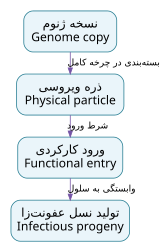
منابع این گام: [R13A1]؛ [R13A2]
۱ — PCR مثبت و آزمون عفونتزایی منفی، بهتنهایی کدام نتیجه را مجاز میکند؟
۲ — کدام ویژگی چرخه ویروس را از تقسیم یک باکتری متمایز میکند؟
۳ — کاهش عفونتزایی با ثابتماندن تعداد ذرات، نخست چه فرضی را رد میکند؟
۱ — گزینه ۲. PCR وجود توالی هدف را نشان میدهد؛ درباره تمامیت ژنوم، ذره سالم یا بیماریزایی نتیجه قطعی نمیدهد. منفی عفونتزایی نیز به سامانه سنجش محدود است.
۲ — گزینه ۳. ویریونهای نسل جدید از اجزای ساختهشده مونتاژ میشوند؛ وجود ژنوم، پروتئین و نیاز انرژی در هر دو مشترک است.
۳ — گزینه ۱. داده نشان میدهد شمار فیزیکی بهتنهایی شاخص ثابت عفونتزایی نیست؛ درباره حضور ژنوم یا نوع کپسید داوری کافی نمیکند.
کپسید (capsid) پوسته پروتئینی محافظ ژنوم است و نوکلئوکپسید به مجموعه ژنوم و پروتئینهای همراه آن گفته میشود. واژه کپسومر واحد ریختشناختی قابل تشخیص را توصیف میکند؛ نباید آن را همیشه با یک زنجیره پلیپپتیدی برابر گرفت. تقارن بیستوجهی از تکرار زیرواحدها حول محورهای مشخص حاصل میشود، در حالی که تقارن مارپیچی با آرایش تکراری پروتئین در امتداد ژنوم ارتباط دارد. شکل ظاهری، قطبیت ژنوم یا نوع پلیمراز را بهتنهایی تعیین نمیکند.
پوشش ویروس (envelope) لایهای غشایی است که لیپیدهای آن معمولاً از غشای میزبان میآیند، اما پروتئینهای ویروسی جایگرفته در آن، اتصال و همجوشی را انجام میدهند. پس «منشأ میزبانی غشا» به معنی یکسانبودن پوشش با غشای اولیه سلول نیست. ویروس بدون پوشش نیز میتواند برجستگی یا پروتئین اتصال داشته باشد؛ اسپایک مترادف پوشش نیست. ویروس پوششدار هم در زیر غشا ساختار پروتئینی و ژنوم دارد.
آسیب غشا میتواند ورود وابسته به همجوشی را مختل کند، حتی اگر ژنوم هنوز با روش مولکولی شناسایی شود. مقاومت محیطی را باید در چارچوب خانواده، ماتریکس نمونه و عامل فیزیکی بررسی کرد؛ گزاره «همه ویروسهای بدون پوشش در هر شرایطی مقاوماند» بیش از شواهد است. برای آزمون، نقش مکانیکی جزء آسیبدیده را پیدا کنید: کپسید در حفاظت و انتقال، پروتئین اتصال در شناسایی، و پروتئین همجوشی در عبور از سد غشایی نقش دارند.
در یک مدل، لیپید پوشش آسیب دیده ولی اتصال سطحی و PCR حفظ شده است. کاهش عفونت را چگونه توضیح میدهید؟
وجود ژنوم و اتصال کافی نیست. آسیب غشای کارکردی میتواند مرحله همجوشی یا ورود را مختل کند؛ داده هنوز محل دقیق نقص را بدون شاهد بیشتر ثابت نمیکند.
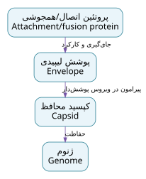
منابع این گام: [R13A1]؛ [R13A2]
۱ — وجود برجستگی سطحی در تصویر یک ویروس چه چیزی را ثابت نمیکند؟
۲ — منشأ لیپید پوشش از میزبان با کدام گزاره سازگار است؟
۳ — آسیب پروتئین همجوشی با حفظ اتصال، بیشتر کدام مرحله را تهدید میکند؟
۱ — گزینه ۳. ویروسهای بدون پوشش نیز پروتئینهای برجسته اتصال دارند؛ از برجستگی نمیتوان غشای لیپیدی را نتیجه گرفت.
۲ — گزینه ۲. غشای مشتق از میزبان با پروتئینهای ویروسی سازمان مییابد؛ منشأ لیپید، نوع ژنوم یا نبود پروتئین ویروسی را تعیین نمیکند.
۳ — گزینه ۴. اتصال میتواند باقی بماند ولی عبور کارکردی از غشا شکست بخورد؛ PCR یا ساخت نوکلئوتید مستقیماً کارکرد همجوشی را نمیسنجند.
گروهبندی بالتیمور (Baltimore classification) از یک پرسش مشترک آغاز میکند: ژنوم چگونه RNA پیامرسان قابل ترجمه تولید میکند؟ هفت گروه اصلی شامل dsDNA، ssDNA، dsRNA، RNA مثبت، RNA منفی، RNA دارای رونویسی معکوس و DNA دارای رونویسی معکوساند. شماره گروه، رتبه ردهشناختی نیست. اشتراک دو ویروس در گروه چهار فقط نشان میدهد ژنوم RNA با جهت پیامرسان دارند؛ خویشاوندی نزدیک، پوشش یکسان یا گیرنده مشترک از آن نتیجه نمیشود.
RNA مثبتِ معمول گروه چهار میتواند ابتدا ترجمه شود و پلیمراز وابسته به RNA را فراهم کند؛ همانندسازی ژنوم سپس از واسطه مکمل منفی میگذرد. RNA منفی ابتدا باید به mRNA تبدیل شود؛ سلول میزبان پلیمراز عمومی لازم برای رونویسی ژنوم RNA ویروس را در اختیار آن نمیگذارد، بنابراین پلیمراز ویروسی همراه مجموعه ورودی اهمیت دارد. dsRNA نیز مستقیماً پیامرسان نیست و برای آزادکردن رونوشت مثبت به دستگاه رونویسی ویروسی نیاز دارد.
DNA دورشتهای معمولاً قالب رونویسی است؛ DNA تکرشتهای پیش از رونویسی متعارف، واسطه دورشتهای میسازد. در گروه شش، با وجود قطبیت مثبت RNA، چرخه متعارف از DNA و رونویسی معکوس عبور میکند؛ بنابراین آن را با گروه چهار یکی نگیرید. در گروه هفت، DNA ویریونی از مسیر واسطه RNA بازسازی میشود. در پاسخ به سؤال، نوع پلیمراز، قالب و محصول هر پیکان را بنویسید؛ «مثبت» یا «DNA» بهتنهایی تمام چرخه را تعیین نمیکند.
ویروس A ژنوم RNA مثبت دارد اما برای چرخه مولد به واسطه DNA وابسته است. چرا گروه چهار کافی نیست؟
وجود مرحله ضروری رونویسی معکوس آن را در منطق گروه شش قرار میدهد. قطبیت مثبت، معیار یگانه گروه چهار نیست؛ مسیر تولید ژنوم و mRNA نیز تعیینکننده است.
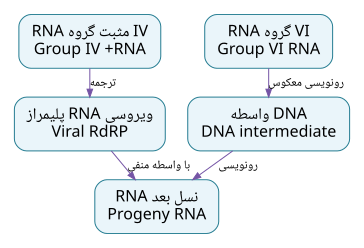
منابع این گام: [R13A1]؛ [R13A2]؛ [R13A3]؛ [R13A6]
۱ — ضرورت پلیمراز همراه ویریون در ویروس RNA منفی اساساً ناشی از چیست؟
۲ — دو ویروس در یک گروه بالتیمور قرار دارند. کدام نتیجه لزوماً درست است؟
۳ — نخستین واسطه لازم برای رونویسی متعارف ژنوم ssDNA چیست؟
۱ — گزینه ۲. رشته منفی پیامرسان نیست؛ پلیمراز ویروسی باید نخست رونوشت مثبت بسازد. ریبوزوم سلول وجود دارد ولی این تبدیل را انجام نمیدهد.
۲ — گزینه ۳. بالتیمور نوع ژنوم و راه بیان آن را مقایسه میکند؛ این اشتراک برای یکساندانستن خانواده، میزبان یا بیماری کافی نیست.
۳ — گزینه ۱. ساخت رشته مکمل DNA قالب دورشتهای مناسب رونویسی را فراهم میکند؛ RNA دورشتهای واسطه ضروری این راه نیست.
کمیته بینالمللی ردهبندی ویروسها (ICTV) چارچوب رسمی نامگذاری و ردهبندی را نگه میدارد. شباهت توالی و تحلیل تبارزایی در کنار ویژگیهای ژنوم، ساختمان و زیستشناسی برای تعیین مرز ردهها به کار میروند. خانواده و جنس رتبهاند؛ نام یک بیماری، نام متداول ویروس و نام گونه الزاماً یکی نیستند. شمار خانوادهها و نام گونهها با تصویبهای تازه تغییر میکند، بنابراین عددهای یک کتاب قدیمی را وضعیت روز معرفی نکنید.
دامنه میزبان (host range) مجموعه میزبانهای قابل آلودهشدن را توصیف میکند، در حالی که تروپیسم (tropism) ترجیح یا توان آلودهسازی بافت و سلول در یک میزبان را بیان میکند. ورود به سلول به گیرنده، همگیرنده و دسترسپذیری بافت وابسته است؛ پس از ورود نیز عوامل همانندسازی، وضعیت تمایز و دفاع ذاتی محدودیت ایجاد میکنند. سلول حساس به ورود ممکن است برای تولید نسل ویروس مجاز نباشد. تمایز حساسبودن (susceptibility) و مجازبودن (permissiveness) برای تحلیل آزمایش مهم است.
افزایش اتصال در سلولی که ژنوم نسل جدید نمیسازد، بهتنهایی گسترش دامنه تکثیر مولد را ثابت نمیکند. همچنین شناسایی RNA در جانور، بدون شواهد تکثیر و زنجیره انتقال، میزبان طبیعی بودن آن را قطعی نمیکند. در سؤالهای ردهبندی، ابتدا معلوم کنید پرسش درباره خویشاوندی است یا مسیر بیان ژن؛ در سؤالهای میزبان، مانع ورود را از مانع پس از ورود جدا سازید و نامگذاری را به نسخه و تاریخ منبع محدود کنید.
دو رده سلولی اتصال مشابه دارند؛ تنها یکی نسل عفونتزا آزاد میکند. اختلاف را باید در کدام سطح جستوجو کرد؟
اتصال برابر مانع تفاوتهای ورود کارکردی، دسترسی به عوامل درونسلولی یا دفاع ذاتی نیست. داده اختلاف خروجی عفونت در دو رده را نشان میدهد؛ علت میتواند ورود کارکردی یا مراحل پس از ورود باشد و مجازبودن محیط داخلی هنوز مستقلاً تعیین نشده است.
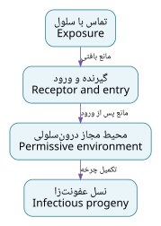
منابع این گام: [R13A1]؛ [R13A2]؛ [R13A3]
۱ — بیان گیرنده و ورود ژنوم بدون تولید نسل ویروس، کدام تمایز را نشان میدهد؟
۲ — برای انتساب دو ویروس به یک گونه، کدام شاهد بهتنهایی کافی نیست؟
۳ — چرا عدد خانوادههای ویروسی در کتاب قدیمی را نباید بدون تاریخ نقل کرد؟
۱ — گزینه ۱. گیرنده و ورود برای حساسیت اهمیت دارند؛ تکثیر مولد به شرایط پس از ورود هم وابسته است و با ورود برابر نیست.
۲ — گزینه ۴. علامت مشترک میتواند حاصل ویروسهای نامرتبط باشد؛ مرزبندی گونه باید معیارهای ردهشناختی همان گروه را رعایت کند.
۳ — گزینه ۲. ICTV ردهبندی را با شواهد و تصویب رسمی بهروزرسانی میکند؛ این تغییر به معنی بیمبنابودن ردهبندی یا حذف همگانی ردهها نیست.
• ویریون واحد انتقال ژنوم است؛ شمار ذرات، شمار ژنوم و شمار واحدهای عفونتزا یکسان نیست.
• پوشش غشایی از میزبان منشأ میگیرد، اما اجزای ویروسی کارکرد ورود را تعیین میکنند.
• بالتیمور مسیر رسیدن به mRNA را گروهبندی میکند؛ ICTV رابطه ردهشناختی را صورتبندی میکند.
• دامنه میزبان و تروپیسم حاصل عبور از چند مانع پیاپیاند.
| ویژگی | پرسش درست | استنباط نامجاز |
|---|---|---|
| نوع ژنوم | برای تولید mRNA چه تبدیلی لازم است؟ | تعیین خانواده فقط از قطبیت RNA |
| پوشش | آیا غشای کارکردی برای ورود لازم است؟ | فرض یکسانبودن همه روشهای خروج |
| گیرنده | آیا اتصال امکانپذیر است؟ | برابرگرفتن اتصال با تکثیر مولد |
| آزمون ژنوم | آیا توالی هدف وجود دارد؟ | اثبات عفونتزایی هر مولکول |
اتصال (attachment) نخستین تماس اختصاصی ویروس با مؤلفههای سطح سلول است، اما یک واکنش ساده تکگیرندهای در همه ویروسها نیست. عامل اتصال میتواند ذره را روی سطح متمرکز کند و گیرنده ورود، تغییر ساختاری یا درونیسازی را آغاز کند. همگیرنده، وضعیت گلیکوزیلاسیون و جایگاه گیرنده در بافت نیز اهمیت دارند. بنابراین مشاهده اتصال به یک مولکول خالص، بهتنهایی ثابت نمیکند آن مولکول در سلول زنده برای ورود کافی است.
تروپیسم حاصل چند لایه انتخاب است. ویروس باید به بافت برسد، به سطح مناسب متصل شود، از سد غشایی عبور کند و در محیط درونسلولی قابل تکثیر باشد. در آدنوویروس نمونه، پروتئین فیبر با گیرندههای اتصال و ناحیه پنتون با مؤلفههای درونیسازی تعامل میکنند؛ گیرندهها و مسیرهای دقیق میان انواع متفاوتاند. تعمیم یک نوع آدنوویروس به همه اعضای خانواده، حتی اگر تصویر کپسید مشابه باشد، درست نیست.
در تفسیر داده، کاهش مقدار ویروس متصل میتواند از تغییر تعداد گیرنده، دسترسپذیری سطح یا آسیب ذره حاصل شود. کاهش محصول نهایی با اتصال ثابت، بیشتر مرحلهای پس از اتصال را مطرح میکند؛ برای تعیین همانندسازی یا بلوغ باید شواهد اختصاصی داشت. وجود گیرنده در بافت نیز ابتلا یا شدت بیماری را بهتنهایی پیشبینی نمیکند. منطق آزمونی این است که شرط لازم را با شرط کافی عوض نکنید و اثر یک مداخله بر سلامت سلول را از اثر اختصاصی بر ورود جدا کنید.
مهار یک مؤلفه سطحی اتصال را ثابت نگه میدارد اما ورود کارکردی کم میشود. آیا آن مؤلفه بیاهمیت است؟
خیر؛ ممکن است درونیسازی یا فعالسازی ورود را پس از اتصال انجام دهد. اتصال ثابت، فقط نبود اثر آشکار بر همان سنجه اتصال را نشان میدهد.
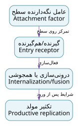
منابع این گام: [R13A1]؛ [R13A2]؛ [R13A9]
۱ — اتصال طبیعی و کاهش شدید محصول نسل بعد، کدام محل نقص را قطعی نمیکند؟
۲ — مولکولی اتصال را افزایش میدهد اما بهتنهایی ورود ایجاد نمیکند. بهترین نام کارکردی چیست؟
۳ — کدام گزاره درباره تروپیسم دقیقتر است؟
۱ — گزینه ۳. داده میتواند با نقص ورود، بیان، همانندسازی یا بلوغ سازگار باشد؛ تعیین دقیق پلیمراز به سنجه اختصاصی نیاز دارد.
۲ — گزینه ۱. عامل اتصال میتواند تماس را تقویت کند بیآنکه برای فعالسازی ورود کافی باشد؛ پلیمراز یا ژنوم از این آزمایش نتیجه نمیشود.
۳ — گزینه ۴. وجود گیرنده یک لایه محدودیت است؛ عوامل درونسلولی و دفاع میزبان نیز تعیین میکنند چرخه به تولید نسل برسد.
ورود (entry) تحویل مجموعه کارکردی ویروس به محل مناسب سلول است. ویروس پوششدار میتواند در سطح سلول یا پس از درونیسازی با غشای سلولی همجوشی کند. کمشدن pH در اندوزوم برای بعضی ویروسها محرک تغییر ساختار پروتئین همجوشی است، اما نیاز به اسیدیشدن قانون همه ویروسهای پوششدار نیست. ویروس بدون پوشش نیز از راههای گوناگون، از جمله تغییر کپسید و عبور از غشای درونسلولی، ژنوم را تحویل میدهد؛ نبود پوشش به معنی نبود مانع غشایی نیست.
پوششبرداری (uncoating) را نباید همیشه جداشدن ناگهانی تمام پروتئینها از اسید نوکلئیک تصور کرد. برخی ویروسها ژنوم را تا نزدیکی محل همانندسازی در مجموعه محافظ حمل میکنند. در آدنوویروس، بازآرایی تدریجی کپسید، خروج از اندوزوم و انتقال به منفذ هستهای به تحویل ژنوم به هسته کمک میکند. در پاکسویروس، رونویسی زودرس میتواند در هسته مرکزی ورودی رخ دهد و آزادشدن بیشتر ژنوم پس از بیان زودرس انجام شود.
در تحلیل آزمایش، ذره درون اندوزوم هنوز الزاماً به سیتوپلاسم دسترسی کارکردی ندارد. فلورسانس داخل سلول میتواند فقط درونیسازی را نشان دهد، در حالی که سنتز RNA تازه یا محصول اختصاصی شاهد مرحله بعد است. همچنین مهار اسیدیشدن میتواند کارکردهای سلولی دیگری را تغییر دهد؛ اثر بر یک ویروس به همه ویروسها تعمیم داده نمیشود. برای پاسخ آزمون، جایگاه رخداد، جزء فعال و ماهیت سنجه را همراه یکدیگر بنویسید.
در مدل فرضی، ذرات وارد اندوزوم میشوند اما محصول اولیه ژنی دیده نمیشود. آیا ورود کامل اثبات شده است؟
درونیسازی اثبات شده، اما عبور کارکردی از غشا و پوششبرداری مناسب هنوز ثابت نیست؛ سیگنال داخل وزیکول با دسترسی ژنوم به دستگاه بیان یکی نیست.
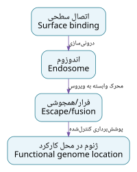
منابع این گام: [R13A2]؛ [R13A4]؛ [R13A9]
۱ — وجود ذره نشاندار در اندوزوم مستقیماً کدام رخداد را نشان میدهد؟
۲ — در پاکسویروس، رونویسی زودرس از مجموعه مرکزی ورودی با کدام نتیجه سازگار است؟
۳ — حساسیت یک ویروس به مهار اسیدیشدن اندوزوم چه چیزی را ثابت نمیکند؟
۱ — گزینه ۱. سیگنال اندوزومی مکان ذره را نشان میدهد؛ دسترسی ژنوم به محل بیان و تکمیل چرخه از آن نتیجه نمیشود.
۲ — گزینه ۳. دستگاه رونویسی بستهبندیشده RNA زودرس را میسازد؛ این فرایند به معنی وجود ریبوزوم ویریونی یا ورود ضروری ژنوم به هسته نیست.
۳ — گزینه ۲. مسیرهای همجوشی متنوعاند؛ نتیجه یک ویروس را نمیتوان قانون همه ویروسهای پوششدار دانست. اثرهای سلولی مداخله نیز باید لحاظ شود.
مونتاژ (assembly) آرایش پروتئینها و ژنوم در ذره جدید است؛ بستهبندی (packaging) انتخاب و جایدادن ماده ژنتیکی را برجسته میکند و بلوغ (maturation) گذار به ساختار کارکردی عفونتزا را توصیف میکند. این مراحل ممکن است همپوشان باشند ولی مترادف نیستند. ذرهای با ظاهر تقریباً کامل میتواند به دلیل نقص در برش پروتئینی، انتخاب ژنوم یا بازآرایی ساختار، عفونتزایی اندکی داشته باشد. بنابراین تصویر میکروسکوپی، بهتنهایی آزمون بلوغ نیست.
سیگنالهای بستهبندی و تعامل اسید نوکلئیک با پروتئینها به انتخاب ژنوم کمک میکنند. در ژنوم قطعهقطعه، ترکیب مناسب قطعات اهمیت ویژه دارد؛ حضور یک قطعه یا یک پروتئین برای اثبات کاملبودن مجموعه کافی نیست. در پیکورناویروس نمونه، پردازش پلیپروتئینها و رویدادهای بلوغ کپسید با تشکیل ذره عفونتزا ارتباط دارند. برخی پیشسازها علاوه بر تأمین پروتئینهای نهایی، کارکرد مستقلی دارند؛ برش بیشتر همیشه معادل کارکرد بهتر نیست.
اگر مداخلهای تعداد ذرات را ثابت ولی عفونتزایی را کم کند، اختلال بلوغ فرضی منطقی است، اما اثبات آن به شواهد پردازش و ساختمان نیاز دارد. اگر RNA زیاد ولی ذره کم باشد، نقص میتواند در ترجمه ساختاری، مونتاژ یا خروج باشد. مقایسه باید غلظت داخل و خارج سلول و سلامت سلول را نیز در نظر بگیرد. در سؤالهای آزمون، «ساخت ژنوم»، «ساخت کپسید»، «ورود ژنوم به ذره» و «فعالشدن ذره» را چهار متغیر مجزا تصور کنید.
تعداد ذرات نسل جدید تغییر نکرده اما پیشساز کپسید تجمع یافته و عفونتزایی کم شده است. فرض مناسب چیست؟
نقص پردازش و بلوغ با داده سازگار است؛ تشکیل ذره بهتنهایی کافی نبوده است. برای نسبتدادن اثر اختصاصی باید احتمال آسیب غیرمستقیم سلولی یا نقص ژنوم نیز ارزیابی شود.
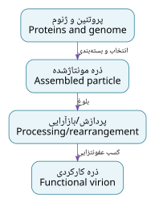
منابع این گام: [R13A2]؛ [R13A5]؛ [R13A9]؛ [R13A10]
۱ — ظاهر کامل ذره همراه با تجمع پیشساز و کاهش عفونتزایی بیشتر کدام فرض را تقویت میکند؟
۲ — برای ویروس قطعهقطعه، شناسایی تنها یک قطعه چه چیزی را ثابت نمیکند؟
۳ — کدام توالی مفهومی مناسبتر است؟
۱ — گزینه ۳. تشکیل ذره رخ داده ولی پردازش پیشساز مختل است؛ مونتاژ ظاهری با بلوغ کارکردی برابر نیست.
۲ — گزینه ۲. کاملبودن ژنوم به مجموعه مناسب قطعات وابسته است؛ شناسایی یک قطعه فقط وجود همان توالی را نشان میدهد.
۳ — گزینه ۱. ساخت اجزا، تشکیل ذره و گذار بلوغ را باید متمایز کرد؛ ویروس از راه تقسیم دوتایی تکثیر نمیشود.
خروج (egress) مجموعه رخدادهایی است که ذره نسل جدید را در دسترس سلول بعدی قرار میدهد. در جوانهزنی (budding)، ارتباط میان پروتئینهای ساختاری و غشای میزبان به شکلگیری ذره پوششدار کمک میکند. اگر جوانهزنی به غشای درونسلولی انجام شود، ذره میتواند سپس در مسیر وزیکولی و اگزوسیتوز آزاد شود؛ پس منشأ پوشش لزوماً غشای پلاسمایی نیست. در آرتوکروناویروسها، مونتاژ در ناحیه غشایی شبکه آندوپلاسمی–گلژی با مسیر خروج وزیکولی پیوند دارد.
لیز با گسیختگی سلول و آزادشدن محتوا همراه است، اما تقسیم ساده «پوششدار مساوی جوانهزنی و بدون پوشش مساوی لیز» استثناهای مهم دارد. بعضی ویروسهای بدون پوشش میتوانند در وزیکولها خارج شوند و بعضی ویروسهای پوششدار نیز آسیب شدید و مرگ سلولی ایجاد میکنند. پاکسویروس میتواند شکلهای ذرهای متفاوت با پوششهای متفاوت تولید کند؛ از همین رو شمارش یک جزء پوششی ممکن است همه ذرات را با حساسیت یکسان اندازه نگیرد.
در تحلیل مدل آموزشی، زیادشدن ذرات داخل سلول و کمشدن ذرات خارج سلول، با نقص خروج سازگار است؛ کاهش همزمان هر دو مخزن میتواند پیش از خروج رخ دهد. نسبت داخل به خارج باید با زمان سنجش و تخریب ذرات تفسیر شود. جوانهزنی نیز تضمین نمیکند سلول برای همیشه زنده بماند. سؤالهای خوب نقش غشا، مسیر جابهجایی و زمان ظهور عفونتزایی را از آسیب نهایی سلول جدا میکنند و از یک مشاهده، قانون همه خانوادهها نمیسازند.
در یک مدل، ذرات عفونتزای داخل سلول زیاد و عفونتزایی محیط کم است. نخستین تبیین مرحلهای چیست؟
اختلال خروج یا جابهجایی به بیرون مطرح است، چون ذرات کارکردی داخل سلول وجود دارند. کاهش پایداری بیرون سلول نیز جایگزین مهمی است و باید از نقص خروج تفکیک شود.
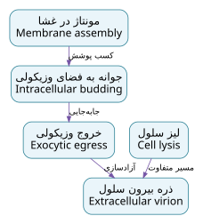
منابع این گام: [R13A1]؛ [R13A2]؛ [R13A4]؛ [R13A7]
۱ — پوششداربودن ویروس بهتنهایی کدام گزاره را ثابت میکند؟
۲ — ذرات کارکردی داخل سلول طبیعی و محصول بیرون کم است. کدام فرض نزدیکتر است؟
۳ — جوانهزنی به غشای درونسلولی با کدام مرحله بعدی سازگار است؟
۱ — گزینه ۳. تعریف پوشش به وجود غشا مربوط است؛ محل کسب پوشش و راه خروج در خانوادهها متفاوت است.
۲ — گزینه ۱. وجود ذره کارکردی داخل نشان میدهد مراحل زیادی انجام شدهاند؛ خروج و پایداری بیرونی دو توضیح نزدیکاند که باید تفکیک شوند.
۳ — گزینه ۲. ذره میتواند پس از کسب پوشش در فضای وزیکولی، با جابهجایی و اگزوسیتوز آزاد شود؛ نوع ژنوم از مسیر غشایی تعیین نمیشود.
• اتصال، ورود و پوششبرداری رویدادهای مجزا هستند و باید با سنجه متناسب بررسی شوند.
• ورود ویروس پوششدار میتواند با همجوشی در سطح یا پس از اندوسیتوز رخ دهد.
• مونتاژ ذره و بلوغ کارکردی مترادف نیستند.
• جوانهزنی، اگزوسیتوز و لیز، راههای متفاوت خروجاند و نباید از پوشش به یک راه واحد رسید.
| مرحله | نقش اصلی | نمونه خطای استنباط |
|---|---|---|
| اتصال | شناخت و نگهداشت سطحی | برابرگرفتن با تکثیر |
| پوششبرداری | دسترسی کنترلشده به ژنوم | فرض تجزیه فوری همه اجزا |
| مونتاژ | آرایش اجزای ذره | برابرگرفتن با بلوغ |
| خروج | انتقال ذره به بیرون | فرض لیز در هر ویروس بدون پوشش |
در بسیاری از ویروسهای DNA جانوری، ژنوم به هسته تحویل داده میشود تا دستگاه رونویسی میزبان و عوامل هستهای در دسترس باشند. با این حال، «استفاده از هسته» به معنی استفاده از همه آنزیمهای میزبان نیست. در آدنوویروس، RNA پلیمراز II میزبان رونوشتهای پیامرسان را از ژنوم ویروسی میسازد، اما مجموعه همانندسازی DNA شامل پروتئینهای ویروسی است. RNA پلیمراز و DNA پلیمراز را با توجه به قالب و محصول، نه صرفاً جایگاه هسته، تشخیص دهید.
ژنوم آدنوویروس خطی و دورشتهای است. محصولات زودرس به بازآرایی محیط سلول، تنظیم رونویسی و فراهمکردن اجزای همانندسازی کمک میکنند. رونوشتهای اولیه با کلاهکگذاری، پلیآدنیلاسیون و پردازش پیرایشی به پیامرسانهای گوناگون تبدیل میشوند. از یک ناحیه رونویسی میتوان چند محصول به دست آورد؛ این راهبرد با ترجمه یک پلیپروتئین بلند و برش آن یکسان نیست. همه RNAهای ویروسی نیز لزوماً mRNA نیستند؛ RNAهای غیرکدکننده میتوانند نقش تنظیمی داشته باشند.
برای تحلیل مداخله، افت RNA ویروسی با افت نسخه DNA دو رخداد متفاوت است. کاهش RNA ممکن است از نقص انتقال ژنوم، رونویسی یا پایداری RNA باشد؛ کاهش DNA نسل جدید میتواند در مرحله همانندسازی رخ دهد. اگر DNA ورودی اندازهگیری شود، وجود آن بهتنهایی ساخت DNA تازه را نشان نمیدهد. ویروسهای کوچک و بزرگ در میزان اتکا به میزبان متفاوتاند؛ از نمونه آدنوویروس نمیتوان برای همه dsDNAها فهرست واحدی از آنزیمها نوشت.
DNA ورودی آدنوویروس در هسته حاضر است، اما mRNA زودرس کاهش یافته است. آیا مشکل ورود به هسته قطعی است؟
خیر؛ ورود هستهای طبق داده رخ داده است. اختلال رونویسی، پایداری RNA یا دسترسپذیری قالب مطرح است و سنجش جداگانه لازم دارد.
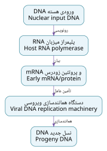
منابع این گام: [R13A2]؛ [R13A9]
۱ — در آدنوویروس، استفاده از RNA پلیمراز II میزبان چه چیزی را ثابت نمیکند؟
۲ — چند mRNA متفاوت از رونوشت اولیه مشترک با کدام سازوکار سازگار است؟
۳ — ثابتماندن DNA ورودی با کاهش RNA زودرس، کدام فرض را مستقیماً ترجیح میدهد؟
۱ — گزینه ۳. RNA پلیمراز II کار رونویسی میکند؛ وجود آن نوع یا منشأ DNA پلیمراز همانندساز ویروس را تعیین نمیکند.
۲ — گزینه ۱. پردازش رونوشت، از جمله پیرایش، پیامرسانهای متعدد میسازد؛ این با برش یک پلیپروتئین پس از ترجمه متفاوت است.
۳ — گزینه ۲. قالب ورودی حاضر است، پس نقص در بیان یا پایداری RNA مطرح میشود؛ داده تعیینکننده نوع نقص دقیق یا خروج نسل نیست.
پاکسویروسها ژنوم DNA دورشتهای بزرگ دارند، اما بخش اصلی چرخه بیان و همانندسازی آنها در سیتوپلاسم انجام میشود. این ویژگی نشان میدهد قاعده «DNA همیشه در هسته» معتبر نیست. چون RNA پلیمراز هستهای میزبان در محل ژنوم ورودی در دسترس نیست، ذره پاکس دستگاه رونویسی ویروسی و عوامل لازم برای تولید رونوشتهای اولیه را همراه میآورد. آنزیم بستهبندیشده در نخستین ساعات چرخه پیش از آن عمل میکند که نسخه تازه همان آنزیم ساخته شود.
رونویسی زودرس از مجموعه مرکزی نیمهپوششبرداریشده آغاز میشود و پیامرسانها برای ترجمه به بیرون آن میآیند. محصولات زودرس در پوششبرداری بیشتر، همانندسازی DNA و تنظیم میزبان نقش دارند. ژنهای میانی عوامل لازم برای بیان دیررس را فراهم میکنند و ژنهای دیررس بسیاری از پروتئینهای ساختمانی و عوامل مورد نیاز نسل بعد را میسازند. در نتیجه، برخی پروتئینهایی که دیر ساخته میشوند در عفونت بعدی خیلی زود عمل خواهند کرد؛ زمان ساخت را با زمان کارکرد در نسل بعد عوض نکنید.
وجود دستگاه گسترده ویروسی به معنی استقلال از سلول نیست؛ ترجمه، انرژی و بسیاری از مؤلفههای محیط همچنان میزبانوابستهاند. کارخانه ویروسی سیتوپلاسمی نیز ریبوزوم ویروسی مستقل ایجاد نمیکند. در سؤالهای مقایسهای، سه محور را مستقل بنویسید: نوع ژنوم، جایگاه چرخه و منشأ آنزیم رونویسی. برای نامگذاری و شمار ردهها باید به نسخه ICTV مراجعه کرد؛ سازوکار پایه سیتوپلاسمی را با یک نام قدیمی گونه پیوند نزنید.
پروتئینی در فاز دیررس پاکس ساخته و در ویریون بستهبندی میشود، ولی در عفونت بعدی پیش از همانندسازی عمل میکند. تناقضی وجود دارد؟
خیر؛ زمان ساخت در سلول تولیدکننده با زمان عمل در سلول بعدی متفاوت است. عامل همراه ذره میتواند نخستین رونویسی زودرس نسل بعد را ممکن کند.
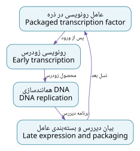
منابع این گام: [R13A4]
۱ — دلیل اصلی اهمیت RNA پلیمراز همراه پاکسویریون چیست؟
۲ — کدام استنباط درباره پاکسویروس نادرست است؟
۳ — عامل دیررس بستهبندیشده چه زمانی میتواند کارکرد زودرس داشته باشد؟
۱ — گزینه ۳. RNA پلیمراز ویروسی رونوشت اولیه را در مجموعه سیتوپلاسمی میسازد؛ این آنزیم ترجمه یا همه کارکردهای میزبان را جایگزین نمیکند.
۲ — گزینه ۴. محل سیتوپلاسمی و دستگاه گسترده ویروسی وابستگی به ریبوزوم و متابولیسم سلول را حذف نمیکند.
۳ — گزینه ۱. ذره نسل جدید عامل را به سلول بعدی میبرد، بنابراین عامل ساختهشده در فاز دیررس یک چرخه میتواند زودرس چرخه بعد کار کند.
ژنوم پاروویروس DNA تکرشتهای است، اما پیامرسان ویروسی مستقیماً از یک RNA ژنومی موجود حاصل نمیشود. پس از تحویل ژنوم به هسته، ساخت رشته مکمل DNA، قالب دورشتهای همانندساز را ایجاد میکند. این واسطه برای آغاز برنامه رونویسی اهمیت دارد؛ تکرشتهایبودن ژنوم ویریونی به معنی تکرشتهایماندن تمام چرخه نیست. قطبیت مثبت و منفی DNA را نیز با قابلیت مستقیم ترجمه RNA مثبت اشتباه نگیرید؛ ریبوزوم DNA را ترجمه نمیکند.
پاروویروسها برای ساخت DNA به DNA پلیمرازهای سلول وابستهاند. پروتئین NS1 یک آغازگر چندکاره با فعالیت اتصال به DNA، برش اختصاصی و هلیکازی است و نباید آن را DNA پلیمراز نامید. انتهای سنجاقسری ژنوم در راهبرد همانندسازی سنجاقسری غلتان (rolling hairpin) شرکت میکند. بازشدن و بازتاخوردن این انتهاها اجازه میدهد واسطههای دورشتهای و سپس رشتههای نسل جدید ساخته شوند. این سازوکار با تلومراز سلول یوکاریوتی یا رونویسی معکوس یکی نیست.
وابستگی به دستگاه DNA میزبان، ارتباط با وضعیت چرخه سلولی را توضیح میدهد؛ با این حال جزئیات و استثناها میان اعضا متفاوت است و برخی به عوامل کمکی نیاز دارند. مشاهده واسطه DNA دورشتهای در سلول، ژنوم ویریونی را به گروه dsDNA تبدیل نمیکند؛ بالتیمور بر وضعیت ژنوم و مسیر بیان تکیه دارد. در سؤال تحلیلی، ابتدا DNA داخل ذره را از DNA واسطه در سلول جدا و سپس نقش NS1 را از نقش پلیمراز میزبان تفکیک کنید.
در سلول آلوده به پاروویروس، DNA دورشتهای مشاهده میشود. آیا تشخیص اولیه ssDNA بودن ژنوم اشتباه بوده است؟
خیر؛ DNA دورشتهای میتواند واسطه همانندسازی و رونویسی باشد. تعیین ژنوم ویریونی باید از بررسی واسطههای داخل سلول جدا بماند.
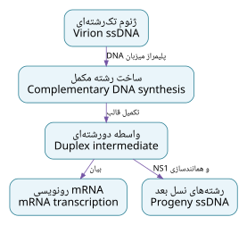
منابع این گام: [R13A2]؛ [R13A6]
۱ — کدام نقش برای NS1 پاروویروس درست است؟
۲ — پیدایش DNA دورشتهای داخل سلول در عفونت ssDNA چه مفهومی دارد؟
۳ — چرا ssDNA را نمیتوان مانند RNA مثبت مستقیماً ترجمه کرد؟
۱ — گزینه ۲. NS1 آغازگر چندکاره است اما فعالیت DNA پلیمرازی ندارد؛ تکثیر DNA به پلیمراز میزبان اتکا میکند.
۲ — گزینه ۳. ساخت رشته مکمل واسطه دورشتهای میسازد؛ این امر نوع ژنوم در ویریون را عوض نمیکند و به RNA واسطه نیاز ندارد.
۳ — گزینه ۱. نوع قند و ماهیت قالب ترجمه اهمیت دارد؛ اطلاعات DNA از راه رونویسی به mRNA در دسترس ریبوزوم قرار میگیرد.
بیان زمانی ژنها نیازهای متفاوت چرخه را هماهنگ میکند. در نمونه آدنوویروس، محصولات زودرس محیط رونویسی و دفاع میزبان را تغییر میدهند و اجزای همانندسازی را فراهم میکنند؛ محصولات میانی و دیررس در مونتاژ و بلوغ اهمیت دارند. در پاکسویروس، آبشار زودرس، میانی و دیررس با ساخت عوامل رونویسی هر مرحله برای مرحله بعد پیوند دارد. واژههای یکسان «زودرس» و «دیررس» به معنی مدار تنظیمی کاملاً یکسان در همه خانوادهها نیستند.
وابستگی بیان دیررس به همانندسازی ممکن است از افزایش قالب، تغییر دسترسپذیری DNA و عوامل اختصاصی رونویسی ناشی شود. بنابراین توقف ساخت DNA میتواند بیان برخی ژنهای دیررس را کم کند، بدون آنکه مستقیماً ریبوزوم را مهار کرده باشد. به همان ترتیب، نقص یک عامل زودرس میتواند چند خروجی دیررس را همزمان کاهش دهد؛ این اثر چندگانه لزوماً چند هدف مستقیم دارویی را ثابت نمیکند. تحلیل باید ترتیب علّی را از همبستگی زمانی جدا سازد.
برای استنباط، اندازه DNA تازه، RNA هر طبقه، پروتئین و ذره عفونتزا چهار لایه متفاوتاند. اندازهگیری در زمان نامناسب میتواند ژنی را زودرس یا دیررس نشان دهد، چون پایداری محصول و ناهمزمانی جمعیت سلولی اثر دارند. در سؤال فرضی، اگر محصول زودرس حفظ و RNA دیررس کم شده، ابتدا موانع میان همانندسازی و فعالشدن رونویسی دیررس را مطرح کنید؛ نقص قطعی مونتاژ از این داده نتیجه نمیشود. بیان «زودتر» را با «علت مستقیم» و تولید زیاد RNA را با تولید زیاد ویریون یکی نگیرید.
مهار اختصاصی ساخت DNA، پروتئین زودرس را حفظ ولی mRNA دیررس را کم میکند. آیا هدف مستقیم، ریبوزوم است؟
داده با وابستگی برنامه دیررس به همانندسازی سازگار است. حفظ پروتئین زودرس و افت mRNA دیررس، بهتنهایی مهار مستقیم ترجمه را پشتیبانی نمیکند.
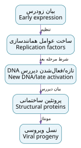
منابع این گام: [R13A4]؛ [R13A9]
۱ — افت همزمان چند پروتئین دیررس پس از نقص عامل زودرس چه چیزی را ثابت نمیکند؟
۲ — حفظ RNA دیررس با کاهش ذرات کارکردی، بررسی کدام سطح را مهمتر میکند؟
۳ — کدام گزاره درباره برچسب «دیررس» دقیقتر است؟
۱ — گزینه ۳. یک نقص بالادست میتواند خروجیهای متعدد را کاهش دهد؛ تعدد خروجی به معنی تعدد هدف مستقیم نیست.
۲ — گزینه ۲. RNA حاضر است ولی تبدیل آن به ذره کارکردی ممکن است در ترجمه، مونتاژ یا بلوغ مختل شده باشد؛ داده هنوز مرحله دقیق را تعیین نمیکند.
۳ — گزینه ۱. زمانبندی و سازوکار تنظیم در خانوادهها متفاوت است؛ نام یکسان، مدار مولکولی یکسان را تضمین نمیکند.
• ژنوم DNA با RNA پلیمراز رونویسی میشود و ترجمه مستقیم DNA رخ نمیدهد.
• بسیاری از ویروسهای DNA در هسته کار میکنند، اما پاکسویروس استثنای مهم سیتوپلاسمی است.
• پاروویروس برای بیان و تکثیر، واسطه DNA دورشتهای میسازد و به DNA پلیمراز میزبان متکی است.
• ترتیب زودرس و دیررس، وابستگیهای علّی چرخه را نشان میدهد و صرفاً برچسب زمانی نیست.
| الگو | منبع رونویسی | نکته تعیینکننده |
|---|---|---|
| آدنوویروس هستهای | RNA پلیمراز II میزبان برای mRNA | DNA پلیمراز ویروسی با دستگاه رونویسی میزبان فرق دارد |
| پاکسویروس سیتوپلاسمی | RNA پلیمراز ویروسی همراه ذره | رونویسی زودرس پیش از همانندسازی DNA |
| پاروویروس ssDNA | رونویسی از واسطه DNA دورشتهای | NS1 هلیکاز/اندونوکلئاز است، نه DNA پلیمراز |
| بیان دیررس | وابسته به برنامه همان خانواده | مهار دیررس الزاماً مهار ترجمه عمومی نیست |
در بسیاری از ویروسهای گروه چهار بالتیمور، RNA ژنومی هم جهت پیامرسان دارد و پس از دسترسی به دستگاه ترجمه میتواند پروتئینهای نخستین را بسازد. این ویژگی در پیکورناویروسها روشن است: RNA ژنوم، قالب ترجمه و حامل اطلاعات وراثتی است و سپس پلیمراز ویروسی تولیدشده از آن، رشته مکمل را میسازد. سلول برای تکثیر این RNA یک RNA پلیمراز عمومی وابسته به RNA در اختیار ویروس قرار نمیدهد؛ توان ترجمه ژنوم راه تأمین آنزیم لازم است.
عبارت «RNA مثبت عفونتزاست» باید با شرایط تفسیر شود. RNA باید سالم، دارای عناصر لازم و در محیط سلولی مناسب در دسترس قرار گیرد. RNA بیرون سلول معمولاً با موانع ورود و تخریب روبهرو است؛ عفونتزایی ژنوم جداشده در سامانه آزمایشی، به معنی انتقال طبیعی مؤثر RNA برهنه بین میزبانها نیست. همچنین نبود گیرنده میتواند ورود ذره را محدود کند، حتی اگر دستگاه درونسلولی برای بیان RNA تحویلدادهشده مناسب باشد.
از این مشاهده میتوان سهم کپسید در عبور از مانع ورود را از سهم ژنوم در راهاندازی بیان جدا کرد، اما گستره میزبان طبیعی را نباید فقط با توان ترجمه RNA تعریف کرد. در رتروویروس، مثبتبودن RNA به معنی حذف مرحله DNA و رونویسی معکوس از چرخه متعارف نیست؛ مقایسه باید گروه بالتیمور و نیازهای کل چرخه را لحاظ کند. برای سؤال تحلیلی، «قابلیت پیامرسانی»، «توان آغاز چرخه پس از تحویل مناسب» و «راه انتقال طبیعی» سه مفهوم جدا هستند.
یک سلول ذره کامل ویروس را نمیپذیرد اما پس از دسترسی مناسب RNA مثبت، پروتئین ویروسی میسازد. کدام مانع مطرح است؟
مانع ورود ذره میتواند با محیط ترجمهپذیر داخل سلول همزمان وجود داشته باشد. ساخت پروتئین بهتنهایی هنوز تکثیر کامل و خروج نسل عفونتزا را ثابت نمیکند.
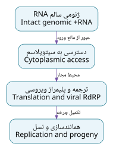
منابع این گام: [R13A2]؛ [R13A5]
۱ — توان RNA مثبت جداشده برای آغاز بیان چه چیزی را ثابت نمیکند؟
۲ — چرا ژنوم RNA مثبت گروه چهار میتواند بدون RdRP همراه ذره بیان را آغاز کند؟
۳ — سلول بدون گیرنده ذره، RNA تحویلدادهشده را ترجمه میکند. کدام نتیجه دقیقتر است؟
۱ — گزینه ۳. شرایط دسترسی آزمایشی با موانع انتقال طبیعی فرق دارد؛ قابلیت پیامرسانی تضمین پایداری و ورود طبیعی نیست.
۲ — گزینه ۱. ژنوم میتواند ابتدا پروتئینهای لازم از جمله RdRP را تأمین کند؛ ریبوزوم همانندساز RNA نیست.
۳ — گزینه ۲. ترجمه RNA نشانگر توان بخشی از محیط داخلی است، اما گیرنده و تکمیل نسل ویروس هنوز شروط جداگانهاند.
در پیکورناویروس نمونه، یک چارچوب خواندن باز بزرگ به پلیپروتئین (polyprotein) ترجمه میشود و پروتئازهای ویروسی آن را به محصولات ساختمانی و غیرساختمانی میبرند. بدین ترتیب، تعداد پروتئین نهایی میتواند از تعداد mRNAها بیشتر باشد. این راهبرد با پیرایش یک رونوشت اولیه به چند mRNA تفاوت دارد؛ در اولی تنوع عمدتاً پس از ترجمه پیشساز حاصل میشود، در دومی تنوع رونوشت پیش از ترجمه شکل میگیرد.
پردازش فقط بریدن یک زنجیره به قطعات بیارتباط نیست. برخی پیشسازها مانند مجموعههای چنددامنهای میتوانند کارکردهایی متفاوت از محصولات نهایی داشته باشند و ترتیب و سرعت برش در تنظیم چرخه مؤثر است. در پیکورناویروسها، پروتئاز 3C و در برخی اعضا پروتئازهای دیگر نقش دارند؛ فهرست یک انتروویروس را نباید برای همه جنسها نسخهبرداری کرد. در کروناویروسها نیز پلیپروتئینهای همانندساز بهوسیله پروتئازهای ویروسی پردازش میشوند، اما سازمان ژنوم و بیان پروتئینهای ساختمانی با پیکورناویروس یکی نیست.
مهار پروتئاز میتواند به تجمع پیشساز و کمبود عوامل همانندساز فعال بینجامد؛ بنابراین کاهش RNA نسل جدید ممکن است اثر پاییندستی نقص پردازش باشد. افت RNA بهتنهایی به معنی هدفگیری مستقیم RdRP نیست. در سؤال، تغییر اندازه پیشساز، حضور محصولات نهایی و میزان سنتز RNA را کنار هم بخوانید. همچنین جهش در یک جایگاه برش ممکن است اثر وابسته به آرایش همان زنجیره داشته باشد؛ مکملسازی یک پروتئین آزاد همیشه نقص پردازش درونزنجیرهای را جبران نمیکند.
پس از مداخله، پلیپروتئین تجمع یافته و RNA نسل جدید کاهش مییابد. محتملترین رابطه علّی چیست؟
اختلال پردازش میتواند از فراهمشدن عوامل فعال همانندساز جلوگیری کند. افت RNA پیامد ثانویه محتمل است و برای اثبات هدفگیری مستقیم پلیمراز کافی نیست.
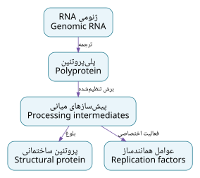
منابع این گام: [R13A5]؛ [R13A7]؛ [R13A9]
۱ — تجمع پلیپروتئین همراه افت RNA نسل بعد بیشتر با کدام مسیر سازگار است؟
۲ — کدام مشاهده پلیپروتئین را از پیرایش جایگزین RNA متمایز میکند؟
۳ — چرا «هرچه برش بیشتر، کارکرد بهتر» قاعده مناسبی نیست؟
۱ — گزینه ۱. نقص برش میتواند عوامل فعال همانندساز را کم کند؛ کاهش RNA الزاماً اثر مستقیم بر پلیمراز نیست.
۲ — گزینه ۳. در راهبرد پلیپروتئین یک زنجیره ترجمهشده پردازش میشود؛ پیرایش در سطح رونوشت RNA رخ میدهد.
۳ — گزینه ۲. نسبت پیشساز و محصول بخشی از تنظیم است؛ بعضی پیشسازها کارکردی دارند که محصول جداشده عیناً جایگزین نمیکند.
RNA زیرژنومی (subgenomic RNA) رونوشت کوتاهتری نسبت به ژنوم کامل است که بیان بخشی از اطلاعات ویروس را ممکن میکند. وجود چند RNA زیرژنومی به معنی قطعهقطعهبودن ژنوم در ویریون نیست. در ژنوم قطعهقطعه، قطعات مستقل در مجموعه ژنتیکی نسل ویروس نقش دارند؛ در راهبرد زیرژنومی، یک ژنوم کامل میتواند چند پیامرسان کوتاهتر بسازد. برای تمایز، باید ماده بستهبندیشده را از مجموعه رونوشتهای داخل سلول جدا بررسی کرد.
در کروناویروس نمونه، قسمت نزدیک انتهای پنجپریم ژنوم، پلیپروتئینهای همانندساز را رمز میکند. ژنهای ساختمانی و کمکی نزدیک انتهای سهپریم عمدتاً از مجموعهای تودرتو از RNAهای زیرژنومی بیان میشوند. این RNAها انتهای سهپریم مشترک و سرآغاز رهبر دارند؛ هر RNA دارای چند چارچوب ممکن است، اما معمولاً چارچوب مناسب نزدیک انتهای پنجپریم آن پیامرسان ترجمه مؤثر دارد. بنابراین وجود یک ژن در چند RNA لزوماً به معنی ترجمه برابر از همه آنها نیست.
همانندسازی ژنوم کامل از واسطه منفی کامل میگذرد، در حالی که ساخت زیرژنومی برنامهای برای بیان بخشهای خاص است. کاهش یک RNA زیرژنومی با حفظ RNA کامل، نقص انتخابی در بیان آن دسته را مطرح میکند و الزاماً مهار کل همانندسازی نیست. تعداد و سازمان رونوشتها میان خانوادهها فرق دارد؛ راهبرد تودرتو کروناویروس را به همه RNAهای مثبت تعمیم ندهید. در سؤالهای دادهای، طول رونوشت، توالی مشترک انتهاها و وضعیت بستهبندی، سه سرنخ متفاوت برای تشخیص ژنوم از پیامرساناند.
یک ویروس ژنوم یکپارچه و چند RNA با انتهای سهپریم مشترک در سلول دارد. آیا ژنوم قطعهقطعه است؟
خیر؛ این الگو با RNAهای زیرژنومی سازگار است. قطعهقطعهبودن ژنوم نیازمند شناسایی قطعات مستقل ژنومی در مجموعه ویریونی است.
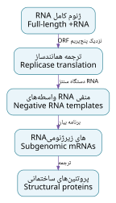
منابع این گام: [R13A7]
۱ — چند RNA کوتاه با انتهای مشترک در سلول، چه چیزی را بهتنهایی ثابت نمیکند؟
۲ — در کروناویروس، نقش اصلی RNAهای زیرژنومی چیست؟
۳ — حفظ RNA کامل با افت انتخابی یک RNA زیرژنومی، کدام تفسیر محتاطانهتر است؟
۱ — گزینه ۲. رونوشتهای زیرژنومی میتوانند از ژنوم یکپارچه تولید شوند؛ قطعات ژنوم با پیامرسانهای کوتاهتر یکی نیستند.
۲ — گزینه ۳. این رونوشتها دسترسی ترجمهای به ژنهای پاییندست را فراهم میکنند؛ مرحله DNA جزء ضروری این راهبرد نیست.
۳ — گزینه ۱. افت انتخابی رونوشت را باید از توقف کلی تکثیر RNA جدا کرد؛ داده درباره عفونتزایی یا نوع DNA حکمی نمیدهد.
ویروسهای RNA مثبت برای تکثیر ژنوم، مجموعههایی از پروتئینهای ویروسی، RNA و عوامل میزبان میسازند که اغلب با غشاهای بازآراییشده سیتوپلاسم ارتباط دارند. این نواحی میتوانند غلظت اجزای همانندساز را افزایش دهند، سازمان فضایی واکنشها را فراهم کنند و دسترسی مولکولهای دفاعی میزبان به واسطههای RNA را تغییر دهند. اندامک همانندسازی (replication organelle) با پوشش غشایی ویریون یکی نیست؛ پیکورناویروسِ بدون پوشش هم از غشاهای داخل سلول برای تکثیر استفاده میکند.
RNA مثبت ابتدا قالب ترجمه و سپس قالب ساخت رشته مکمل منفی است. از رشته منفی، RNAهای مثبت نسل جدید ساخته میشوند؛ پس رشته منفی میتواند واسطه ضروری باشد، هرچند در ذره نهایی ژنوم مثبت بستهبندی شود. یک مولکول RNA نمیتواند همزمان بدون محدودیت در همه نقشهای متعارض به کار رود؛ تنظیم جابهجایی میان ترجمه و همانندسازی، و سازمانیابی مجموعهها، از مسائل مهم چرخه است. فراوانی کم رشته منفی، نبود کارکرد آن را ثابت نمیکند.
تغییر غشا ممکن است بر ورود، ترشح و سلامت سلول نیز اثر بگذارد، بنابراین افت RNA پس از مداخله غشایی الزاماً هدفگیری مستقیم پلیمراز را نشان نمیدهد. در کروناویروسها، مجموعه غیرساختمانی شامل فعالیتهایی مانند پلیمراز و در اعضای شناختهشده اگزونوکلئاز مرتبط با دقت است؛ گزاره کلی «تمام RNAویروسها هیچ تصحیحی ندارند» نادرست است. نتیجه آزمونی باید به ویروس و کارکرد مورد سنجش محدود بماند و وجود RNA منفی داخل سلول را با تغییر گروه ژنوم اشتباه نگیرد.
در ویروس بدون پوشش، ساخت RNA با نواحی غشایی سیتوپلاسمی همراه است. آیا توصیف «بدون پوشش» نادرست است؟
خیر؛ پوشش، ویژگی ذره ویروسی است. بهرهگیری از غشای سلول برای کارخانه همانندسازی مستقل از وجود پوشش روی ویریون است.
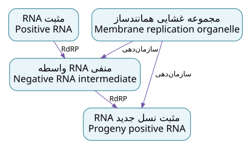
منابع این گام: [R13A5]؛ [R13A7]
۱ — وجود RNA منفی داخل سلول آلوده به ویروس RNA مثبت چه معنایی میتواند داشته باشد؟
۲ — کارخانه غشایی تکثیر در یک پیکورناویروس کدام نتیجه را رد میکند؟
۳ — کدام گزاره درباره دقت همانندسازی RNA مناسبتر است؟
۱ — گزینه ۱. رشته منفی قالب ساخت ژنوم مثبت نسل بعد است؛ نوع ژنوم ویریونی را نباید با واسطه داخل سلولی عوض کرد.
۲ — گزینه ۳. ویروس بدون پوشش هم میتواند غشاهای میزبان را برای همانندسازی بازآرایی کند؛ غشای کارخانه و پوشش ذره دو سطحاند.
۳ — گزینه ۲. گزارش کروناویروس فعالیت اگزونوکلئازی مرتبط با دقت را توصیف میکند؛ تعمیم نبود تصحیح یا نرخ خطای یکسان به همه RNAویروسها درست نیست.
• ژنوم RNA مثبت گروه چهار میتواند نقطه آغاز ترجمه باشد، اما عفونتزایی RNA جداشده شرطمند است.
• پلیپروتئین و پیشسازهای پردازشنشده بخشی از تنظیم چرخهاند.
• RNA زیرژنومی با قطعه مستقل ژنوم تفاوت دارد و راهبرد بیان آن در خانوادهها یکسان نیست.
• ساختارهای غشایی بازآراییشده محل سازمانیابی همانندسازیاند، نه الزاماً پوشش ویریون.
| مفهوم | معنای دقیق | اشتباه رایج |
|---|---|---|
| RNA مثبت | همجهتی با mRNA | یکسانبودن همه چرخهها از جمله رتروویروس |
| پلیپروتئین | پیشساز چند محصول پروتئینی | یک mRNA مستقل برای هر محصول نهایی |
| RNA زیرژنومی | رونوشت کوتاهتر برای بیان | قطعهقطعهبودن ضروری ژنوم |
| اندامک همانندسازی | سازمان غشایی درون سلول | وجود پوشش لیپیدی روی ذره بدون پوشش |
RNA منفی مکمل RNA پیامرسان است و ریبوزوم آن را مانند mRNA ویروس ترجمه نمیکند. برای آغاز بیان، پلیمراز وابسته به RNA ویروسی (RdRP) باید از قالب منفی، رونوشت مثبت بسازد. در ویروسهای RNA منفی جانوری، آنزیم و ژنوم معمولاً در مجموعه ریبونوکلئوپروتئینی وارد سلول میشوند. نیاز به آنزیم همراه، پیامد منطقی نبود توان ترجمه مستقیم قالب منفی و نبود RdRP عمومی میزبان برای این کار است؛ داشتن ژن پلیمراز کافی نیست اگر راه بیان اولیه آن فراهم نشود.
رونویسی و همانندسازی هر دو از قالب RNA استفاده میکنند ولی محصول و تنظیم آنها متفاوت است. mRNA باید برای ترجمه مناسب باشد؛ واسطه کامل مکمل (antigenome) برای ساخت ژنوم نسل جدید به کار میرود. در آنفلوانزا A، mRNA و RNA مکمل مثبت کامل هر دو از ژنوم منفی سرچشمه میگیرند، اما اولی دارای سرآغاز کلاهکدار و ویژگیهای پیامرسانی است و دومی قالب همانندسازی کامل و پوشیده با پروتئینهای ویروسی است. مثبتبودن جهت، این دو نوع RNA را یکسان نمیکند.
اگر فعالیت آنزیم ورودی مختل شود، نخستین بیان ویروسی ممکن است حتی پیش از ساخت آنزیم تازه متوقف شود. از سوی دیگر، افت همانندسازی با حفظ بخشی از mRNA میتواند از تفاوت نیازهای تنظیمی دو فرایند حاصل شود. در سؤالهای طرحمحور، برای هر RNA مشخص کنید آیا «ژنوم ورودی»، «mRNA ترجمهپذیر» یا «واسطه کامل همانندسازی» است؛ علامت مثبت یا منفی بهتنهایی درباره کلاهک، طول یا جایگاه سلولی حکم کافی نمیدهد.
RNA مثبت تازه در سلول آلوده به آنفلوانزا دیده شده است. چرا نمیتوان همه آن را mRNA دانست؟
RNA مثبت میتواند mRNA یا واسطه کامل مکمل ژنوم باشد. طول، وضعیت انتهاها، همراهی پروتئینی و نقش آن در چرخه باید تفکیک شوند.
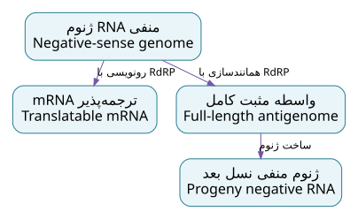
منابع این گام: [R13A2]؛ [R13A8]
۱ — وجود ژن RdRP در RNA منفی چرا نیاز به آنزیم همراه را رفع نمیکند؟
۲ — کدام تمایز برای RNA مثبت داخل سلول آنفلوانزا لازم است؟
۳ — مهار پلیمراز همراه ویریون پیش از ساخت پروتئین تازه بیشتر کدام رخداد را تهدید میکند؟
۱ — گزینه ۲. بدون نخستین mRNA، ژن پلیمراز قابل ترجمه نیست؛ پلیمراز همراه این دور وابستگی را میشکند.
۲ — گزینه ۳. علامت جهت کافی نیست؛ mRNA با واسطه مثبت کامل همانندسازی، از نظر طول، انتهاها و نقش تفاوت دارد.
۳ — گزینه ۱. پلیمراز ورودی نخستین رونوشتها را از ژنوم منفی میسازد؛ مراحل نسل پیشین یا برش ویروس دیگر هدف استنباط مستقیم نیستند.
ژنوم قطعهقطعه (segmented genome) اطلاعات خود را در چند مولکول مستقل حمل میکند. آنفلوانزا A هشت قطعه RNA منفی دارد و روتاویروس یازده قطعه dsRNA؛ این اعداد را به همه اعضای RNA منفی یا همه dsRNAها تعمیم ندهید. قطعات باید در برنامه تکثیر و بستهبندی هماهنگ شوند تا مجموعه کارکردی فراهم شود. وجود قطعات متعدد به معنی یک mRNA یکسان یا توزیع تصادفی و همیشه موفق آنها نیست.
در همآلودگی سازگار، نسل ویروس میتواند ترکیبی از قطعات والدهای متفاوت را به دست آورد؛ این فرایند بازآرایی قطعات (reassortment) است. در نوترکیبی (recombination)، خود یک مولکول میتواند از بخشهای توالی با منشأ متفاوت تشکیل شود. پس مشاهده یک قطعه کامل از والد A و قطعه دیگر از B با شکستن و پیوندزدن درون یک قطعه فرق دارد. تولید نظری ترکیبات، تضمین زندهمانی و کارکرد همه آنها نیست؛ ناسازگاری محصولات، بستهبندی و انتخاب زیستی محدودیت ایجاد میکنند.
در مدل ساده با n قطعه و دو منشأ ممکن برای هر قطعه، تعداد ترکیبهای منشأ ۲ به توان n است؛ دو ترکیب، کاملاً والدگونهاند. این شمارش فقط فضای ترکیب را میدهد و احتمال هر ترکیب را برابر یا تحقق طبیعی همه را ثابت نمیکند. در تحلیل داده، ابتدا تمامیت قطعه و منشأ توالی آن را مشخص کنید. شناسایی دو والد در نمونه مخلوط نیز بدون بررسی نسل، اثبات بازآرایی نیست؛ مخلوط دو ویروس اولیه میتواند همان الگوی جمعی را ایجاد کند.
در مدل فرضی با سه قطعه و دو منشأ ممکن مستقل برای هر قطعه، چند ترکیب منشأ و چند ترکیب غیرکاملاًوالدی داریم؟
با فرض استقلال و سازگاری کامل، ۲^۳=۸ ترکیب داریم؛ با حذف دو ترکیب کاملاًوالدی، ۶ ترکیب مخلوط باقی میماند. این عدد پیشبینی بازده زیستی واقعی نیست.
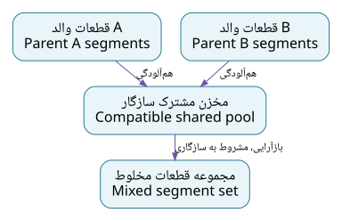
منابع این گام: [R13A8]؛ [R13A10]
۱ — یک قطعه کامل از A و قطعه کامل دیگر از B در نسل، کدام مفهوم را نشان میدهد؟
۲ — در مدل دو منشأ و چهار قطعه مستقل، تعداد ترکیبات منشأ چقدر است؟
۳ — دیدن توالیهای دو والد در یک نمونه مخلوط چه چیزی را ثابت نمیکند؟
۱ — گزینه ۱. انتقال مجموعهای از قطعات کامل با منشأ متفاوت، بازآرایی است؛ نوترکیبی درون مولکول شرط این مشاهده نیست.
۲ — گزینه ۳. هر قطعه دو انتخاب دارد، پس ۲^۴=۱۶؛ این تعداد نظری، برابری احتمال یا زندهمانی همه ترکیبها را ثابت نمیکند.
۳ — گزینه ۲. نمونه میتواند صرفاً مخلوط دو والد باشد؛ برای اثبات بازآرایی باید ترکیب قطعات در نسل مشخص شود.
آنفلوانزا A از نمونههای مهم RNAویروسهایی است که رونویسی و همانندسازی ژنوم RNA خود را در هسته سلول انجام میدهند. مجموعههای vRNP شامل RNA، نوکلئوپروتئین و پلیمراز ویروسی به هسته میروند. هستهایبودن این فرایند آن را DNAویروس نمیکند؛ ماده ژنتیکی ورودی همچنان RNA منفی است. ارتباط با دستگاه رونویسی میزبان، دسترسی به رونوشتهای تازه کلاهکدار را برای آغاز ساخت mRNA ویروسی فراهم میسازد.
در برداشت سرآغاز کلاهکدار (cap-snatching)، زیرواحد PB2 کلاهک RNA میزبان را میشناسد و زیرواحد PA بخش اندونوکلئازی لازم برای بریدن قطعه کوتاه نزدیک سرآغاز را فراهم میکند. PB1 هسته کاتالیزوری پلیمراز وابسته به RNA است و قطعه کلاهکدار بهعنوان آغازگر رونویسی استفاده میشود. حاصل، پیامرسانی با سرآغاز کوتاه مشتق از میزبان و ادامه ویروسی است. این فرایند با جداکردن صرف کلاهک و چسباندن آن به یک RNA ازپیشکاملشده تفاوت دارد.
ساخت واسطه RNA مکمل کامل در همانندسازی، به این آغازگر کلاهکدار وابستگی همانند رونویسی mRNA ندارد. بنابراین نقص PA میتواند با نقص دریافت آغازگر و افت mRNA پیوند داشته باشد، بیآنکه همانندسازی و رونویسی از هر نظر یک فرایند باشند. نقشهای PB1، PB2 و PA را جابهجا نکنید و رفتار آنفلوانزا را به تمام ویروسهای RNA منفی تعمیم ندهید؛ بسیاری از آنها در سیتوپلاسم کار میکنند. در آزمون، قالب، آنزیم ویروسی و منبع آغازگر را سه جزء جدا ثبت کنید.
در یک مدل، اتصال کلاهک حفظ شده ولی برش RNA میزبان مختل است. کدام کارکرد زیرواحدی مطرحتر است؟
نقص فعالیت اندونوکلئازی PA با داده سازگارتر است؛ PB2 با اتصال کلاهک مرتبط است و PB1 هسته پلیمراز را فراهم میکند. این نتیجه باید از آسیب کلی مجموعه آنزیمی تفکیک شود.
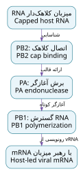
منابع این گام: [R13A2]؛ [R13A8]
۱ — کدام تطبیق در آنفلوانزا A درست است؟
۲ — چرا نخستین چند نوکلئوتید mRNA ویروسی میتواند منشأ میزبانی داشته باشد؟
۳ — کدام گزاره درباره محل تکثیر RNA منفی ناموجه است؟
۱ — گزینه ۲. PB2 کلاهک را میگیرد، PA میبُرد و PB1 کاتالیز سنتز RNA را انجام میدهد؛ این نقشها قابل جابهجایی نیستند.
۲ — گزینه ۱. پلیمراز ویروسی سرآغاز کوتاه کلاهکدار را برای آغاز رونویسی استفاده میکند؛ ادامه RNA از قالب ویروسی ساخته میشود.
۳ — گزینه ۳. آنفلوانزا استثنای مهمی در قیاس با بسیاری از RNAویروسهای سیتوپلاسمی است؛ آن را قانون همه RNA منفیها نکنید.
ژنوم dsRNA پیامرسان آماده ترجمه نیست. در روتاویروس و خویشاوندان آن در راسته Reovirales، ورود با برداشتهشدن بعضی لایههای خارجی همراه است، اما مجموعه درونی ذره برای رونویسی فعال باقی میماند. آنزیمهای ساختمانی همراه ذره از قالب ژنومی، mRNAهای مثبت میسازند و رونوشتها از مجاری ذره به سیتوپلاسم میآیند. پس پوششبرداری کامل و آزادکردن همه dsRNA به محیط، پیششرط رونویسی نیست؛ حفظ ساختار درونی بخشی از راهبرد کارکردی است.
RNAهای مثبت تولیدشده هم میتوانند ترجمه شوند و هم در تشکیل نسل ژنومی مشارکت کنند. مجموعه مناسب RNAهای مثبت وارد ذرات نسل جدید میشود و با ساخت رشته منفی درون مجموعه، ژنوم dsRNA بازسازی میشود. در روتاویروس یازده قطعه ژنومی وجود دارد؛ تعداد قطعات در همه اعضای راسته یکسان نیست. ویروپلاسم (viroplasm) ناحیه سازمانیافته سیتوپلاسمی برای سنتز RNA، همانندسازی و مونتاژ است و با هسته سلول یا هستهک هستهای اشتباه نمیشود.
در منابع قدیمی، نام خانواده Reoviridae بهصورت گسترده به کار میرود. در گزارشهای جدید ICTV، Sedoreoviridae و Spinareoviridae زیر راسته Reovirales متمایزند و روتاویروس در Sedoreoviridae قرار دارد. این تغییر نامگذاری نباید با تغییر ماهیت dsRNA اشتباه شود. در پاسخ آزمون قدیمی، اصطلاح تاریخی را توضیح دهید و سازوکار را بر پایه ژنوم و چرخه تحلیل کنید. نام «core» در این بحث یعنی مجموعه درونی ذره، نه نوکلئولوس سلول. محافظت ژنوم نیز مساوی پنهانماندن کامل همه RNAها از دفاع میزبان نیست.
پس از حذف لایه خارجی ذره، مجموعه درونی هنوز mRNA میسازد. آیا ذره باید کاملاً تجزیه شود تا رونویسی آغاز شود؟
خیر؛ در این راهبرد، مجموعه درونی یک دستگاه رونویسی فعال است. آزادشدن رونوشت از منفذهای آن با نگهداشتن ژنوم dsRNA در مجموعه سازگار است.
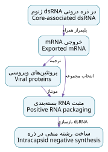
منابع این گام: [R13A10]
۱ — حفظ فعالیت رونویسی در مجموعه درونی dsRNA چه نکتهای را نشان میدهد؟
۲ — نام جدید خانواده روتاویروس در گزارش خواندهشده ICTV چیست؟
۳ — در این راهبرد، RNA مثبت تولیدشده چه دو نقش عمدهای میتواند داشته باشد؟
۱ — گزینه ۳. کاهش لایههای خارجی میتواند ورود را فعال کند، در حالی که مجموعه درونی با ژنوم و پلیمراز برای رونویسی حفظ میشود.
۲ — گزینه ۱. گزارش ICTV روتاویروس را در Sedoreoviridae از راسته Reovirales قرار میدهد؛ نام گسترده تاریخی Reoviridae باید با تاریخ توضیح داده شود.
۳ — گزینه ۲. رونوشت مثبت میتواند mRNA باشد و پس از انتخاب و بستهبندی، قالب ساخت رشته منفی برای بازسازی dsRNA شود.
• ژنوم RNA منفی و dsRNA برای ساخت نخستین mRNA به پلیمراز ویروسی ورودی نیاز دارند.
• قطعهقطعهبودن، تغییر ترکیب قطعات را ممکن میکند؛ با نوترکیبی درون یک رشته تفاوت دارد.
• آنفلوانزا A برای رونویسی و همانندسازی RNA از هسته استفاده میکند و نمونهای برای همه RNA منفیها نیست.
• در روتاویروس، مجموعه درونی ذره فعالانه mRNA تولید میکند و ژنوم dsRNA را محافظت میکند.
| ویژگی | آنفلوانزا A | روتاویروس |
|---|---|---|
| ژنوم | هشت قطعه RNA تکرشتهای منفی | یازده قطعه RNA دورشتهای |
| جایگاه اصلی سنتز RNA | هسته | سیتوپلاسم و ویروپلاسم |
| منبع نخستین mRNA | پلیمراز همراه vRNP | آنزیمهای مجموعه درونی ذره |
| نکته کلاهک | برداشتن سرآغاز کلاهکدار میزبان | ساخت mRNA کلاهکدار در دستگاه ذره |
ژنوم ویریون رتروویروس از RNA با قطبیت مثبت تشکیل شده است، اما مثبتبودن بهتنهایی راهبرد همانندسازی را تعیین نمیکند. در الگوی HIV-1، تولید نسل بعد به تبدیل RNA به DNA و تشکیل پروویروس وابسته است. ویریون دو نسخه RNA ژنومی حمل میکند؛ این حالت را شبهدیپلوئیدی مینامند. دو نسخه الزاماً به معنی دو ژنوم مستقل و کامل در یک کروموزوم نیست و هنگام ساخت DNA امکان جابهجایی الگو میان آنها فراهم میشود.
رونویسی معکوس را آنزیم RT انجام میدهد. جایگاه پلیمرازی این آنزیم از RNA یا DNA بهعنوان الگو استفاده میکند، ولی محصول هر دو فعالیت DNA است. فعالیت RNase H، RNA موجود در دورگه RNA–DNA را میبُرد و به پردازش الگو و آغازگرها کمک میکند. در HIV-1، یک tRNA سلولی آغازگر ساخت رشته DNA منفی است؛ بخش پلیپورینی RNA نیز آغاز رشته مثبت را فراهم میکند. انتقالهای رشته طی این فرایند سبب میشوند محصول DNA خطی در دو انتها تکرار بلند انتهایی یا LTR داشته باشد.
برای استنباط آزمایشی، ورود ویروس، ساخت DNA و ادغام را سه رویداد متمایز بدانید. مشاهده DNA ویروسی بهتنهایی ادغام را ثابت نمیکند؛ DNA خطی یا حلقوی ادغامنشده هم ممکن است وجود داشته باشد. همچنین فعالیت RT در واکنش تشخیصی، الزاماً بیانگر وجود آنزیم فعال ویروس در نمونه بیمار نیست؛ آنزیم افزودهشده به آزمون میتواند RNA باقیمانده را به cDNA تبدیل کند.
در یک مدل فرضی، RNA ورودی طبیعی است ولی DNA کامل ویروسی ساخته نمیشود. آیا نقص ادغام، نخستین توضیح است؟
خیر. باید ابتدا ساخت DNA، آغازگری و فعالیتهای پلیمرازی و RNase H بررسی شوند؛ ادغام به DNA مناسب نیاز دارد و در ترتیب علّی پاییندست است.
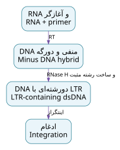
منابع این گام: [R13B1]؛ [R13B3]
۱ — محصول مستقیم فعالیت پلیمرازی RT با الگوی DNA چیست؟
۲ — مهار اختصاصی RNase H کدام فرایند را مستقیمتر مختل میکند؟
۳ — وجود دو نسخه RNA در ویریون HIV کدام امکان را فراهم میکند؟
۱ — گزینه ۲. RT میتواند DNA وابسته به DNA بسازد؛ نام «رونویسی معکوس» به معنی انحصار الگوی RNA نیست.
۲ — گزینه ۱. RNase H رشته RNA دورگه را پردازش میکند؛ سه فرایند دیگر فعالیت مستقیم این جایگاه نیستند.
۳ — گزینه ۳. دو RNA امکان تعویض الگو و نوترکیبی را میدهند؛ نیاز چرخه به DNA و سازوکار ادغام حذف نمیشود.
DNA دورشتهای رتروویروسی، سوبسترای مجموعه پیشادغام است. اینتگراز انتهای DNA ویروسی را پردازش و پیوند آن را با DNA کروموزومی برقرار میکند؛ تکمیل ترمیم محل اتصال به عوامل سلولی نیز وابسته است. پس از این مرحله، توالی ویروسی بهصورت پروویروس همراه کروموزوم تکثیر میشود. پروویروس یک مرحله ژنومی است، نه نام ذره ویروسی، و وجود آن لزوماً تولید فعال ویریون را نشان نمیدهد.
رونویسی از پروویروس با دستگاه سلولی و تنظیمات وابسته به وضعیت سلول انجام میشود. RNA حاصل میتواند پس از پردازش نقش پیامرسان داشته باشد یا بهصورت RNA ژنومی بستهبندی شود. یک مولکول از نظر توالی میتواند ظرفیت هر دو نقش را داشته باشد، ولی سرنوشت هر نسخه به برهمکنش با پروتئینها، پردازش و محل حضور وابسته است. بنابراین «RNA مثبت» را نباید معادل «ترجمه همه نسخهها» گرفت. بلوغ پروتئولیتیک نیز مرحلهای جدا از همانندسازی ژنوم است و میتواند بر عفونتزایی ذره خروجی اثر بگذارد.
پایداری مخزن رتروویروسی از تمایز میان حفظ ژنوم و تولید ویروس ناشی میشود. اگر بیان یک پروویروس خاموش باشد، مهار RT بهخودیخود DNA ادغامشده را از کروموزوم حذف نمیکند. در تحلیل سؤال، نوع سنجش اهمیت دارد: PCR داخلی فقط بخشی از توالی ویروس را میبیند، در حالی که شاهد اتصال ویروس–میزبان یا روش اختصاصی ادغام برای ادعای ادغام مناسبتر است. حتی اثبات ادغام هم سالمبودن تمام ژنوم یا توان تولید نسل عفونتزا را تضمین نمیکند.
سلول حاوی پروویروس با وجود مهار کامل ساخت DNA تازه، پس از مدتی RNA ویروسی تولید میکند. آیا این مشاهده الزاماً مقاومت RT را ثابت میکند؟
خیر. رونویسی از پروویروس پیشین به ساخت DNA تازه توسط RT نیاز ندارد. برای ادعای مقاومت، باید تکثیر تازه و مرحله هدف دارو مستقل سنجیده شوند.
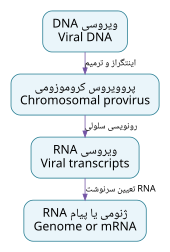
منابع این گام: [R13B1]؛ [R13B3]
۱ — کدام شاهد اختصاصیتر از PCR داخلی برای ادغام است؟
۲ — مهار RT در سلول دارای پروویروس الزاماً چه نمیکند؟
۳ — اثبات ادغام کدام نتیجه را بهتنهایی تضمین نمیکند؟
۱ — گزینه ۳. PCR داخلی DNA ادغامنشده را هم میبیند؛ اتصال ویروس–میزبان شواهد مستقیمتری برای ادغام فراهم میکند.
۲ — گزینه ۲. مهار آنزیم DNA موجود در کروموزوم را نمیبُرد؛ اثر بر مرحله تازه را با پاکشدن مخزن یکی نگیرید.
۳ — گزینه ۴. پروویروس میتواند ناقص باشد؛ شاهد یک اتصال، کاملبودن و توان مولدبودن کل ژنوم را ثابت نمیکند.
HBV نمونهای است که نشان میدهد DNAبودن ژنوم، نیاز به رونویسی معکوس را نفی نمیکند. ژنوم ویریون DNA حلقویِ شل یا rcDNA است که رشته مثبت آن معمولاً کامل نیست. پس از ورود، این DNA در هسته پردازش و به DNA حلقوی بسته کووالانسی یا cccDNA تبدیل میشود. این مولکول عمدتاً خارج از کروموزوم قرار دارد و الگوی پایدار رونویسی بهوسیله RNA پلیمراز II سلولی است؛ آن را با پروویروس رتروویروسی اشتباه نگیرید.
یکی از رونویسهها، RNA پیشژنومی یا pgRNA است. این RNA هم برای ساخت برخی پروتئینها به کار میرود و هم همراه پلیمراز ویروسی در نوکلئوکپسید بستهبندی میشود. سپس پلیمراز آن را به DNA منفی تبدیل میکند و با پردازش RNA و ساخت DNA مثبت، ژنوم DNA نسل بعد شکل میگیرد. برخلاف الگوی HIV-1، بخش عمده رونویسی معکوس HBV پیش از خروج ذره، در سلول تولیدکننده و درون نوکلئوکپسید رخ میدهد. آغازگری رشته منفی پروتئینی است، نه با tRNA به شیوه HIV.
ادغام DNA هپادناویروسی ممکن است در عفونت رخ دهد، اما جزء ضروری چرخه معمول تولید ژنوم نیست. در تفسیر یک داده باید میان rcDNA ورودی، cccDNA، DNA ادغامشده و RNA پیشژنومی تمایز گذاشت. سنجش کلی DNA نمیتواند همه این شکلها را از هم جدا کند. از سوی دیگر کاهش DNA ذرات خروجی، بهتنهایی اثبات نابودی cccDNA نیست. همین جداییِ مرحله تولید DNA از نگهداری الگوی رونویسی، مبنای فهم محدودیت بسیاری از مداخلات مرحلهای است.
پس از مهار رونویسی معکوس در مدل HBV، DNA خروجی کم ولی رونویسههای حاصل از cccDNA باقی ماندهاند. این یافته چه میگوید؟
مهار ساخت DNA تازه با باقیماندن الگوی هستهای سازگار است؛ از این داده نمیتوان پاکشدن مخزن یا شکست کامل مهار پلیمراز را نتیجه گرفت.
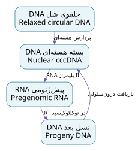
منابع این گام: [R13B4]
۱ — الگوی عمده رونویسی RNAهای HBV کدام است؟
۲ — کدام تفاوت HBV و HIV-1 درست است؟
۳ — کاهش DNA خارج سلولی HBV چه چیزی را ثابت نمیکند؟
۱ — گزینه ۱. RNA پلیمراز II از cccDNA رونویسی میکند؛ ادغام برای چرخه معمول HBV شرط لازم نیست.
۲ — گزینه ۳. HBV با وجود ژنوم DNA از RT در نوکلئوکپسید سلول تولیدکننده استفاده میکند؛ HIV-1 الگوی معمولاً متفاوت دارد.
۳ — گزینه ۲. DNA خروجی و cccDNA دو مخزن متفاوتاند؛ کاهش اولی شاهد کافی پاکشدن دومی نیست.
شناخت چرخه زمانی سودمند است که بتوانید اثر یک اختلال را به مرحلهای مشخص نسبت دهید. مهار ورود، تعداد سلولهایی را که آغاز عفونت موفق دارند کم میکند؛ مهار رونویسی معکوس بر تولید DNA تازه اثر میگذارد؛ مهار ادغام، ورود DNA مناسب به کروموزوم را محدود میکند؛ و مهار بلوغ پروتئینی میتواند ذراتی ایجاد کند که با وجود داشتن ژنوم، عفونتزایی کمتری دارند. این دستهبندی مفهومی است و جایگزین اطلاعات اختصاصی هر دارو یا توصیه درمانی نیست.
برای تحلیل یک آزمایش، زمان اندازهگیری و نوع خروجی را کنار هم قرار دهید. اگر فقط تعداد نسخه ژنوم اندازهگیری شده باشد، افت عفونتزایی ممکن است پنهان بماند. اگر تنها آنتیژن سنجیده شود، بقای ذرات یا پروتئینهای پیشین میتواند با توقف چرخه اشتباه شود. مقایسه یک شاخص بالادست با شاخص پاییندست، همراه کنترل سلامت سلول، کمک میکند مهار اختصاصی از سمیت عمومی جدا شود. تغییر نسبت ذره به واحد عفونتزا نیز اطلاعاتی متفاوت از شمارش ذره بهتنهایی میدهد.
تعمیم اثر میان رتروویروس و هپادناویروس نیازمند احتیاط است. وجود فعالیت RT در هر دو، یکسانبودن ساختمان جایگاه هدف، فعالسازی دارو یا نقش مرحله در مخزن ژنومی را تضمین نمیکند. همینطور کاهش RNA یا DNA در کوتاهمدت برابر با حذف عفونت پایدار نیست. در پاسخ آزمونی، ابتدا آنچه مستقیماً اندازهگیری شده را بنویسید، سپس نتیجه محدود به آن داده را بیان کنید و در پایان سنجشی را پیشنهاد دهید که میان توضیحهای رقیب فرق بگذارد؛ نام آنزیم بهتنهایی جای منطق شاهد را نمیگیرد.
تعداد ذرات دو نمونه برابر است، ولی PFU نمونه دوم ده برابر کمتر است. آیا میتوان تنها از شمار ذره، اثر مهارکننده بلوغ را رد کرد؟
خیر. یک مهارکننده بلوغ ممکن است شمار ذرات را حفظ و عفونتزایی هر ذره را کم کند. برای انتساب علّی، شاهد پردازش پروتئین و کنترل سمیت نیز لازم است.
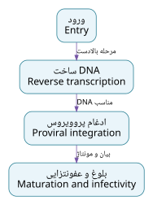
منابع این گام: [R13B3]؛ [R13B4]؛ [R13B2]
۱ — کاهش PFU با شمار ذره ثابت با کدام حالت سازگارتر است؟
۲ — برای رد سمیت عمومی در افت تولید ویروس چه لازم است؟
۳ — اشتراک RT در HBV و HIV چه را تضمین نمیکند؟
۱ — گزینه ۲. شاخصهای فیزیکی و عملکردی متفاوتاند؛ نقص بلوغ یا آسیب عملکردی میتواند نسبت PFU به ذره را کم کند.
۲ — گزینه ۱. کاهش خروجی میتواند ناشی از مرگ یا اختلال عمومی سلول باشد؛ کنترل سلامت سلول به تفسیر اختصاصیت کمک میکند.
۳ — گزینه ۳. شباهت نوع واکنش با یکسانی ساختمان هدف و حساسیت دارویی برابر نیست؛ تعمیم به شاهد اختصاصی نیاز دارد.
• RT میتواند با الگوی RNA یا DNA، رشته DNA بسازد؛ فعالیت RNase H روی RNA دورگه RNA–DNA اثر دارد.
• پروویروس رتروویروسی با cccDNA هپادناویروس یکسان نیست.
• اثر مهار یک مرحله را باید از حذف مخزن پایدار جدا کرد.
| ویژگی | رتروویروس، الگوی HIV-1 | هپادناویروس، الگوی HBV |
|---|---|---|
| ژنوم ویریون | دو نسخه RNA مثبت | DNA حلقوی با دورشتهایشدن ناقص |
| زمان عمده رونویسی معکوس | پس از ورود به سلول تازه | در نوکلئوکپسید سلول تولیدکننده |
| الگوی پایدار رونویسی | DNA ادغامشده، پروویروس | cccDNA هستهای، عمدتاً خارج کروموزوم |
| آغاز رشته DNA منفی | آغازگر tRNA سلولی | آغازگری پروتئینی با پلیمراز ویروس |
| ادغام در چرخه معمول | مرحله ضروری چرخه مولد | برای چرخه معمول ضروری نیست |
در چرخه لیتیکِ فاژ، شناسایی گیرنده و ورود ژنوم، بیان ژنهای اولیه، تکثیر ژنوم، ساخت اجزای ساختاری، بستهبندی و آزادسازی به یکدیگر پیوند دارند. زمانبندی بیان با نیاز چرخه سازگار است: پیش از تولید تعداد زیادی کپسید، باید دستگاه تکثیر و منابع لازم فراهم شده باشد. با این حال، ترتیب دقیق و آنزیمهای مورد استفاده میان فاژها متفاوت است؛ برای نمونه، تخریب گسترده کروموزوم میزبان ویژگی همه فاژهای لیتیک نیست.
منحنی رشد تکمرحلهای، خروجی جمعیت نسبتاً همزمان را نمایش میدهد. دوره اختفا یا eclipse زمانی است که ذره کاملِ قابل سنجش هنوز در سلول بازیابی نمیشود؛ دوره نهفتگیِ منحنی تا آغاز افزایش ذرات عفونتزای خارج سلولی امتداد دارد. این دو فاصله زمانی را با نهفتگی پایدار ژنوم ویروسی در فصل تعامل میزبان یکسان ندانید. پس از تکمیل مونتاژ، ممکن است ذرات درون سلول موجود باشند ولی هنوز در محیط آزاد نشده باشند.
اندازه انفجار، میانگین نسل عفونتزای تولیدشده به ازای هر سلول مولد است، نه الزاماً شمار کل ذرات فیزیکی. اگر بخشی از سلولها عفونت مولد نداشته باشند، تقسیم خروجی بر تمام سلولهای اولیه، بازده واقعی سلول مولد را کمتر برآورد میکند. مقدار شمارششده به شرایط سنجش نیز وابسته است. در حل مسئله، افت یا حذف فاژ آزاد اولیه، تعداد سلولهای واقعاً مولد و اینکه خروجی PFU است یا ذره، باید در فرضها روشن باشد؛ شمار ژنوم بهتنهایی اندازه انفجار عملکردی را مشخص نمیکند.
در داده فرضی، ۲×۱۰⁶ سلول مولد پس از یک چرخه، افزایش خالص ۱×۱۰⁸ PFU ایجاد کردهاند. میانگین اندازه انفجار چقدر است؟
با فرض یک چرخه، کسرشدن فاژ اولیه و شمارش صحیح سلولهای مولد: ۱۰⁸÷(۲×۱۰⁶)=۵۰ PFU به ازای هر سلول مولد؛ این عدد شمار ذرات فیزیکی نیست.
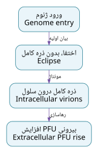
منابع این گام: [R13B1]؛ [R13B2]؛ [R13B10]
۱ — وجود PFU درون سلول پیش از افزایش PFU محیطی کدام را نشان میدهد؟
۲ — خروجی خالص ۶۰۰ PFU از ۲۰ سلول مولد چه میانگینی دارد؟
۳ — تقسیم خروجی بر همه سلولها، وقتی فقط نصف آنها مولدند، چه اثری دارد؟
۱ — گزینه ۲. ذره کامل شکل گرفته، اما رهاسازی هنوز رخ نداده است؛ این حالت با مراحل زمانی چرخه لیتیک سازگار است.
۲ — گزینه ۲. ۶۰۰÷۲۰=۳۰ PFU/سلول مولد است؛ واحد فیزیکی ذره را نمیتوان جای PFU گذاشت.
۳ — گزینه ۳. مخرج دو برابر شمار سلولهای مولد است؛ بازده سرانه مولد به نصف برآورد میشود.
فاژ معتدل میتواند بهجای تولید فوری نسل جدید، ژنوم خود را در جمعیت میزبان حفظ کند. در لامبدا، ادغام اختصاصی در کروموزوم باکتری، پروفاژ ایجاد میکند و ژنوم فاژ همراه DNA میزبان به سلولهای دختر میرسد. باکتری حامل این حالت را لیزوژن مینامند. حفظ پایدار ژنوم در همه فاژهای معتدل الزاماً از طریق ادغام کروموزومی نیست؛ برخی سامانهها الگوهای خارجکروموزومی دارند. بنابراین تعریف لیزوژنی را به یک آرایش فیزیکی واحد محدود نکنید.
در حالت لیزوژنیک، مهار برنامه لیتیک با خاموشی مطلق تمام ژنهای فاژ برابر نیست. بیان ژنهای تنظیمی برای پایداری حالت لازم است و بعضی ژنهای پروفاژ ممکن است فنوتیپ میزبان را تغییر دهند. همین نکته توضیح میدهد چرا وجود پروفاژ میتواند بدون مشاهده تولید فراوان ذره، پیامد زیستی داشته باشد. تفاوت با انتقال افقی نیز روشن است: لیزوژنی یک وضعیت نگهداری ژنوم است، اما ترانسداکشن فرایند انتقال DNA باکتریایی میان سلولهاست.
القا، گذار از حفظ پروفاژ به برنامه مولد است. در لامبدا، پاسخ آسیب DNA میتواند از مسیر RecA فعال، خودبرش مهارگر CI را تسهیل و بیان ژنهای لیتیک را آزاد کند. رابطه میان تنش، زندهمانی میزبان و تولید فاژ ساده و خطی نیست؛ آسیب شدید ممکن است ظرفیت تولید را هم از بین ببرد. برای اثبات القا، کاهش رشد باکتری بهتنهایی کافی نیست. افزایش نسل فاژ، تغییر بیان برنامه لیتیک یا شواهد ژنومی متناسب باید همراه کنترلهای مناسب بررسی شوند؛ مرگ ناشی از عامل تنش را با لیز ناشی از فاژ خلط نکنید.
کشت لیزوژن پس از تنش رشد کمتری دارد، ولی PFU اندازهگیری نشده است. آیا القای پروفاژ ثابت شده است؟
خیر. تنش ممکن است مستقل از فاژ به سلول آسیب بزند. سنجش نسل فاژ یا نشانگر برنامه لیتیک همراه کنترل غیرلیزوژن، میان این توضیحها فرق میگذارد.
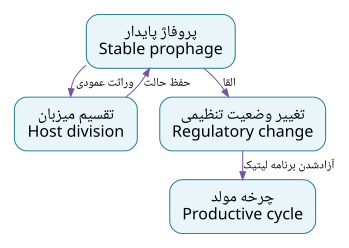
منابع این گام: [R13B1]؛ [R13B5]
۱ — کدام گزاره درباره لیزوژنی دقیقتر است؟
۲ — در الگوی لامبدا، RecA فعال چگونه به القا کمک میکند؟
۳ — افت رشد پس از تنش بدون شاهد فاژی چه وضعیتی دارد؟
۱ — گزینه ۳. پایداری ژنوم اصل مفهوم است؛ ژنهای تنظیمی یا مؤثر بر فنوتیپ میتوانند بیان شوند.
۲ — گزینه ۲. RecA فعال، خودبرش مهارگر را تسهیل میکند؛ CI و Cro دو پروتئین متفاوتاند، نه دو شکل تبدیلشونده یک مولکول.
۳ — گزینه ۳. افت رشد میتواند اثر مستقیم تنش باشد؛ برای نسبتدادن به القا، خروجی یا نشانگر اختصاصی چرخه فاژ لازم است.
سوئیچ لامبدا نمونهای از تصمیم پایدار حاصل از شبکه تنظیمی است. در لیزوژن، مهارگر CI به جایگاههای اپراتوری متصل میشود و رونویسی از پروموترهای اصلی برنامه لیتیک، یعنی pL و pR، را محدود میکند. در محدوده مناسب، CI رونویسی خود از pRM را نیز پشتیبانی میکند. برهمکنش مشارکتی پروتئینها و حلقهزدن DNA به پایداری حالت کمک میکند؛ بنابراین اثر یک جایگاه فقط از حضور یا غیاب یک پروتئین فهمیده نمیشود.
Cro در مسیر لیتیک نقش مهمی دارد و در غلظت مناسب با مهار pRM، بازسازی CI را محدود میکند. با این حال تصویر «CI همیشه روشن و Cro همیشه خاموشکننده» بیشازحد ساده است. اثر به غلظت، میل اتصال به اپراتورها و حضور CI وابسته است؛ پژوهش مکانیزمی نشان داده Cro کم در حضور CI کم میتواند به رفع مهار پروموترهای لیتیک کمک کند. در مرحله استقرار لیزوژنی، عوامل دیگری مانند CII نیز در شبکه تصمیم دخیلاند؛ نگهداری حالت و ایجاد اولیه آن را یک رویداد واحد ندانید.
برای حل سؤالهای ژنتیکی، باید تغییر در توالی cis اپراتور را از تغییر در پروتئین trans تنظیمکننده جدا کرد. اگر جایگاه اتصال آسیب دیده باشد، افزودن پروتئین طبیعی الزاماً آن اتصال را بازنمیگرداند. همچنین یک گزارشگر منفرد از pRM، تمام سرنوشت فاژ را تعیین نمیکند؛ بیان pL و pR، زمان تغییر و شمار سلولهای واردشده به هر مسیر اهمیت دارد. یک شبکه دوپایدار میتواند در میانگین جمعیت، سیگنال میانی بدهد، در حالی که تکسلولها عمدتاً در دو حالت جدا باشند.
میانگین گزارشگر در جمعیت، نصف بیشینه است. آیا همه سلولها الزاماً بیان متوسط دارند؟
خیر. نیمی از سلولها میتوانند در حالت پربیان و نیمی در حالت کمبیان باشند. توزیع تکسلولی برای تمایز این حالت از بیان یکنواخت لازم است.
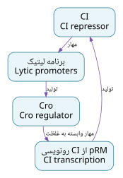
منابع این گام: [R13B5]
۱ — کار اصلی CI در نگهداری لیزوژنی کدام است؟
۲ — افزودن CI طبیعی کدام نقص را الزاماً جبران نمیکند؟
۳ — سیگنال جمعیتی متوسط در یک سوئیچ دوپایدار چه را ثابت نمیکند؟
۱ — گزینه ۱. CI بیان برنامه لیتیک را محدود میکند؛ این نقش تنظیمی را با آنزیم تکثیر یا پروتئین ساختاری اشتباه نگیرید.
۲ — گزینه ۳. پروتئین در trans عمل میکند، اما توالی اپراتور آسیبدیده روی همان DNA باید مناسب باشد؛ افزودن پروتئین توالی را ترمیم نمیکند.
۳ — گزینه ۲. میانگین میتواند حاصل مخلوط حالت روشن و خاموش باشد؛ شدت متوسط جمعیت با یکنواختی تکسلولی برابر نیست.
بستهبندی ژنوم، انتخاب یک مولکول برای ورود به کپسید است و با همانندسازی آن یکسان نیست. ویژگی توالی، طول قابل پذیرش و سازوکار بستهبندی تعیین میکنند چه DNA وارد ذره شود. در ترانسداکشن عمومی، بعضی ذرات قطعهای از DNA باکتری را حمل میکنند. «عمومی» به معنی امکان انتقال نواحی گوناگون است، نه برابری احتمال همه ژنها در هر فاژ و هر وضعیت. انتقال DNA نیز الزاماً به وراثت پایدار آن در گیرنده نمیانجامد؛ نوترکیبی یا نگهداری مناسب لازم است.
در ترانسداکشن اختصاصی، خروج نادقیق پروفاژ میتواند ژنهای باکتریایی مجاور جایگاه ادغام را همراه DNA فاژ بردارد. نزدیکی به جایگاه، دامنه ژنهای قابل انتقال را محدود میکند. این منطق با خطای بستهبندی قطعات گوناگون در ترانسداکشن عمومی متفاوت است. در تحلیل داده همانتقالی، ظرفیت بستهبندی و فاصله ژنها اهمیت دارند؛ نبود همانتقالی بهتنهایی فاصله دقیق را نمیدهد و باید سامانه فاژ و انتخاب گیرنده را شناخت.
تبدیل لیزوژنیک زمانی است که ژنهای خود پروفاژ، صفت میزبان را تغییر دهند؛ برای مثال یک محصول ژنی فاژی میتواند به فنوتیپ جدید کمک کند. این رویداد را نباید صرفاً به انتقال ژن باکتریایی نسبت داد. پس از ورود یک فاژ، مشاهده صفت تازه چند توضیح دارد: بیان ژن فاژ، انتقال DNA باکتریایی یا جهش مستقل. شناسایی جایگاه ژن، حذف اختصاصی یا مقایسه سویههای همزمینه به تعیین منشأ صفت کمک میکند. این تمایز، اتصال مفهومی جلد حاضر با گامهای انتقال افقی در جلد ۱۲ است.
صفت تازه با حضور پروفاژ دیده میشود و ژن مسئول روی ژنوم فاژ قرار دارد. آیا این داده نمونه مستقیم ترانسداکشن یک ژن باکتریایی است؟
خیر. این آرایش با تبدیل لیزوژنیک سازگار است. ترانسداکشن بر جابهجایی DNA باکتریایی با واسطه فاژ دلالت دارد؛ منشأ ژن را باید جدا تعیین کرد.
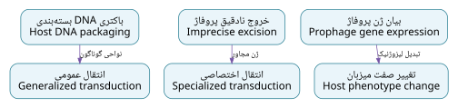
منابع این گام: [R13B1]
۱ — انتقال ترجیحی ژن مجاور جایگاه ادغام با کدام سازوکار سازگارتر است؟
۲ — کدام یافته تبدیل لیزوژنیک را تقویت میکند؟
۳ — ورود DNA باکتریایی توسط فاژ چه را تضمین نمیکند؟
۱ — گزینه ۲. خروج نادقیق پروفاژ DNA مجاور را برمیدارد؛ ترانسداکشن عمومی به یک جایگاه ادغام خاص محدود نیست.
۲ — گزینه ۲. منشأ فاژی ژن و ارتباط علّی آن با فنوتیپ، تبدیل لیزوژنیک را از انتقال ژن باکتریایی متمایز میکند.
۳ — گزینه ۳. DNA واردشده ممکن است تخریب شود یا نگهداری نشود؛ انتقال و تثبیت ژنتیکی دو مرحله متفاوتاند.
• دوره نهفتگی در منحنی رشد تکمرحلهای با نهفتگی ژنومی یک اصطلاح هممعنا نیست.
• لیزوژنی، حفظ ژنوم فاژ است و الزاماً خاموشی همه ژنهای آن نیست.
• مدل CI–Cro رفتار وابسته به غلظت و زمینه تنظیمی دارد.
• ترانسداکشن، انتقال DNA باکتریایی است؛ تبدیل لیزوژنیک، اثر ژنهای پروفاژ بر فنوتیپ میزبان است.
| پدیده | مبنای ژنتیکی | استنباط مجاز |
|---|---|---|
| لیزوژنی | حفظ ژنوم فاژ در میزبان | وجود ژنوم پایدار؛ تولید ذره الزاماً فعال نیست |
| تبدیل لیزوژنیک | بیان ژن پروفاژ | تغییر صفت میزبان وابسته به فاژ |
| ترانسداکشن عمومی | بستهبندی DNA باکتری در ذره | انتقال نواحی گوناگون با محدودیت سامانه |
| ترانسداکشن اختصاصی | خروج نادقیق پروفاژ | انتقال ژنهای مجاور جایگاه ادغام |
| رشد لیتیک | بیان و تولید ذره و معمولاً لیز | افزایش واحد عفونتزا پس از تکمیل چرخه |
ایمنی ذاتی برای آغاز دفاع، به شناسایی الگوهای مولکولی و پیامرسانی نیاز دارد. در سیتوزول، گیرندههای خانواده RLR از جمله RIG-I و MDA5 ساختارهای RNA را تشخیص میدهند؛ تفاوت طول، انتهای RNA و آرایش دورشتهای بر شناسایی اثر دارد. RIG-I و MDA5 از میانجی MAVS برای رساندن پیام به مسیرهای فعالکننده عوامل رونویسی استفاده میکنند. بنابراین صرف وجود RNA خارجی، شدت ثابت یا یکسانی از پاسخ را تضمین نمیکند.
در مسیر DNA، cGAS با شناسایی DNA مناسب، پیامرسان حلقوی cGAMP میسازد که STING را فعال میکند. مسیرهای پاییندست در نهایت به بیان اینترفرون و عوامل دفاعی کمک میکنند. تقسیم آموزشی «RNA به RIG-I و DNA به cGAS» برای شروع مفید است، ولی انحصار کامل نیست: ویروس DNA میتواند RNAهای قابل شناسایی ایجاد کند و عفونت RNA نیز ممکن است با جابهجایی DNA سلولی، مسیر cGAS را فعال کند. جایگاه و زمینه مولکول مهم است، نه فقط نام ژنوم.
اینترفرون نوع یک پس از ترشح به گیرنده IFNAR روی همان سلول یا سلولهای مجاور متصل میشود و بیان ژنهای تحریکشونده با اینترفرون را بالا میبرد. تولید پیام و توان پاسخ به پیام دو مرحله جدا هستند. به همین دلیل، کمشدن ژنهای ضدویروسی ممکن است از نقص حسگری، اختلال ترشح یا نقص پیامرسانی گیرنده ناشی شود. برای حل سؤال، نقطه اختلال را با پاسخ به پیام بالادست و پاییندست مقایسه کنید؛ مشاهده یک ژن انتهایی بهتنهایی، محل شکست کل شبکه را تعیین نمیکند.
سلولی در پاسخ به RNA ویروسی اینترفرون کمی تولید میکند، اما با اینترفرون افزودهشده ژنهای دفاعی را بیان میکند. اختلال محتملتر در کدام لایه است؟
لایه بالادست تولید اینترفرون محتملتر است؛ پاسخ گیرنده و بخشی از مسیر پاییندست کار میکنند. تعیین حسگر یا پروتئین دقیق هنوز شاهد اختصاصی میخواهد.
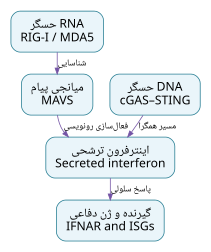
منابع این گام: [R13B6]
۱ — میانجی اصلی پاییندست RIG-I و MDA5 کدام است؟
۲ — محصول پیامرسان فعالیت cGAS چیست؟
۳ — پاسخ طبیعی به اینترفرون افزودهشده همراه تولید کم آن، بیشتر کدام را مطرح میکند؟
۱ — گزینه ۲. MAVS پیام RLRها را به مسیرهای القای دفاع منتقل میکند؛ اینتگراز و کپسید جزء این مسیر حسگری نیستند.
۲ — گزینه ۱. cGAS پیامرسان حلقوی cGAMP میسازد که STING را فعال میکند؛ محصول آن DNA تازه یا ذره ویروسی نیست.
۳ — گزینه ۲. عملکرد پاسخ به پیام حفظ شده است؛ نقص حسگری یا القای تولید محتملتر از خرابی کامل گیرنده است.
فرار ایمنی یک سازوکار واحد نیست. ویروسها میتوانند دسترسی حسگر به اسیدنوکلئیک را کاهش دهند، ساختارهای محرک را تغییر دهند، میانجیهای پیام را مهار یا جابهجا کنند، یا پاسخ سلول به اینترفرون را مختل سازند. بعضی اثرها از مهار اختصاصی یک هدف و بعضی از کاهش گسترده ساخت پروتئینهای سلول ناشی میشوند. درک لایه هدف کمک میکند دو فنوتیپ ظاهراً مشابه، یعنی «اینترفرون کم» و «ژن دفاعی کم»، از هم جدا شوند.
سلولی که حسگرش مهار شده ممکن است به اینترفرون خارجی پاسخ دهد؛ در مقابل، مهار مسیر گیرنده میتواند حتی در حضور پیام فراوان، بیان ژنهای تحریکشونده را پایین نگه دارد. بااینحال این تقسیمبندی مطلق نیست: یک ویروس چند هدف دارد و شدت اثر با نوع سلول و زمان عفونت تغییر میکند. در تفسیر داده، زمان مشاهده، میزان ژنوم ورودی و وضعیت سلول را همتراز کنید. افت سیگنال ناشی از مرگ سلول، شاهد اختصاصی فرار از حسگر نیست.
نسبتدادن نقش فرار ایمنی به یک پروتئین به شواهد چندگانه نیاز دارد. کاهش پاسخ در حضور پروتئین، فرضیه را مطرح میکند؛ ارتباط با مسیر مشخص و مقایسه کنترلهای مناسب آن را تقویت میکند. اثر یک پروتئین در بیان بیشازحد، الزاماً اندازه اثر همان پروتئین در عفونت طبیعی را نشان نمیدهد. افزون بر این، افزایش پاسخ ایمنی همیشه معادل کاهش بیماری نیست؛ آسیب بافتی و تکثیر ویروس دو خروجی مرتبط ولی متفاوتاند. در سؤال تحلیلی، یافته مولکولی را مستقیم به نتیجه بالینی کلی تبدیل نکنید.
در یک مدل غیرکلینیکی، اینترفرون بیرونی نیز نمیتواند ژنهای دفاعی را بالا ببرد؛ کنترل سلامت سلول طبیعی است. آیا مهار حسگر RNA بهتنهایی توضیح کافی است؟
خیر. حسگر RNA بالادست تولید پیام است؛ بیپاسخی به پیام بیرونی، اختلال در پاسخ گیرنده یا پاییندست آن را هم مطرح میکند، هرچند هدف دقیق هنوز قطعی نیست.
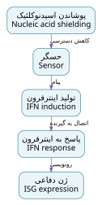
منابع این گام: [R13B6]
۱ — مهار IFNAR با مهار حسگر RNA چه تفاوتی دارد؟
۲ — چرا کنترل سلامت سلول در سنجش فرار ایمنی لازم است؟
۳ — اثر مهاری در بیان بیشازحد پروتئین چه را تضمین نمیکند؟
۱ — گزینه ۲. IFNAR در مرحله پاسخ به اینترفرون عمل میکند؛ حسگر بیشتر بالادست تولید پیام قرار دارد.
۲ — گزینه ۲. سلول آسیبدیده ممکن است هر پاسخ رونویسی را کمتر نشان دهد؛ این افت، اثر اختصاصی بر مسیر ایمنی را ثابت نمیکند.
۳ — گزینه ۳. دوز و جایگاه پروتئین در بیان بیشازحد ممکن است متفاوت باشند؛ نقش طبیعی به شواهد در زمینه عفونت نیاز دارد.
عفونت پایدار به حفظ بلندمدت ویروس یا ژنوم آن در میزبان اشاره دارد و میتواند شکلهای متفاوتی داشته باشد. در نهفتگی، ژنوم حفظ میشود ولی برنامه تولید کامل ویروس محدود است و امکان فعالشدن دوباره وجود دارد. در عفونت مزمن مولد، تولید ویروس ممکن است پیوسته یا متناوب ادامه یابد. این دو وضعیت در یک میزبان یا بافتهای مختلف میتوانند همزمان دیده شوند؛ نام عفونت، رفتار همه سلولها را یکسان نمیکند.
ژنوم نهفته الزاماً در کروموزوم ادغام نشده است. برخی هرپسویروسها ژنوم را عمدتاً بهصورت اپیزوم هستهای نگه میدارند، در حالی که مخزن رتروویروسی میتواند شامل پروویروس ادغامشده باشد. محدودشدن بیان ژن، کنترل اپیژنتیکی و وضعیت سلول میزبان در نگهداری حالت نقش دارند. بیعلامتبودن بهتنهایی نهفتگی نیست؛ ممکن است تولید ویروس با وجود نبود علائم ادامه داشته باشد. از طرف دیگر یک نتیجه منفی در نمونه نامناسب، نبود مخزن در بافت دیگر را اثبات نمیکند.
فعالشدن دوباره را باید از عفونت تازه و نیز باقیماندن صرف اسیدنوکلئیک متمایز کرد. افزایش شاخصهای برنامه مولد یا تولید نسل عفونتزا، همراه پیوند زمانی و ژنتیکی مناسب، شواهد بهتری از یک PCR منفرد فراهم میکند. حتی ژنوم نهفته قابل سنجش ممکن است ناقص باشد؛ بنابراین «حفظ توالی» و «مخزن دارای توان فعالشدن» یکسان نیستند. در ارزیابی یک مداخله، افت تکثیر فعال را به حذف مخزن تعمیم ندهید. سنجش مخزن باید شکل ژنومی، بافت هدف و توان عملکردی مورد ادعا را مشخص کند.
فردی بیعلامت است اما تولید پیوسته ویروس در یک مدل پیگیری دیده میشود. آیا نبود علامت برای نامیدن این حالت بهعنوان نهفتگی کافی است؟
خیر. بیعلامتبودن شاخص بالینی است؛ نهفتگی بر محدودیت برنامه مولد با حفظ ژنوم دلالت دارد. تولید پیوسته با عفونت مزمن مولد سازگارتر است.
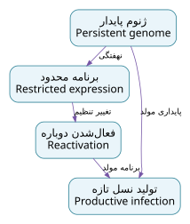
منابع این گام: [R13B1]؛ [R13B3]
۱ — کدام ویژگی برای مفهوم نهفتگی محوریتر است؟
۲ — ژنوم هرپسویروس نهفته الزاماً چه نیست؟
۳ — PCR منفی خون چه را بهتنهایی ثابت نمیکند؟
۱ — گزینه ۲. نهفتگی یک وضعیت برنامه ژنومی است؛ نبود علامت میتواند در عفونت مولد هم رخ دهد.
۲ — گزینه ۳. حفظ اپیزومی در بسیاری از هرپسویروسها ممکن است؛ ادغام شرط همگانی نهفتگی نیست.
۳ — گزینه ۲. مخزن میتواند بافتی باشد یا زیر حد تشخیص قرار گیرد؛ نتیجه نمونه را به تمام بدن تعمیم ندهید.
برخی ویروسها در فرایند سرطانزایی نقش دارند، اما عفونت با آنها سرنوشت قطعی همه سلولها یا همه افراد نیست. پایداری عفونت، وضعیت بافت، تغییرات میزبان و عوامل همراه بر پیشرفت اثر میگذارند. در یک مسیر مستقیم، پروتئینهای ویروسی شبکههای کنترل چرخه و مرگ سلولی را تغییر میدهند؛ در مسیرهای غیرمستقیم، التهاب مزمن یا اختلال ایمنی نیز میتوانند زمینه ایجاد تومور را تقویت کنند. این دو الگو الزاماً مانعةالجمع نیستند.
در HPVهای پرخطر، E6 میتواند با کمک E6AP تخریب p53 را تقویت کند و E7 با اختلال در عملکرد پروتئینهای خانواده RB، آزادشدن فعالیت E2F و بیان ژنهای چرخه سلول را تسهیل کند. این روابط، مدل مهمی برای اتصال ویروسشناسی به تنظیم چرخه سلولیاند؛ بااینحال عملکرد هر پروتئین به یک هدف محدود نیست. نامبردن p53 و RB بدون توضیح پیامد شبکهای، جای فهم سازوکار را نمیگیرد. اثر سویههای پرخطر را نیز نباید به همه انواع HPV تعمیم داد.
اثبات حضور توالی ویروس در تومور، بهتنهایی روشن نمیکند ویروس علت آغاز، نگهدارنده رشد یا یک همراه گذراست. استنباط علّی از همگرایی شواهد جمعیتی، الگوی بیان، پیوند مکانی، تغییرات ژنومی و آزمون عملکردی تقویت میشود. کاهش رشد پس از حذف یک عامل ویروسی نیز باید از اثر عمومی مداخله بر سلول جدا شود. در پاسخ آزمونی، بین عامل خطر، مکانیسم مولکولی و کفایت ایجاد تومور تمایز بگذارید؛ هیچیک خودکار جانشین دو مورد دیگر نیست و یک شاخص مولکولی، پیشبینی قطعی پیامد فردی نمیدهد.
در یک تومور DNA ویروس یافت شده، ولی بیان ژنهای آن بررسی نشده است. آیا میتوان از این داده، وابستگی ادامه رشد تومور به آن ویروس را قطعی دانست؟
خیر. حضور توالی شاهد همراهی است؛ برای نقش نگهدارنده، بیان و آزمونهای عملکردی با کنترل اختصاصیت و زمینه زیستی لازماند.
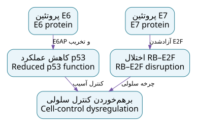
منابع این گام: [R13B8]
۱ — پیوند درست در الگوی HPV پرخطر کدام است؟
۲ — اختلال RB بهوسیله E7 چه پیامدی دارد؟
۳ — DNA ویروس در تومور بهتنهایی چه را ثابت میکند؟
۱ — گزینه ۱. E6 با E6AP تخریب p53 را تقویت میکند؛ نقش E7 بیشتر با خانواده RB و تنظیم E2F پیوند دارد.
۲ — گزینه ۳. RB فعالیت E2F را محدود میکند؛ اختلال این کنترل میتواند بیان ژنهای ورود به چرخه را تسهیل کند.
۳ — گزینه ۲. این یافته حضور توالی را نشان میدهد؛ علیت و ضرورت عملکردی به شواهد مستقل نیاز دارند.
• حسکردن ژنوم، تولید اینترفرون و پاسخ به اینترفرون سه لایه متمایزند.
• مهار شناسایی با مهار پاسخ IFNAR یکسان نیست.
• نهفتگی ژنومی با بیعلامتبودن یا PCR منفی تعریف نمیشود.
• وجود ویروس در تومور، بهتنهایی برای تعیین نقش علّی و مکانیسم کافی نیست.
| پدیده | شاخص مفید | حد استنباط |
|---|---|---|
| حسگری ذاتی | فعالشدن حسگر یا میانجی پاییندست | نام ژنوم، حسگر انحصاری را تعیین نمیکند |
| پاسخ به اینترفرون | فعالشدن مسیر IFNAR و ژنهای تحریکشونده | تولید اینترفرون با پاسخدادن سلول فرق دارد |
| نهفتگی | حفظ ژنوم با محدودیت برنامه مولد و امکان فعالشدن | نبود علامت، نهفتگی را اثبات نمیکند |
| عفونت مزمن مولد | حفظ بلندمدت همراه تولید پیوسته یا متناوب | میزان تکثیر در بافتها ممکن است ناهمسان باشد |
| سرطانزایی ویروسی | شواهد جمعیتی، مولکولی و عملکردی همسو | یک PCR مثبت در تومور کافی نیست |
جهش تغییر توالی است که میتواند در فرایند تکثیر یا بر اثر آسیب و پردازش ژنوم پدید آید. پیامد آن به جایگاه و زمینه ژنتیکی بستگی دارد: تغییر خاموش ممکن است در ساختار RNA یا تنظیم اثر بگذارد و تغییر اسیدآمینه هم الزاماً عملکرد پروتئین را مختل نمیکند. نرخ پیدایش جهش در هر چرخه با فراوانی واریانت در نمونه نهایی متفاوت است؛ انتخاب، رانش، اندازه جمعیت و تنگنای انتقال بر فراوانی مشاهدهشده اثر دارند.
نوترکیبی، بخشهایی با تاریخچه متفاوت را در یک مولکول ژنومی کنار هم قرار میدهد. در رتروویروسها، جابهجایی RT میان دو RNA بستهبندیشده میتواند به ساخت DNA نوترکیب کمک کند. این سازوکار را با بازآرایی قطعات کامل در ویروس قطعهقطعه اشتباه نگیرید. همچنین مشاهده دو نشانگر متفاوت در یک نمونه جمعیتی، وجود هر دو روی یک ژنوم واحد را ثابت نمیکند؛ ممکن است نمونه مخلوطی از دو جمعیت باشد. داده باید پیوند نشانگرها را در مقیاس مناسب نشان دهد.
همه ویروسهای RNA نرخ خطای یکسان ندارند و همه تغییرات ژنومی سازگاری ایجاد نمیکنند. برخی سامانهها سازوکارهای افزایش دقت دارند و اثر جهش نیز با محیط تغییر میکند. برای ارزیابی ادعای نوترکیبی، خطای تعیین توالی، آلودگی و مصنوعات تحلیل باید از توضیحهای زیستی جدا شوند. در پاسخ آزمون، ابتدا مشخص کنید داده تغییر توالی، پیوند بخشها یا افزایش فراوانی را نشان میدهد؛ سپس سازوکاری را انتخاب کنید که برای همان نوع مشاهده شاهد کافی دارد، نه صرفاً واژهای که با «تنوع» تداعی میشود.
فراوانی یک واریانت پس از فشار انتخابی از ۱٪ به ۳۰٪ رسیده است. آیا نرخ جهش آن حتماً سی برابر شده است؟
خیر. انتخاب میتواند واریانت موجود را غنی کند. سنجش فراوانی نهایی، بدون مدل و داده پیدایش جهش، نرخ جهش را تعیین نمیکند.
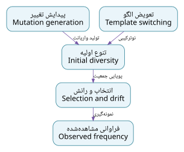
منابع این گام: [R13B3]؛ [R13B7]
۱ — فراوانی بیشتر یک واریانت الزاماً چه را نشان نمیدهد؟
۲ — نوترکیبی رتروویروسی میتواند از چه ناشی شود؟
۳ — دو نشانگر در نمونه مخلوط چه را ثابت نمیکنند؟
۱ — گزینه ۲. فراوانی از پیدایش، انتخاب و رانش تأثیر میگیرد؛ افزایش آن با افزایش نرخ جهش هممعنا نیست.
۲ — گزینه ۱. دو RNA بستهبندیشده امکان تعویض الگو را فراهم میکنند؛ این رویداد با تعویض قطعات کامل ژنوم متفاوت است.
۳ — گزینه ۳. سیگنال جمعیتی میتواند از دو ژنوم جدا بیاید؛ هموقوعی نمونه با پیوند ژنتیکی یکسان نیست.
بازآرایی قطعات ژنومی یا reassortment زمانی رخ میدهد که نسل تازه، قطعات ژنومی را از والدهای متفاوت دریافت کند. ژنوم قطعهقطعه امکان این سازوکار را فراهم میکند، ولی همحضوری مناسب ژنومهای والد و سازگاری بستهبندی و عملکرد قطعات نیز لازم است. در آنفلوانزای A، این مفهوم برای فهم تاریخچه متفاوت قطعات اهمیت دارد. تغییر توالی درون یک قطعه، بهتنهایی شاهد reassortment نیست و میتواند از جهش یا نوترکیبی مولکولی ناشی شود.
تعداد ترکیبهای صوری را باید از تعداد نسلهای زیستپذیر جدا کرد. اگر در مدل کاملاً ساده، دو والد برای هر یک از n قطعه دو گزینه مستقل بدهند، ۲ به توان n ترکیب صوری داریم. استقلال انتخاب، داشتن دقیقاً یک نسخه از هر قطعه و نبود برتری عملکردی، فرضهای همین مدلاند. در زیستشناسی واقعی، نشانههای بستهبندی و تعامل پروتئینها بسیاری از ترکیبها را حذف یا کمفراوان میکنند؛ بنابراین محاسبه، پیشبینی فراوانی یا بیماریزایی نیست.
در اصطلاح آنتیژنی، رانش یا drift تغییر تدریجی شناسایی ناشی از تغییرات انباشته است، در حالی که shift به تغییر عمده در الگوی آنتیژنی آنفلوانزای A اشاره میکند و میتواند با reassortment مرتبط باشد. هر بازآرایی الزاماً shift مهم یا همهگیری ایجاد نمیکند؛ ممکن است قطعات داخلی جابهجا شوند یا ترکیب تازه انتقال مؤثری نداشته باشد. این تمایز نمونهای از فاصله میان سازوکار مولکولی، فنوتیپ آنتیژنی و پیامد جمعیتی است؛ برای هر سطح، شاهد متناسب همان سطح لازم است.
در مدل فرضی ویروس چهارقطعهای، هر قطعه مستقل از یکی از دو والد انتخاب میشود. چند ترکیب غیرکاملاًوالدی، شامل دستکم یک قطعه از هر والد، وجود دارد؟
کل ترکیبهای صوری ۲⁴=۱۶ است. با حذف دو ترکیب والدینی، ۱۴ ترکیب مخلوط باقی میماند؛ زیستپذیری هیچکدام از این محاسبه تضمین نمیشود.
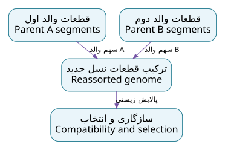
منابع این گام: [R13B7]
۱ — شرط ساختاری لازم برای reassortment کدام است؟
۲ — در مدل دووالدی سهقطعهای مستقل، ترکیب مخلوط صوری چند است؟
۳ — بازآرایی قطعه داخلی چه را الزاماً ایجاد نمیکند؟
۱ — گزینه ۲. بازآرایی به قطعات ژنومی مستقل مربوط است؛ پوشش یا DNAبودن بهتنهایی چنین سازوکاری ایجاد نمیکند.
۲ — گزینه ۳. ۲³=۸ ترکیب شامل دو والد کامل است؛ پس ۶ ترکیب مخلوط میماند، پیش از اعمال محدودیت زیستپذیری.
۳ — گزینه ۳. جابهجایی ژنتیکی و تغییر آنتیژنی عمده یک مفهوم نیستند؛ پیامد به قطعه و فنوتیپ آن بستگی دارد.
مقاومت را باید به کاهش حساسیت ویروس در یک زمینه مشخص نسبت داد، نه به مفهوم کلی «قویترشدن ویروس». یک تغییر ممکن است اتصال مهارکننده را کاهش دهد، پردازش سوبسترا را تغییر دهد یا اثر مرحله هدف را جبران کند. اما وجود تغییر در ژن هدف، بدون شاهد فنوتیپی و زمینهای، برای نامیدن هر واریانت بهعنوان مقاوم کافی نیست. اثر جهش میتواند با تغییرات دیگر ژنوم و نوع آزمون تعدیل شود.
فشار دارویی معمولاً فراوانی نسبی واریانتها را تغییر میدهد؛ الزاماً جهش مورد نیاز را بهصورت هدفمند ایجاد نمیکند. جمعیت ممکن است پیش از فشار دارای واریانت کمفراوان باشد. اگر آن واریانت در حضور مهارکننده برتری و در غیاب آن هزینه داشته باشد، رتبه رشد دو جمعیت با تغییر محیط عوض میشود. این وابستگی زمینهای، دلیل مهمی برای جداکردن مقاومت از سرعت تکثیر مطلق و نیز از بیماریزایی است.
از دادههای شکست مهار نباید فوراً مقاومت مولکولی را نتیجه گرفت. در یک مدل آزمایشی، مقدار نامناسب ماده، دسترسی ناکافی به هدف، تفاوت وضعیت سلول یا سنجش یک مرحله نامرتبط میتواند اثر ظاهری را توضیح دهد. سنجش سلامت سلول، فعالیت مرحله هدف و مقایسه حساسیت نسبی، به تمایز علتها کمک میکند. همچنین اثر همزمان بر چند مرحله مستقل میتواند مسیر فرار را محدود کند، اما از این منطق نمیتوان نسخه درمانی ساخت یا برتری هر ترکیب را بدون داده اعلام کرد. هدف این گام فهم انتخاب و چرخه است؛ داوری کاربردی به شواهد اختصاصی خود نیاز دارد.
واریانت A در نبود مهارکننده رشد نسبی ۰٫۸ و در حضور آن ۰٫۷ دارد؛ نوع B بهترتیب ۱ و ۰٫۱ است. کدام در فشار انتخابی برتری نسبی دارد؟
A در حضور مهارکننده نسبت به B برتر است، هرچند رشد مطلقش نسبت به حالت بدون مهارکننده افزایش نیافته؛ این مثال مقاومت نسبی همراه هزینه را نشان میدهد.
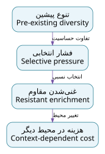
منابع این گام: [R13B3]؛ [R13B7]
۱ — افزایش سهم واریانت مقاوم در فشار دارویی چه را الزاماً ثابت نمیکند؟
۲ — هزینه سازشی مقاومت یعنی چه؟
۳ — تغییر توالی ژن هدف بدون سنجش عملکرد چه نتیجهای میدهد؟
۱ — گزینه ۳. انتخاب واریانت پیشین میتواند کافی باشد؛ داده فراوانی، تولید هدفمند جهش را ثابت نمیکند.
۲ — گزینه ۲. هزینه، نسبی و زمینهوابسته است؛ واریانت میتواند زیر فشار برتر و در نبود فشار کمبازدهتر باشد.
۳ — گزینه ۳. پیوند ژنوتیپ و حساسیت باید آزموده شود؛ هر تغییر توالی الزاماً اثر عملکردی مورد ادعا را ندارد.
حفاظت ایمنی از چند لایه تشکیل میشود و خروجی مورد نظر در تفسیر اهمیت دارد. جلوگیری از ورود اولیه، کاهش تکثیر، کاهش بیماری و کاهش انتقال اهداف یکسانی نیستند. یک تغییر آنتیژنی ممکن است اتصال بخشی از پادتنها را کم کند، ولی همه پاسخهای پادتن یا سلولی را حذف نکند. به همین دلیل، کاهش خنثیسازی در یک آزمون را نباید بدون شاهد جمعیتی، معادل ازبینرفتن کامل حفاظت در میزبان دانست.
در آنفلوانزا، تغییرات در آنتیژنهای سطحی میتوانند شناسایی حاصل از مواجهه پیشین را تغییر دهند و یکی از مبانی بازنگری ترکیب واکسن باشند. اما هر تغییر اسیدآمینه چنین اثری ندارد؛ جایگاه، ساختمان پروتئین، تعامل چند تغییر و سابقه ایمنی میزبان مهماند. از سوی دیگر، ناسازگاری آنتیژنی تنها علت تفاوت عملکرد نیست؛ سن، وضعیت ایمنی، فاصله زمانی و نوع پیامد اندازهگیریشده نیز نقش دارند. یک نتیجه مربوط به یک فصل یا جمعیت، قانون ثابت همه ویروسها نیست.
در بررسی داده، مقایسه باید گروهها و خروجیهای همارز داشته باشد. اگر میزان بستری با میزان PCR مثبت مقایسه شود، دو تعریف متفاوت از حفاظت کنار هم گذاشته شدهاند. همچنین مشاهده عفونت پس از واکسیناسیون، بهتنهایی شکست تمام اثرهای ایمنی را ثابت نمیکند. برای سنجش فرار، آزمونهای اتصال، خنثیسازی و شواهد پیامدی، پرسشهای متفاوت را پاسخ میدهند. این درس بر سازوکار و منطق تفسیر تمرکز دارد؛ نام محصول، توصیه زمانبندی یا برآورد اثربخشی جاری باید از مرجع روز و داده اختصاصی گرفته شود، نه از تعمیم مثال آموزشی.
در مطالعهای فرضی، عفونت PCR مثبت همچنان دیده میشود ولی پیامد شدید کمتر است. آیا میتوان نتیجه گرفت واکسن هیچ اثری نداشته است؟
خیر. جلوگیری از شناسایی ژنوم و کاهش پیامد شدید دو هدف متفاوتاند. داوری به گروه مقایسه، تعریف پیامد و کنترل عوامل مخدوشکننده نیاز دارد.
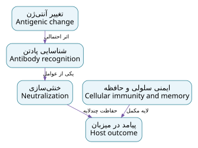
منابع این گام: [R13B7]؛ [R13B6]
۱ — کاهش خنثیسازی در یک آزمون چه را بهتنهایی ثابت نمیکند؟
۲ — کدام مقایسه از نظر تعریف پیامد نامتجانس است؟
۳ — هر تغییر اسیدآمینه آنتیژن چه وضعیتی دارد؟
۱ — گزینه ۲. حفاظت چندلایه و وابسته به پیامد است؛ آزمون خنثیسازی همه اجزای ایمنی و همه پیامدها را اندازه نمیگیرد.
۲ — گزینه ۳. بستری و PCR مثبت دو خروجی متفاوتاند؛ تفاوت تعریف پیامد تفسیر مستقیم حفاظت را مختل میکند.
۳ — گزینه ۳. توالی بهتنهایی اندازه اثر آنتیژنی را نمیدهد؛ ساختمان، زمینه ژنتیکی و پاسخ میزبان اهمیت دارند.
• جهش، نوترکیبی درون مولکول و بازآرایی قطعهها سه سازوکار متفاوتاند.
• افزایش فراوانی واریانت با افزایش نرخ پیدایش جهش یکسان نیست.
• داشتن ژنوم قطعهقطعه برای reassortment لازم است، اما تضمین سازگاری همه ترکیبها نیست.
• کاهش شناسایی پادتن الزاماً حذف همه لایههای حفاظت ایمنی را ثابت نمیکند.
| سازوکار | آنچه تغییر میکند | شرط یا محدودیت |
|---|---|---|
| جهش | توالی در نسل تازه | اثر میتواند خنثی، زیانبار یا زمینهوابسته باشد |
| نوترکیبی | اتصال بخشهایی با منشأ الگویی متفاوت | سازوکار و فراوانی میان گروهها متفاوت است |
| بازآرایی قطعهها | ترکیب قطعات ژنومی نسل جدید | ژنوم قطعهقطعه، همحضوری و سازگاری قطعات |
| انتخاب مقاومت | فراوانی نسبی واریانتها | برتری به محیط و هزینه سازشی وابسته است |
| رانش آنتیژنی | تغییر تدریجی شناسایی ایمنی | هر تغییر توالی الزاماً آنتیژنی نیست |
پلاک ناحیهای از تغییر یا تخریب جمعیت سلولی است که از گسترش موضعی عفونت در سامانه قابل سنجش پدید میآید. واحد تشکیلدهنده پلاک یا PFU، یک تعریف عملکردی است: آن مقدار از نمونه که یک پلاک قابل شمارش ایجاد کرده است. این واحد را با یک ذره فیزیکی یکسان نگیرید؛ ذرات معیوب، تجمع چند ذره یا محدودیت سلول میزبان میتوانند رابطه میان شمار ذره و پلاک را تغییر دهند.
در مدل شمارش خطی، تیتر برابر تعداد پلاک تقسیم بر حاصلضرب حجم نمونه رقیقشده و کسر رقت است. اگر حجم با میلیلیتر بیان شود، واحد نتیجه PFU/mL خواهد بود. کسر رقت، مثلاً ۱۰ به توان منفی چهار، با عامل رقیقسازیِ دههزار برابر معکوس است. فراموشکردن حجم یا ضرب در خود کسر رقت بهجای تقسیم، خطاهای رایجاند. تعداد پلاک باید متعلق به بازه قابل اعتماد روش باشد؛ همپوشانی پلاکها یا پسزمینه شمارش را مخدوش میکند.
نسبت نسخه ژنوم یا ذره به PFU میتواند برای مقایسه کیفیت عملکردی مفید باشد، اما فقط با روشها و شرایط همتراز. کاهش PFU در حالی که شمار ژنوم ثابت است، با آسیب ورود، بلوغ یا سایر مراحل سازگار است و بهتنهایی محل دقیق نقص را مشخص نمیکند. همچنین تغییر نوع سلول میتواند PFU یک نمونه ثابت را عوض کند. بنابراین گزارش تیتر بدون تعریف سامانه، کامل نیست و نبود پلاک نیز باید در حد حساسیت و توان پشتیبانی همان سامانه تفسیر شود.
در داده آموزشی، ۴۰ پلاک از ۰٫۲ میلیلیتر نمونه با کسر رقت ۱۰⁻⁴ به دست آمده است. تیتر اولیه چقدر است؟
با فرض شمارش معتبر و مدل خطی: ۴۰÷(۰٫۲×۱۰⁻⁴)=۲×۱۰⁶ PFU/mL. عامل حجم باید جدا از رقت در مخرج باشد.
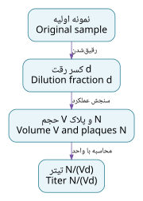
منابع این گام: [R13B2]؛ [R13B9]
۱ — ۵۰ پلاک از ۰٫۱ mL با کسر رقت ۱۰⁻⁵ چه تیتری میدهد؟
۲ — چرا PFU برابر شمار همه ذرات نیست؟
۳ — همپوشانی پلاکها بیشتر چه خطری دارد؟
۲ — گزینه ۱. PFU به موفقیت عملکردی در سامانه مشخص وابسته است؛ ذرات معیوب یا نامتناسب با میزبان لزوماً پلاک نمیدهند.
۳ — گزینه ۲. دو پلاک ادغامشده ممکن است یکی شمرده شوند؛ شمارش ظاهری از تعداد واحدهای آغازگر کمتر میشود.
در سنجش رقت انتهایی، هر واحد آزمون معمولاً بهصورت مثبت یا منفی ثبت میشود؛ شدت پاسخ لزوماً متغیر اصلی نیست. TCID50 دوزی است که در شرایط تعریفشده، انتظار میرود نیمی از واحدها پاسخ مثبت نشان دهند. این مقدار «پنجاه ذره» یا «مرگ نیمی از سلولهای هر واحد» نیست. تعریف مثبتبودن، نوع سلول، زمان خواندن و حجم مؤثر بر برآورد تأثیر دارند و باید میان مقایسهها سازگار باشند.
در مدل ایدئال تکضربهای با توزیع تصادفی مستقل، اگر میانگین رویداد عفونت موفق در هر واحد m باشد، احتمال منفیبودن برابر exp(−m) و احتمال مثبتبودن برابر ۱−exp(−m) است. در پاسخ ۵۰ درصدی، m=ln(2)، حدود ۰٫۶۹۳ رویداد موفق در هر واحد به دست میآید. این میانگین جمعیتی است؛ یک واحد کسری از ذره دریافت نمیکند، بلکه تعداد رویداد در واحدهای مختلف متفاوت است. اگر m برابر ۱ باشد، احتمال مثبتبودن حدود ۶۳٫۲ درصد است، نه صد درصد.
داده واقعی با تعداد محدود تکرار، خطای نمونهگیری دارد و ممکن است درصد مثبت در دو رقت مجاور کاملاً یکنواخت تغییر نکند. روشهای برآوردی مانند Reed–Muench و Spearman–Kärber از تقریبهایی استفاده میکنند و خروجی به روش محاسبه وابسته است. رابطه مدل تکضربهای را تبدیل تجربی ثابت TCID50 به PFU ننامید؛ تجمع، تفاوت سامانه و تعریف نقطه پایان میتوانند نتیجه را تغییر دهند. پرسش درست این است که کدام مدل و کدام داده، غلظت عملکردی مورد ادعا را پشتیبانی میکنند.
در مدل پواسون مستقل، ۲۵٪ واحدها منفیاند. میانگین رویداد موفق در هر واحد چقدر است؟
از exp(−m)=۰٫۲۵ داریم m=−ln(۰٫۲۵)=ln(4)≈۱٫۳۸۶. این یک براورد مدل با واحد «رویداد موفق در هر واحد آزمون» است، نه شمار مستقیم ذرات.
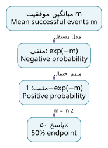
منابع این گام: [R13B9]
۱ — TCID50 به کدام مفهوم اشاره دارد؟
۲ — در مدل پواسون با m=۱، احتمال مثبت تقریباً چقدر است؟
۳ — کدام عامل تبدیل ثابت TCID50 به PFU را محدود میکند؟
۱ — گزینه ۲. واحد، نقطه پایان آماری یک سامانه است؛ تعداد ذره یا درصد مرگ همه سلولها تعریف آن نیست.
۲ — گزینه ۳. P(positive)=۱−e⁻¹≈۰٫۶۳۲؛ ۳۷٪ احتمال منفیبودن است.
۳ — گزینه ۲. هر دو سنجش عملکردی به شرایط وابستهاند؛ نسبت عددی از یک مدل یا سامانه را نمیتوان همگانی دانست.
برخی ویروسها میتوانند با اتصال چندظرفیتی به گیرندههای گلبول قرمز، شبکهای از سلولها تشکیل دهند. این پدیده هماگلوتیناسیون یا HA است و اساس آن برهمکنش اتصال است، نه تکثیر ویروس در گلبول قرمز. در خواندن الگوی معمول آزمون، شبکه گسترده با رسوب فشرده گلبولها تفاوت دارد. ویژگی گلبول و شرایط سامانه اهمیت دارند؛ نبود HA در یک ترکیب، نبود هر نوع ویروس را ثابت نمیکند.
تیتر HA معمولاً با معکوس بیشترین رقتی بیان میشود که معیار هماگلوتیناسیون را حفظ کرده است. این عدد یک واحد عملکردی وابسته به تعریف آزمون است و معادل PFU یا تعداد نسخه ژنوم نیست. ذره غیرعفونتزا نیز ممکن است توان اتصال و شبکهسازی خود را حفظ کند. بنابراین کاهش یا حفظ HA پس از یک تیمار، بهتنهایی پاسخ قطعی درباره عفونتزایی نمیدهد. باید روشن باشد که سنجش بر اتصال متمرکز است یا بر تکمیل چرخه.
در مهار هماگلوتیناسیون یا HAI، پادتن مناسب میتواند دسترسی ویروس به گلبول یا شبکهسازی را محدود کند. مثبتبودن مهار، با کاهش HA شناخته میشود و جهت خواندن آن با خود HA فرق دارد. کنترل گلبول بدون ویروس، کنترل ویروس بدون پادتن و توجه به مهارکنندههای غیراختصاصی برای تفسیر مفهومی لازماند. HAI و خنثیسازی روی سلول هدف، پرسشهای یکسانی ندارند؛ پادتن ممکن است یکی را بیشتر از دیگری تحت تأثیر قرار دهد. برای انتساب یک تغییر به ایمنی اختصاصی، باید کنترل و سامانه مرجع متناسب با همان ادعا وجود داشته باشد.
آخرین رقت دارای HA در نمونه فرضی ۱:۱۲۸ است. اگر PFU همان نمونه نامعلوم باشد، چه عددی را میتوان گزارش کرد؟
تیتر HA برابر ۱۲۸ با تعریف همان آزمون است. از این عدد نمیتوان PFU/mL را محاسبه کرد؛ سنجش اتصال و سنجش عفونتزایی همارز نیستند.
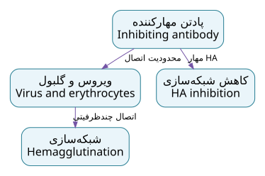
منابع این گام: [R13B2]
۱ — HA مثبت مستقیماً کدام را نشان میدهد؟
۲ — آخرین رقت مثبت HA برابر ۱:۶۴ است؛ تیتر متعارف چیست؟
۳ — در HAI، مهار اختصاصی موفق با کدام تغییر سازگار است؟
۱ — گزینه ۲. HA فعالیت اتصال چندظرفیتی را میسنجد؛ ذرات غیرعفونتزا نیز ممکن است این فعالیت را داشته باشند.
۲ — گزینه ۲. معکوس رقت نهایی، ۶۴، تیتر HA است؛ افزودن واحد PFU یا ژنوم به این عدد موجه نیست.
۳ — گزینه ۲. پادتن مهارکننده شبکهسازی را کم میکند؛ جهت خواندن مهار را با HA مثبت اشتباه نگیرید.
PCR یک توالی DNA هدف را تکثیر میکند. برای RNA، ابتدا با آنزیم رونویسی معکوس، cDNA ساخته میشود و سپس تکثیر انجام میگیرد؛ این فرایند RT-PCR است. اصطلاح RT در این کاربرد به reverse transcription اشاره دارد و نباید صرفاً با real-time یکی گرفته شود. سنجش کمی همزمان میتواند qPCR یا، برای هدف RNA، RT-qPCR نامیده شود. وجود یک قطعه قابل تکثیر، سالمبودن کل ژنوم یا وجود ذره کامل را تضمین نمیکند.
مقدار Ct به آستانه، کارایی واکنش، کیفیت استخراج و مواد مهارکننده وابسته است. در مدل ایدئال با دوبرابرشدن محصول در هر چرخه و شرایط یکسان، سه چرخه اختلاف با حدود هشت برابر تفاوت ماده هدف اولیه سازگار است. این رابطه برای مقایسه آزمونهای نامتجانس، اهداف متفاوت یا نمونههای با استخراج متفاوت قابل تعمیم مستقیم نیست. حتی در همان آزمون هم تفاوت نسخه ژنوم را نباید بدون شاهد به تفاوت PFU تبدیل کرد.
کنترل منفی استخراج و کنترل بدون الگو به آشکارکردن آلودگی کمک میکنند؛ کنترل داخلی یا شاهد فرایندی برای تفسیر مهار و کفایت استخراج اهمیت دارد. نتیجه منفی بدون کنترل عملکرد واکنش میتواند ناشی از شکست فرایند باشد. برای ادعای تکثیر مولد و تولید نسل عفونتزا، سنجش عملکردی در سامانه مناسب و شاهد تولید نسل تازه لازم است. سنجش تکچرخهای میتواند ورود یا بیان را نشان دهد، اما معادل اثبات چرخه مولد کامل نیست؛ منفیبودن یک سامانه نیز با توجه به حساسیت و سازگاری میزبان تفسیر میشود. ترکیب داده اسیدنوکلئیک، آنتیژن و عملکرد، پرسشهای مکمل را پاسخ میدهد؛ هیچ نام آزمونی جای تعریف دقیق ادعای زیستی را نمیگیرد.
دو نمونه با استخراج و واکنش یکسان Ctهای ۲۴ و ۲۷ دارند. در مدل کارایی صددرصد، تفاوت هدف اولیه چقدر است و درباره PFU چه میتوان گفت؟
نمونه Ct=۲۴ حدود ۲³=۸ برابر هدف اولیه بیشتری دارد. نسبت PFU از این داده معلوم نیست، چون PCR واحد عملکردی عفونت را اندازه نمیگیرد.
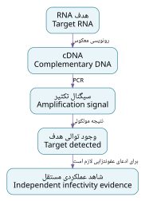
منابع این گام: [R13B2]؛ [R13B9]؛ [R13B11]
۱ — RT در RT-PCR به چه اشاره دارد؟
۲ — در مدل دوبرابرشدن ایدئال، اختلاف چهار چرخه Ct معادل چندبرابر هدف اولیه است؟
۳ — PCR منفی همراه شکست کنترل داخلی چگونه تفسیر میشود؟
۱ — گزینه ۲. RT در این نام reverse transcription است؛ سنجش همزمان کمی با qPCR مشخص میشود و مفهوم جداگانهای دارد.
۲ — گزینه ۳. ۲⁴=۱۶؛ این نسبت فقط با فرض کارایی و شرایط یکسان به هدف اولیه مربوط است، نه خودکار به PFU.
۳ — گزینه ۲. شکست کنترل میتواند از مهار یا اشکال استخراج باشد؛ منفیبودن هدف در چنین زمینهای نبود واقعی هدف را ثابت نمیکند.
• PFU شاخص عملکردیِ وابسته به سامانه سنجش است؛ ذره، نسخه ژنوم و PFU همارز نیستند.
• TCID50 نقطه پاسخ ۵۰ درصدی است و تبدیل آن به PFU در همه سامانهها ثابت نیست.
• HA فعالیت اتصال و شبکهسازی را میبیند؛ HAI مهار همین پدیده را میسنجد.
• PCR یا RT-PCR هدف اسیدنوکلئیکی را شناسایی میکند؛ استنباط عفونتزایی به شاهد عملکردی نیاز دارد.
| سنجش | آنچه مستقیماً میسنجد | آنچه خودبهخود ثابت نمیکند |
|---|---|---|
| شمار ذره | ساختارهای فیزیکی با معیار روش | داشتن ژنوم کامل یا توان عفونت |
| PCR / RT-PCR | توالی هدف DNA یا RNA پس از تبدیل | وجود ویروس قابل انتقال |
| پلاک / PFU | واحد آغازگر پلاک در شرایط تعریفشده | برابری یک واحد با دقیقاً یک ذره فیزیکی |
| TCID50 | دوز متناظر با پاسخ مثبت نیمی از واحدهای آزمون | تبدیل ثابت تجربی به PFU |
| HA | توان ایجاد شبکه گلبول قرمز در سامانه مناسب | وجود نسل عفونتزا |
| HAI | مهار هماگلوتیناسیون | همارزی کامل با خنثیسازی در سلول هدف |
۱ — در یک نمونه فرضی ۲×۱۰^۶ ذره و ۴×۱۰^۴ واحد عفونتزا وجود دارد. نسبت کدام است؟
۲ — ذرهای RNA دارد اما هیچ پروتئینی برای ترجمه مستقل رمز نمیکند. کدام برداشت درستتر است؟
۳ — خانوادههای متفاوت میتوانند هر دو RNA مثبت داشته باشند. این امر چه رابطهای را روشن میکند؟
۴ — اگر یک معیار توالی برای مرزبندی جنس ویروسی تعیین شده باشد، کاربرد آن در خانواده نامرتبط چگونه است؟
۵ — کدام مشاهده برای تفکیک مانع ورود از نامجازبودن محیط داخلی مفیدتر است؟
۶ — در مدل الف ورود وزیکولی طبیعی ولی تحویل کارکردی ژنوم کم است. کدام نتیجه قابل دفاع است؟
۷ — کاهش تعداد ذرات و کاهش عفونتزایی به نسبت یکسان، چه چیزی را بهتنهایی ثابت نمیکند؟
۸ — ذره پوششدار از غشای درونسلولی منشأ گرفته است. کدام برداشت نامجاز است؟
۹ — وقتی پروتئین ساختمانی طبیعی است ولی ژنوم در ذرات کم است، کدام مرحله نخست مطرح میشود؟
۱۰ — ثابتبودن عفونتزایی داخل سلول و افت فقط محیط بیرون با کدام دو فرض نزدیک سازگار است؟
۱۱ — ویروس dsDNA در هسته است و RNA پلیمراز میزبان را به کار میگیرد. کدام گزاره هنوز نیاز به شاهد جدا دارد؟
۱۲ — ژن پاکس در فاز زودرس بیان میشود؛ عامل رونویسی آن از کجا میتواند آمده باشد؟
۱۳ — DNA تکرشتهای ورودی پاروویروس پیش از بیان مؤثر چه تغییری لازم دارد؟
۱۴ — در پاکس، عامل میانی برای بیان دیررس لازم است. نقص آن با کدام الگو سازگارتر است؟
۱۵ — مشاهده ژنوم پاکس در کارخانه سیتوپلاسمی چه چیزی را ثابت نمیکند؟
۱۶ — اگر RNA مثبت فقط پروتئین همانندساز را بسازد اما ژنوم تازه ساخته نشود، کدام گزاره درستتر است؟
۱۷ — در یک RNAویروس، پیشساز چندپروتئینی و محصولات برشیافته دیده میشوند. کدام سطح تنظیم مستقیمتر مطرح است؟
۱۸ — چرا اندازهگیری فقط RNA زیرژنومی برای برآورد شمار ژنوم کامل محدودیت دارد؟
۱۹ — در تصویر سلولی غشای بازآراییشده کنار RdRP دیده میشود. کدام استنتاج معتبرتر است؟
۲۰ — فعالیت اگزونوکلئازی مرتبط با دقت در کروناویروس چه تعمیمی را نقض میکند؟
۲۱ — ژنوم منفی و mRNA مثبت طولهای متفاوت دارند. کدام نتیجه محتاطانهتر است؟
۲۲ — در مدل دو والد و دو قطعه مستقل، چند ترکیب منشأ غیرکاملاًوالدی وجود دارد؟
۲۳ — کدام اثر برای نقص اتصال کلاهک PB2 در آنفلوانزا مستقیمتر است؟
۲۴ — مجموعه درونی روتاویروس چرا الزاماً مانع بیان ژنوم نیست؟
۲۵ — در متن قدیمی Reoviridae آمده است. برای مطالعه امروزی بهترین رویکرد چیست؟
۲۶ — در دورگه RNA–DNA، مهار RNase H با حفظ پلیمراز بیشتر کدام اختلال را مطرح میکند؟
۲۷ — دو سلول DNA ویروسی یکسان دارند، اما فقط سلول دوم شاهد اتصال ویروس–میزبان دارد. کدام نتیجه محتاطانهتر است؟
۲۸ — در HBV، توقف تولید pgRNA بدون تغییر فوری cccDNA چه را مستقیمتر کاهش میدهد؟
۲۹ — ذرات خروجی فراواناند ولی پردازش پروتئینی و عفونتزایی افت کرده است. کدام مرحله اولویت بررسی دارد؟
۳۰ — کدام مقایسه رتروویروس و HBV دقیق است؟
۳۱ — در منحنی فرضی، ذره کامل در دقیقه ۱۵ و رهاسازی در دقیقه ۲۵ آغاز میشود. فاصله بلوغ پیش از رهاسازی چقدر است؟
۳۲ — سویه دارای پروفاژ، بدون تولید قابل سنجش ذره، صفت تازه نشان میدهد. کدام توضیح ممکن است؟
۳۳ — کاهش CI با ثابتماندن جایگاههای سالم، در الگوی ساده لامبدا ابتدا چه را تسهیل میکند؟
۳۴ — چرا ژن بسیار دور از محل ادغام، نامزد ضعیفتری برای ترانسداکشن اختصاصی همان پروفاژ است؟
۳۵ — DNA منتقلشده به گیرنده ابتدا دیده میشود ولی در نسلهای بعد ناپدید میشود. کدام تفکیک مهم است؟
۳۶ — ژن دفاعی با اینترفرون بیرونی هم القا نمیشود، ولی سلامت سلول حفظ است. کدام ناحیه باید بررسی شود؟
۳۷ — فعالشدن cGAS در یک عفونت RNA چه تفسیری میتواند داشته باشد؟
۳۸ — کدام مشاهده برای فعالشدن دوباره از نهفتگی قویتر از یک PCR منفرد است؟
۳۹ — در مدل HPV پرخطر، اثر E7 بر RB چگونه به چرخه سلولی پیوند میخورد؟
۴۰ — وجود ویروس در تومور و کاهش رشد پس از مداخله، چرا هنوز کنترل اختصاصیت میخواهد؟
۴۱ — واریانت کمفراوان پیش از فشار، پس از فشار غالب شده است. تبیین مستقیمتر چیست؟
۴۲ — دو قطعه ژنوم تبارهای والدینی متفاوت دارند، بدون شواهد اتصال درون قطعه. کدام سازوکار سازگارتر است؟
۴۳ — در مدل دووالدی ششقطعهای مستقل، تعداد ترکیبهای صوری کل چقدر است؟
۴۴ — واریانت مقاوم در نبود فشار آهستهتر است؛ با حذف فشار چه انتظار قطعی مجاز نیست؟
۴۵ — در یک مقایسه، خنثیسازی آزمایشگاهی کاهش یافته ولی حفاظت در برابر بیماری شدید به همان نسبت کاهش نیافته است. چرا این دو یافته الزاماً ناسازگار نیستند؟
۴۶ — در شمارش فرضی، ۳۰ پلاک از ۰٫۱ mL در کسر رقت ۱۰⁻⁴ دیده شد. تیتر چیست؟
۴۷ — در مدل تکضربهای، ۱۰٪ واحدها منفیاند. میانگین رویداد موفق تقریباً چقدر است؟
۴۸ — پس از آسیب نمونه، HA حفظ و PFU کم شده است. کدام نتیجه درستتر است؟
۴۹ — در سنجش یکسان با کارایی ایدئال، Ct نمونه A دو چرخه کمتر است. نسبت هدف A به B چیست؟
۵۰ — کدام گزارش دقیقتر است؟
۱ — گزینه ۳. تقسیم شمار ذرات بر واحد عفونتزا برابر ۵۰ است. این نسبت کارایی سنجش را نیز در بر میگیرد و درصد دقیق ذرات ناقص نیست.
۲ — گزینه ۲. ویروسها دستگاه ترجمه مستقل ندارند و به ریبوزوم سلول اتکا میکنند؛ نوع RNA بهتنهایی ضرورت واسطه DNA را ثابت نمیکند.
۳ — گزینه ۱. مسیر ژنوم تا mRNA یک محور کارکردی است؛ ردهبندی رسمی از مجموعه صفات و شواهد تبارزایی استفاده میکند.
۴ — گزینه ۴. معیارهای مرزبندی باید در چارچوب همان رده و گروه علمی به کار روند؛ یک آستانه را نمیتوان خودکار قانون همه ویروسها دانست.
۵ — گزینه ۲. سنجههای مرحلهای نشان میدهند محدودیت پیش یا پس از ورود قرار دارد؛ ظاهر یا نام بیماری این تمایز علّی را ایجاد نمیکند.
۶ — گزینه ۲. حضور داخل وزیکول فقط درونیسازی را نشان میدهد؛ فرار از غشا و پوششبرداری میتوانند هنوز محدود باشند.
۷ — گزینه ۳. اگر هر دو مقدار متناسب کم شوند، کارایی هر ذره الزاماً تغییر نکرده است؛ نقص بلوغ به شواهد پردازش یا کاهش کارایی نیاز دارد.
۸ — گزینه ۴. پوشش میتواند از غشای درونسلولی گرفته شود و خروج بعدی وزیکولی باشد؛ همه پوششها از غشای پلاسمایی نیستند.
۹ — گزینه ۱. وجود پروتئین ساختمانی برای ورود ژنوم کافی نیست؛ سیگنالها و دستگاه بستهبندی باید بررسی شوند، بدون آنکه نقص دقیق از یک داده قطعی شود.
۱۰ — گزینه ۲. هر دو فرض میتوانند محصول بیرونی را کم کنند در حالی که ذره کارکردی درون سلول باقی است؛ سنجش زمان و پایداری آنها را جدا میکند.
۱۱ — گزینه ۳. منشأ دستگاه رونویسی با منشأ دستگاه همانندسازی DNA یکی نیست؛ هر کدام قالب و محصول متفاوت دارد.
۱۲ — گزینه ۱. پاکس دستگاه رونویسی و عوامل لازم اولیه را بستهبندی میکند؛ این راه نیاز به ساختهشدن قبلی محصولات دیررس همین عفونت را برطرف میکند.
۱۳ — گزینه ۴. ساخت رشته مکمل، واسطه مناسب رونویسی را فراهم میکند؛ ریبوزوم DNA را مستقیماً نمیخواند.
۱۴ — گزینه ۲. نقص در آبشار میانی میتواند مرحله بالادست زودرس را حفظ کند ولی خروجی پاییندست دیررس را کاهش دهد.
۱۵ — گزینه ۳. استقلال نسبی دستگاه رونویسی جای وابستگی به ترجمه و متابولیسم میزبان را نمیگیرد.
۱۶ — گزینه ۱. آغاز ترجمه یک مرحله است؛ فعالیت عوامل، قالب مکمل و محیط همانندسازی برای ساخت ژنوم تازه نیز لازماند.
۱۷ — گزینه ۳. الگوی پیشساز و محصول برش، پردازش پروتئینی را نشان میدهد؛ با چندقطعهبودن RNA یا cap-snatching یکی نیست.
۱۸ — گزینه ۲. افزایش RNA زیرژنومی میتواند بیان را نشان دهد، اما معادل افزایش ژنوم کامل بستهبندیشدنی نیست.
۱۹ — گزینه ۴. ارتباط RdRP و غشای سلولی با اندامک همانندسازی سازگار است؛ پوششداربودن ذره مستقل از این مشاهده است.
۲۰ — گزینه ۱. برخی RNAویروسها فعالیتهایی برای افزایش دقت دارند؛ این مشاهده وجود واسطه یا نیاز به ترجمه را رد نمیکند.
۲۱ — گزینه ۳. mRNA ترجمهپذیر و واسطه کامل همانندسازی اهداف متفاوت دارند و میتوانند طول و ساختار انتهایی متفاوتی داشته باشند.
۲۲ — گزینه ۲. چهار ترکیب نظری داریم؛ دو ترکیب والدگونه و دو ترکیب مخلوطاند. فرض سازگاری و استقلال برای این شمارش لازم است.
۲۳ — گزینه ۴. PB2 در گرفتن کلاهک RNA میزبان نقش دارد؛ نقص آن مسیر تأمین آغازگر رونویسی mRNA را تهدید میکند.
۲۴ — گزینه ۱. رونویسی در مجموعه محافظ انجام میشود و RNAهای پیامرسان بیرون میآیند؛ ترجمه همچنان به ریبوزوم سلول وابسته است.
۲۵ — گزینه ۳. تغییر ردهبندی باید با تاریخ روشن شود؛ سازوکار dsRNA بر اساس شواهد چرخه تفسیر میشود و نام قدیمی نوع ژنوم را عوض نمیکند.
۲۶ — گزینه ۲. جایگاه پلیمرازی و RNase H کارهای متفاوت دارند؛ حفظ ساخت DNA به معنی پردازش طبیعی RNA دورگه نیست.
۲۷ — گزینه ۳. DNA کلی شکل فیزیکی را تعیین نمیکند؛ اتصال اختصاصی شاهد ادغام است، اما سالمبودن کامل پروویروس هنوز بررسی جدا میخواهد.
۲۸ — گزینه ۱. pgRNA الگوی رونویسی معکوس است؛ افت آن میتواند تولید DNA تازه را محدود کند، بدون اینکه cccDNA موجود فوراً حذف شود.
۲۹ — گزینه ۴. تطابق نقص پردازش با افت عملکرد، بلوغ را مطرح میکند؛ شمار ذرات بهتنهایی پایان موفق این مرحله را نشان نمیدهد.
۳۰ — گزینه ۲. هر دو از رونویسی معکوس بهره میبرند؛ نوع ژنوم ویریون و شکل پایدار رونویسی در آنها متفاوت است.
۳۱ — گزینه ۳. در مدل ساده، فاصله پایان اختفا تا آغاز رهاسازی ۲۵−۱۵=۱۰ دقیقه است؛ آن را با کل دوره نهفتگی اشتباه نگیرید.
۳۲ — گزینه ۱. لیزوژنی خاموشی مطلق ژنها نیست؛ محصول یک ژن پروفاژ میتواند فنوتیپ را تغییر دهد، هرچند نسبت علّی باید بررسی شود.
۳۳ — گزینه ۴. CI برنامه لیتیک را محدود میکند؛ کمشدن آن میتواند pL و pR را آزاد کند، اما سرنوشت نهایی به کل شبکه وابسته است.
۳۴ — گزینه ۲. محدودیت مجاورت از سازوکار خروج نادقیق میآید؛ این نتیجه نفی انتقال آن ژن با سازوکارهای دیگر نیست.
۳۵ — گزینه ۱. انتقال فیزیکی میتواند بدون تثبیت رخ دهد؛ DNA نیازمند نوترکیبی یا سازوکار نگهداری مناسب است تا وراثت پایدار داشته باشد.
۳۶ — گزینه ۳. پیام بیرونی حسگری اولیه را دور میزند؛ بیپاسخی، اختلال مسیر پاسخ را مطرح میکند، نه لزوماً نام یک هدف مولکولی مشخص.
۳۷ — گزینه ۲. مسیرهای حسگری انحصاری نیستند؛ آسیب یا جابهجایی DNA میزبان میتواند در زمینه عفونت RNA به فعالشدن cGAS کمک کند.
۳۸ — گزینه ۴. PCR حضور توالی را میسنجد؛ گذار به برنامه مولد و خروجی عملکردی، شواهد مستقیمتری برای فعالشدن دوباره فراهم میکنند.
۳۹ — گزینه ۱. اختلال RB میتواند فعالیت E2F را آزاد کند؛ مسیر سرطانزایی چندعاملی است و این رابطه بهتنهایی سرنوشت قطعی هر سلول نیست.
۴۰ — گزینه ۳. اثر عمومی بر سلول میتواند افت رشد را توضیح دهد؛ نسبتدادن وابستگی رشد به عامل ویروسی نیازمند رد این توضیح رقیب است.
۴۱ — گزینه ۲. تنوع پیشین بستر انتخاب است؛ تغییر فراوانی بهتنهایی اثبات افزایش نرخ جهش یا ایجاد هدفمند واریانت نیست.
۴۲ — گزینه ۴. تاریخچه متفاوت قطعات کامل با reassortment سازگار است؛ برای نوترکیبی درون مولکول باید شواهد پیوند در همان قطعه داشت.
۴۳ — گزینه ۱. با دو انتخاب مستقل در هر یک از شش قطعه، ۲⁶=۶۴ ترکیب صوری داریم؛ زیستپذیری و فراوانی واقعی از این شمار به دست نمیآید.
۴۴ — گزینه ۳. هزینه زمینهوابسته است و رانش، پیوند ژنتیکی یا جهشهای جبرانی میتوانند پویایی را تغییر دهند؛ حذف فوری نتیجه لازم نیست.
۴۵ — گزینه ۲. حفاظت چندلایه و تعریف پیامد متفاوت است؛ کاهش یک شاخص آزمایشگاهی الزاماً تغییر هماندازه همه پیامدهای میزبان را پیشبینی نمیکند.
۴۶ — گزینه ۴. تیتر از ۳۰÷(۰٫۱×۱۰⁻⁴)=۳×۱۰⁶ PFU/mL به دست میآید؛ عامل حجم را حذف نکنید.
۴۷ — گزینه ۱. P(negative)=e⁻ᵐ؛ بنابراین m=−ln(۰٫۱)=ln(10)≈۲٫۳۰۳، با فرض رویدادهای مستقل و شرایط همگن.
۴۸ — گزینه ۳. HA اتصال چندظرفیتی و PFU موفقیت عفونت را میسنجد؛ آسیب میتواند این دو ویژگی را به میزان متفاوت تغییر دهد.
۴۹ — گزینه ۲. دو چرخه با ۲²=۴ برابر هدف اولیه سازگار است؛ این نسبت درباره هدف مولکولی است و خودکار به PFU تبدیل نمیشود.
۵۰ — گزینه ۴. هر آزمون دامنه استنباط خود را دارد؛ شناسایی توالی، توان تولید عفونت یا انتقال را بهتنهایی اثبات نمیکند.
برای خودسنجی، هر آزمون را پیش از دیدن کلید حل کنید. زمان تمرین پیشنهادی ۳۵ دقیقه است و زمان رسمی آزمون نیست. نمره تمرینی با فرض یک نمره صحیح و یکسوم نمره منفی برای هر پاسخ غلط محاسبه میشود؛ بیپاسخ صفر است. این فرض را با مقررات آزمون مقصد تطبیق دهید.
۱ — پس از نگهداری یک نمونه، نسخههای RNA ثابت و عفونتزایی ده برابر کم شده است. کدام نتیجه پشتیبانی میشود؟
۲ — برای توصیف یک ویروس جدید، کدام دو برچسب محورهای مستقلتری را بیان میکنند؟
۳ — نوکلئوکپسید در یک ویروس پوششدار به کدام مجموعه اشاره میکند؟
۴ — مداخله A اتصال را کم میکند و مداخله B با اتصال طبیعی بیان اولیه را کم میکند. بهترین تفکیک چیست؟
۵ — کاهش کپسید خارجی در ویروس dsRNA همراه با حفظ رونویسی داخلی، کدام مفهوم را تقویت میکند؟
۶ — در سلول آدنوویروسی، یک RNA اولیه به چند mRNA تبدیل شده است. کدام فرایند مستقیمتر است؟
۷ — پلیمراز ویریونی پاکس پیش از ساخت DNA جدید mRNA میسازد. این داده چه چیزی را نشان میدهد؟
۸ — جهشی فعالیت هلیکازی NS1 را از بین میبرد ولی DNA پلیمراز میزبان طبیعی است. کدام برداشت درست است؟
۹ — در یک مدل RNA مثبت، نخست ترجمه و سپس افزایش رشته منفی رخ میدهد. بهترین ترتیب علّی چیست؟
۱۰ — وجود RNA زیرژنومی و ژنوم کامل در یک سلول چرا شمار قطعات ویریونی را تعیین نمیکند؟
۱۱ — در آنفلوانزا، mRNA تازه رهبر کوتاه میزبان دارد ولی RNA مکمل کامل ندارد. کدام تفاوت توضیحدهنده است؟
۱۲ — در نظریه دو منشأ و پنج قطعه مستقل، چند ترکیب مخلوط غیرکاملاًوالدی داریم؟
۱۳ — پلیمراز همراه ژنوم منفی وارد شده اما فعالیتش غایب است. کدام محصول زودتر در خطر است؟
۱۴ — در یک مدل رتروویروسی، اتصال tRNA آغازگر مختل است ولی RT در واکنش جدا فعال است. کدام رویداد آسیبپذیرتر است؟
۱۵ — DNA رتروویروسی تازه در دو انتها U3–R–U5 دارد. این ساختار بیشتر محصول کدام فرایند است؟
۱۶ — در مدل ساده، ۱۰⁵ سلول عفونتگرفتهاند ولی فقط ۴۰٪ مولدند؛ خروجی خالص ۸×۱۰⁶ PFU است. بازده سلول مولد چیست؟
۱۷ — اپراتور مهار برنامه لیتیک روی DNA فاژ تغییر کرده است. چرا افزودن مهارگر طبیعی ممکن است کافی نباشد؟
۱۸ — در یک بررسی، ژن صفت تازه از DNA باکتریِ دهنده آمده و ذره فاژی آن را منتقل کرده است. نام فرایند چیست؟
۱۹ — RNA محرک پاسخ نمیدهد، اما فعالسازی مستقیم مسیر پاییندست MAVS پاسخ را برمیگرداند. نخستین ناحیه بررسی کدام است؟
۲۰ — اینترفرون فراوان است ولی ژنهای تحریکشونده کماند؛ اندازهگیری هر دو چه مزیتی دارد؟
۲۱ — در یک قطعه RNA، بخش آغازین شبیه والد A و بخش انتهایی شبیه B است؛ کل قطعه یک مولکول است. کدام فرضیه مستقیمتر است؟
۲۲ — دو جمعیت نرخ پیدایش جهش برابر دارند اما واریانتها در یکی کمتر میمانند. کدام عامل میتواند تفاوت را توضیح دهد؟
۲۳ — پس از همعفونتی دو والد، یک ویریون نسل بعد سه قطعه کامل از والد A و دو قطعه کامل از والد B دارد؛ درون قطعات، محل شکست و اتصال تازه دیده نمیشود. کدام سازوکار مستقیمتر پشتیبانی میشود؟
۲۴ — در دو شمارش فرضی با کسر رقت ۱۰⁻⁴، مجموع ۹۰ پلاک از مجموع حجم ۰٫۳ mL دیده شد. برآورد تجمیعی تیتر چیست؟
۲۵ — با فرض پواسون و m=۱، احتمال دو یا بیشتر رویداد موفق تقریباً چقدر است؟
۱ — ویروس به دو سلول متصل میشود، اما فقط در سلول A ژنوم تازه میسازد. کدام ادعا زودهنگام است؟
۲ — در مقایسه دو نمونه، نسبت ذره به واحد عفونتزا از ۱۰ به ۱۰۰ میرسد. معنای مستقیم چیست؟
۳ — ذرات بیرونی با ژنوم کامل ولی با پیشساز پردازشنشده، عفونتزایی اندکی دارند. کدام مرحله مهمتر است؟
۴ — پوشش ذرهای از غشای گلژی گرفته شده است. کدام گزینه با این مشاهده ناسازگارتر است؟
۵ — مقدار عفونتزایی درون سلول زودتر از محیط بالا میرود. کدام نتیجه مناسبتر است؟
۶ — محصول ساختمانی دیررس سالم است اما DNA نسل جدید ساخته نمیشود. کدام گزاره منطقی است؟
۷ — چرا مقایسه RNA پلیمراز II آدنوویروس با RNA پلیمراز پاکس سودمند است؟
۸ — یک پیشساز پیکورناویروس برش نمیخورد و فعالیتی متفاوت از پروتئین نهایی نشان میدهد. کدام برداشت مناسب است؟
۹ — RNA ژنومی وارد سیتوپلاسم شده ولی بهعلت آسیب عناصر ضروری بیان ندارد. کدام تعمیم نادرست است؟
۱۰ — ویروس فاقد پوشش برای ساخت RNA از غشای سلول استفاده میکند. کدام دو سطح باید جدا شوند؟
۱۱ — در روتاویروس، RNA مثبت پیش از تشکیل dsRNA نسل جدید در ذره قرار میگیرد. نقش بعدی آن چیست؟
۱۲ — کدام جفت طبقهبندی/کارکرد درباره روتاویروس دقیقتر است؟
۱۳ — در HBV، DNA ویریون ورودی و الگوی پایدار هستهای را کدام جفت درست نشان میدهد؟
۱۴ — پس از مهار ادغام در یک مدل، DNA ویروسی داخلی قابل سنجش باقی است. کدام گزارش درستتر است؟
۱۵ — در مدل HBV، RNA حاصل از cccDNA ثابت و DNA خروجی کاهش یافته است. داده بیشتر با کدام اثر سازگار است؟
۱۶ — ذرات کامل درونسلولی افزایش مییابند ولی هنوز PFU بیرونی زیاد نشده است. کدام وضعیت محتملتر است؟
۱۷ — وجود یک فاژ در جمعیت باکتری با پایداری طولانی ژنوم و تولید متناوب نسل همراه است. کدام ویژگی با فاژ معتدل سازگار است؟
۱۸ — ژنوم ویروسی اپیزومی پایدار است و برنامه مولد محدود، اما امکان فعالشدن دارد. کدام گزاره دقیقتر است؟
۱۹ — کاهش p53 در یک مدل E6 مثبت چگونه باید تفسیر شود؟
۲۰ — توالی ویروس در بافت سالم و تومور هر دو یافت شده است. کدام داده برای نقش اختصاصی در تومور مفیدتر است؟
۲۱ — یک واریانت زیر فشار، رشد ۰٫۶ در برابر ۰٫۲ رقیب دارد ولی بدون فشار ۰٫۷ در برابر ۱. کدام درست است؟
۲۲ — یک مطالعه کاهش خنثیسازی و مطالعه دیگر کاهش بستری را گزارش میکند. برای مقایسه مستقیم چه کم است؟
۲۳ — در HAI، نمونه بدون شبکه دیده میشود ولی کنترل ویروس نیز HA ندارد. نتیجه چیست؟
۲۴ — دو نمونه با آزمونهای متفاوت Ct یکسان دارند. کدام نتیجه مجاز نیست؟
۲۵ — کنترل بدون الگو مثبت شده است. درباره نمونههای مثبت همان اجرا چه باید گفت؟
۱ — دو ویروس هر دو بدون پوششاند، اما یکی DNA و دیگری RNA دارد. چه چیزی از نبود پوشش به دست نمیآید؟
۲ — کدام صورتبندی دقیقتر از «ویروس زنده است یا نیست» برای حل سؤال چرخه است؟
۳ — RNA مثبت یک ویروس از راه واسطه DNA به mRNA نسل بعد میرسد. کدام معیار برای تشخیص گروه آن لازم است؟
۴ — در آزمون فرضی، عامل A به گیرنده متصل میشود ولی محرک تغییر ساختار ورود را فعال نمیکند. نتیجه محتمل چیست؟
۵ — ذرات با ژنوم کامل آزاد میشوند اما توان ورود به سلول بعدی ندارند. کدام محور باید جدا بررسی شود؟
۶ — در آدنوویروس، افزایش DNA تازه با افت یک رده mRNA رخ داده است. کدام تفسیر محتاطانهتر است؟
۷ — دو ویروس هر دو dsDNA دارند، اما فقط یکی RNA پلیمراز همراه ذره دارد. کدام ویژگی میتواند این تفاوت را توضیح دهد؟
۸ — در پاروویروس، انتهای سنجاقسری ژنوم چه نقشی در مدل خواندهشده دارد؟
۹ — پروتئینهای پیکورناویروس از یک ORF ساخته شدهاند ولی اندازههای متفاوت دارند. بهترین توضیح چیست؟
۱۰ — در یک نمونه کروناویروسی، رونوشتها دارای بخش رهبر مشترک و انتهای مشترکاند. کدام الگو مطرح است؟
۱۱ — RNA منفی بدون پلیمراز کارکردی وارد سلول شده است. چرا ترجمه ژن RdRP راه فوری نجات نیست؟
۱۲ — در مدل نظری شش قطعه با دو منشأ مستقل، کدام شمارش درست است؟
۱۳ — کدام رویداد به PB1 در مجموعه پلیمراز آنفلوانزا مستقیمتر مربوط است؟
۱۴ — در مدل رتروویروسی، DNA کامل و ورود آن به هسته طبیعی است، اما اتصال به کروموزوم کم است. کدام مرحله مستقیمتر مطرح میشود؟
۱۵ — آنزیمی RNA آزاد را نمیبُرد ولی RNA دورگه با DNA را پردازش میکند. این ویژگی با کدام فعالیت سازگار است؟
۱۶ — اگر زمان آغاز مونتاژ ثابت و زمان لیز در مدل ساده دیرتر شود، کدام رابطه میتواند رخ دهد؟
۱۷ — در جمعیت، ۳۰٪ سلولها گزارشگر بالا و ۷۰٪ پایین دارند. کدام توصیف بهتر از «هر سلول ۳۰٪ فعال است» است؟
۱۸ — کدام آزمایش مفهومی برای جداکردن مرگ ناشی از تنش و لیز ناشی از القا مفیدتر است؟
۱۹ — در یک مدل، RNA محرک و اینترفرون بیرونی هر دو بیپاسخاند. کدام نتیجه درباره نقص حسگر دقیق است؟
۲۰ — افزایش پیامرسان cGAMP با کاهش بیان ژنهای دفاعی همراه است. کدام تفکیک ضروری است؟
۲۱ — دو نشانگر در RNAهای جداگانه یک نمونه دیده شدهاند. برای ادعای ژنوم نوترکیب چه چیزی مهمتر است؟
۲۲ — در ویروس قطعهقطعه، بسیاری از ترکیبهای صوری دیده نمیشوند. کدام توضیح زیستی موجه است؟
۲۳ — کدام داده برای حساسیت کمتر به مهارکننده قویتر از صرف تغییر ژن هدف است؟
۲۴ — ۲۰ پلاک از ۰٫۰۵ mL با کسر رقت ۱۰⁻³ در مدل خطی دیده شده است. تیتر چیست؟
۲۵ — در مدل پواسون، اگر احتمال منفیبودن ۰٫۸ باشد، احتمال مثبتبودن چقدر است؟
۱ — چرا مثبتشدن آزمون توالی در یک جانور، میزبان طبیعی بودن را قطعی نمیکند؟
۲ — اگر طبقهبندی ICTV با توالیهای جدید بازبینی شود، کدام اقدام علمی مناسب است؟
۳ — افزایش عفونتزایی محیط همراه با آسیب سلول دیده شده است. کدام نتیجه بهتنهایی نامجاز است؟
۴ — پروتئین سطحی ویروسی در غشای مشتق از میزبان دیده میشود. کدام توضیح دقیقتر است؟
۵ — چه دادهای برای تمایز نقص خروج از نقص تولید ذره مناسبتر است؟
۶ — افت فقط mRNA دیررس پس از حذف عامل میانی پاکس، با کدام رابطه سازگارتر است؟
۷ — وجود واسطه dsDNA در عفونت پاروویروس را چگونه باید گزارش کرد؟
۸ — نقص پردازش پیشساز، ساخت RdRP فعال را کم میکند. چرا کاهش RNA شاهد اختصاصی اتصال مستقیم مداخله به RdRP نیست؟
۹ — ژنوم مثبت در غشای بازآراییشده با واسطه منفی همراه است. کدام نقش برای رشته منفی مناسبتر است؟
۱۰ — کدام عامل مانع از نتیجهگیری «تمام ژنومهای مثبت جداشده عفونتزایند» میشود؟
۱۱ — در بررسی روتاویروس، واژه core با کدام مفهوم باید از هستهک سلول جدا شود؟
۱۲ — کدام تفاوت آنفلوانزا A و روتاویروس درست است؟
۱۳ — pgRNA در چرخه HBV چگونه دو نقش دارد؟
۱۴ — کدام مشاهده با مهار مؤثر RT و باقیماندن مخزن HBV همزمان سازگار است؟
۱۵ — یک سنجش فقط RNA ژنومی خارج سلولی را میبیند. برای نتیجهگیری درباره عفونتزایی نسل رتروویروسی چه کم است؟
۱۶ — تغییر صفت پس از دریافت فاژ دیده میشود؛ منشأ ژن نامعلوم است. کدام ادعا شتابزده است؟
۱۷ — در مدل یک چرخه، خروجی خالص ۳×۱۰⁷ PFU از ۶×۱۰⁵ سلول مولد است. اندازه انفجار متوسط چیست؟
۱۸ — یک PCR مثبت در فرد بیعلامت، بدون داده تولید ویروس، کدام را تعیین نمیکند؟
۱۹ — چرا نسبتدادن همه اثرهای E6 به p53 بیشازحد ساده است؟
۲۰ — حذف یک ژن ویروسی رشد تومور را کم میکند، اما همان مداخله در سلول فاقد ویروس هم اثر مشابه دارد. چه مشکلی مطرح است؟
۲۱ — افزایش سهم یک واریانت در عبور از تنگنای کوچک، بدون برتری مشخص، با کدام توضیح نیز سازگار است؟
۲۲ — کاهش اتصال یک پادتن تکدودمانی چرا لزوماً فرار از تمام ایمنی نیست؟
۲۳ — تیتر HA دو نمونه یکسان ولی PFU متفاوت است. کدام گزارش درست است؟
۲۴ — در واکنش RNA، کنترل بدون مرحله RT نیز مثبت است. کدام عامل باید بررسی شود؟
۲۵ — PCR مثبت و سنجش عفونتزایی منفی در یک سامانه دیده شده است. کدام تعبیر جامعتر است؟
| سؤال | گزینه | سؤال | گزینه | سؤال | گزینه | سؤال | گزینه | سؤال | گزینه |
|---|---|---|---|---|---|---|---|---|---|
| ۱ | ۲ | ۲ | ۱ | ۳ | ۳ | ۴ | ۲ | ۵ | ۱ |
| ۶ | ۲ | ۷ | ۳ | ۸ | ۴ | ۹ | ۳ | ۱۰ | ۱ |
| ۱۱ | ۳ | ۱۲ | ۱ | ۱۳ | ۲ | ۱۴ | ۲ | ۱۵ | ۳ |
| ۱۶ | ۳ | ۱۷ | ۱ | ۱۸ | ۴ | ۱۹ | ۱ | ۲۰ | ۴ |
| ۲۱ | ۴ | ۲۲ | ۲ | ۲۳ | ۱ | ۲۴ | ۲ | ۲۵ | ۳ |
۱ — گزینه ۲. ثابتبودن RNA هدف، سالمبودن همه اجزای لازم برای عفونت را ثابت نمیکند؛ آسیب ورود، ژنوم یا ذره میتواند عفونتزایی را کم کند.
۲ — گزینه ۱. قطبیت و مسیر بیان، محور کارکردی ژنوماند؛ خانواده نتیجه ردهبندی خویشاوندی است و از قطبیت بهتنهایی تعیین نمیشود.
۳ — گزینه ۳. نوکلئوکپسید مجموعه اسید نوکلئیک و پروتئین محافظ/همراه است؛ پوشش لیپیدی لایهای متمایز است.
۴ — گزینه ۲. اثرها در سطح سنجههای متفاوت ظاهر شدهاند؛ B ممکن است ورود کارکردی یا بیان را مختل کند و محل دقیق هنوز قطعی نیست.
۵ — گزینه ۱. برداشتهشدن لایههای بیرونی میتواند مجموعه درونی فعال را باقی بگذارد؛ آزادکردن کامل ژنوم برای همه ویروسها لازم نیست.
۶ — گزینه ۲. رونوشت اولیه میتواند با پردازش و پیرایش پیامرسانهای متعدد بسازد؛ برش پلیپروتئین در سطح پروتئین رخ میدهد.
۷ — گزینه ۳. DNA بودن ژنوم با رونویسی سیتوپلاسمی توسط RNA پلیمراز همراه سازگار است؛ وابستگی به ترجمه میزبان باقی میماند.
۸ — گزینه ۴. وجود پلیمراز میزبان، نیاز به عملکردهای مکمل NS1 را حذف نمیکند؛ NS1 آغازگر و هلیکاز است و پلیمراز نیست.
۹ — گزینه ۳. ژنوم مثبت میتواند پلیمراز و عوامل لازم را ابتدا بسازد؛ سپس همانندسازی از واسطه مکمل منفی پیش میرود.
۱۰ — گزینه ۱. پیامرسانهای کوتاهتر میتوانند محصولات بیان یک ژنوم یکپارچه باشند؛ قطعات ژنومی باید در مجموعه انتقالی بررسی شوند.
۱۱ — گزینه ۳. cap-snatching به آغاز رونویسی پیامرسان کمک میکند؛ همانندسازی کامل از نظر آغاز و محصول با آن متفاوت است.
۱۲ — گزینه ۱. ۲^۵ برابر ۳۲ ترکیب منشأ است؛ با کنارگذاشتن دو ترکیب کاملاًوالدی، ۳۰ باقی میماند. این شمار نظری است.
۱۳ — گزینه ۲. نخستین رونوشت مثبت به آنزیم ورودی وابسته است؛ بدون آن، بیان پروتئینهای تازه نیز پاییندست آسیب میبیند.
۱۴ — گزینه ۲. فعالبودن آنزیم بهتنهایی کافی نیست؛ آغاز ساخت رشته منفی به آغازگر و الگوی مناسب نیاز دارد، برخلاف رونویسی از DNA پیشین.
۱۵ — گزینه ۳. بازآرایی انتهاها طی انتقالهای رشته، LTRهای دو انتهای DNA را ایجاد میکند؛ این ویژگی را نباید به ترجمه نسبت داد.
۱۶ — گزینه ۳. شمار مولدها ۴×۱۰⁴ است؛ (۸×۱۰⁶)÷(۴×۱۰⁴)=۲۰۰ PFU/سلول مولد. تقسیم بر همه سلولها پاسخ متفاوت و نامتناسب میدهد.
۱۷ — گزینه ۱. تنظیمکننده در trans عمل میکند، اما اتصال به توالی سالم روی مولکول هدف وابسته است؛ افزایش پروتئین جایگاه را ترمیم نمیکند.
۱۸ — گزینه ۴. منشأ باکتریایی DNA و نقش ناقل فاژی، ترانسداکشن را تعریف میکند؛ تبدیل لیزوژنیک به اثر ژنهای پروفاژ بر فنوتیپ مربوط است.
۱۹ — گزینه ۱. بازگشت پاسخ پاییندست نشان میدهد بخشی از دستگاه انتهایی سالم است؛ نقص بالادست محتملتر است ولی پروتئین دقیق از این داده مشخص نمیشود.
۲۰ — گزینه ۴. تولید اینترفرون و پاسخ از مسیر گیرنده دو لایهاند؛ سنجش یکی، عملکرد دیگری را تضمین نمیکند.
۲۱ — گزینه ۴. تاریخچه موزاییکی درون یک مولکول با نوترکیبی سازگار است؛ reassortment جابهجایی قطعات کامل را توضیح میدهد، با لزوم رد مصنوعات.
۲۲ — گزینه ۲. فراوانی نهایی حاصل پیدایش و سرنوشت واریانت است؛ فشار انتخابی متفاوت میتواند با نرخ جهش برابر، ترکیب متفاوت بسازد.
۲۳ — گزینه ۱. ترکیب منشأ قطعات کامل، شاهد مستقیم تبادل قطعات است. نوترکیبی درون قطعه به توالی موزاییکی داخل همان قطعه نیاز دارد؛ یک جهش نقطهای منشأ کامل چند قطعه را عوض نمیکند و دادهای درباره ادغام در میزبان نداریم. این مشاهده بهتنهایی تغییر آنتیژنی بزرگ را ثابت نمیکند.
۲۴ — گزینه ۲. ۹۰÷(۰٫۳×۱۰⁻⁴)=۳×۱۰⁶ PFU/mL؛ در این مدل شمار پلاک و حجم مؤثر هر دو تجمیع میشوند.
۲۵ — گزینه ۳. P(N≥2)=۱−P(0)−P(1)=۱−۲e⁻¹≈۰٫۲۶۴؛ مثبتبودن شامل یک یا بیشتر است و احتمال بزرگتری دارد.
| سؤال | گزینه | سؤال | گزینه | سؤال | گزینه | سؤال | گزینه | سؤال | گزینه |
|---|---|---|---|---|---|---|---|---|---|
| ۱ | ۴ | ۲ | ۱ | ۳ | ۳ | ۴ | ۴ | ۵ | ۱ |
| ۶ | ۱ | ۷ | ۲ | ۸ | ۴ | ۹ | ۱ | ۱۰ | ۲ |
| ۱۱ | ۴ | ۱۲ | ۳ | ۱۳ | ۱ | ۱۴ | ۴ | ۱۵ | ۲ |
| ۱۶ | ۲ | ۱۷ | ۳ | ۱۸ | ۲ | ۱۹ | ۳ | ۲۰ | ۱ |
| ۲۱ | ۱ | ۲۲ | ۴ | ۲۳ | ۱ | ۲۴ | ۴ | ۲۵ | ۲ |
۱ — گزینه ۴. نبود قطعی گیرنده ورود از این داده نتیجه نمیشود. اتصال سطحی ممکن است از راه عوامل چسبندگی رخ دهد و ورود کارکردی را اثبات نمیکند؛ ورود، وضعیت پس از ورود و توان سلول برای تکثیر باید جدا سنجیده شوند. گزینههای دیگر یا خود مشاهدهاند یا امکان و محدودیت همین استنباط را بیان میکنند.
۲ — گزینه ۱. واحدهای عفونتزا به ازای ذره کمترند؛ این نسبت به روش و سلول آزمون هم وابسته است و ساختمان دقیق نقص را تعیین نمیکند.
۳ — گزینه ۳. همراهی نقص پردازش و افت کارایی با اشکال بلوغ سازگار است؛ کاملبودن ژنوم همه نیازهای عفونت را تأمین نمیکند.
۴ — گزینه ۴. مشاهده منشأ درونسلولی مستقیماً تعمیم خروج فقط از غشای پلاسمایی را نقض میکند.
۵ — گزینه ۱. وجود ذره کارکردی داخل پیش از ظهور بیرونی با فاصله میان بلوغ و آزادسازی سازگار است؛ درباره ناقصبودن همه ذرات بیرونی حکمی ندارد.
۶ — گزینه ۱. ساخت یک پروتئین دیررس بهتنهایی تمامیت مسیر همانندسازی و بستهبندی ژنوم را تضمین نمیکند.
۷ — گزینه ۲. آدنوویروس برای mRNA از دستگاه هستهای میزبان و پاکس از دستگاه ویروسی سیتوپلاسمی بهره میگیرد؛ هر دو به ترجمه سلول نیاز دارند.
۸ — گزینه ۴. برخی پیشسازها فعالیت ویژه دارند و پردازش مرحلهای میتواند نسبت و زمان عملکرد محصولات را تنظیم کند.
۹ — گزینه ۱. عفونتزایی ژنوم شرطمند به سلامت، عناصر لازم و محیط مناسب است؛ قطبیت مثبت، کارکرد همه مولکولها را تضمین نمیکند.
۱۰ — گزینه ۲. غشا در سازمان داخلی تکثیر میتواند دخیل باشد، بیآنکه لایه لیپیدی بخشی از ذره نهایی باشد.
۱۱ — گزینه ۴. با ساخت رشته منفی مکمل روی RNA مثبت بستهبندیشده، ژنوم دورشتهای بازسازی میشود.
۱۲ — گزینه ۳. روتاویروس نمونه dsRNA قطعهقطعه با دستگاه رونویسی همراه در ذره درونی است؛ این منطق با dsDNA یا ssDNA متفاوت است.
۱۳ — گزینه ۱. ویریون HBV معمولاً rcDNA ناقصدورشتهای حمل میکند؛ پردازش هستهای cccDNA را برای رونویسی فراهم میکند.
۱۴ — گزینه ۴. ساخت DNA و ادغام دو مرحلهاند؛ DNA ادغامنشده میتواند سیگنال PCR ایجاد کند و بهتنهایی مهار ادغام را رد نمیکند.
۱۵ — گزینه ۲. رونویسی حفظشده همراه DNA کمتر، اختلال پاییندست مانند رونویسی معکوس را مطرح میکند؛ تعیین هدف دقیق سنجش مستقل میخواهد.
۱۶ — گزینه ۲. تشکیل نسل کامل پایان اختفا را نشان میدهد؛ تأخیر خروج، جدایی زمانی مونتاژ و آزادسازی را آشکار میکند.
۱۷ — گزینه ۳. فاژ معتدل میتواند ژنوم را حفظ کند و در شرایط مناسب وارد چرخه مولد شود؛ معتدلبودن به معنی هرگز لیزنکردن نیست.
۱۸ — گزینه ۲. حفظ اپیزومی با نهفتگی سازگار است؛ ادغام شرط عمومی آن نیست و باقیماندن صرف توالی نیز بهتنهایی کافی نبود.
۱۹ — گزینه ۳. مسیر شناختهشده یک توضیح مکانیزمی است؛ تعمیم به همه انواع یا پیامد قطعی، از داده مولکولی فراتر میرود.
۲۰ — گزینه ۱. برای عبور از همراهی به نقش عملکردی، الگوی بیان و وابستگی با کنترل مناسب ارزش افزوده دارند؛ تکرار حضور توالی همان پرسش را پاسخ میدهد.
۲۱ — گزینه ۱. برتری نسبی با افزایش رشد مطلق فرق دارد؛ دادهها انتخاب زیر فشار و کاهش عملکرد در محیط بدون فشار را نشان میدهند.
۲۲ — گزینه ۴. دو مطالعه ممکن است لایههای متفاوت حفاظت را بسنجند؛ تعریف پیامد و گروهها باید پیش از نسبتدادن تناقض همتراز شوند.
۲۳ — گزینه ۱. وقتی ویروس کنترل نتوانسته شبکه بسازد، فقدان شبکه در نمونه را نمیتوان به مهار اختصاصی نسبت داد؛ عملکرد پایه آزمون باید برقرار باشد.
۲۴ — گزینه ۴. آستانه، کارایی، هدف و استخراج میان آزمونها متفاوتاند؛ Ct یکسان بهتنهایی غلظت برابر را ثابت نمیکند.
۲۵ — گزینه ۲. کنترل مثبتِ بدون الگو اعتبار نسبتدادن سیگنال به نمونه را مخدوش میکند؛ هیچیک از دو حکم قطعی درباره عفونت از این اجرا موجه نیست.
| سؤال | گزینه | سؤال | گزینه | سؤال | گزینه | سؤال | گزینه | سؤال | گزینه |
|---|---|---|---|---|---|---|---|---|---|
| ۱ | ۲ | ۲ | ۱ | ۳ | ۳ | ۴ | ۲ | ۵ | ۱ |
| ۶ | ۱ | ۷ | ۲ | ۸ | ۳ | ۹ | ۲ | ۱۰ | ۳ |
| ۱۱ | ۲ | ۱۲ | ۳ | ۱۳ | ۱ | ۱۴ | ۳ | ۱۵ | ۱ |
| ۱۶ | ۱ | ۱۷ | ۴ | ۱۸ | ۲ | ۱۹ | ۴ | ۲۰ | ۲ |
| ۲۱ | ۲ | ۲۲ | ۳ | ۲۳ | ۱ | ۲۴ | ۳ | ۲۵ | ۱ |
۱ — گزینه ۲. ساختمان پوشش محور مستقلی از نوع ژنوم و پلیمراز است؛ نبود پوشش برای تعیین دستگاه تکثیر کافی نیست.
۲ — گزینه ۱. برای تحلیل آزمون، نیاز به قالب، آنزیم و دستگاه میزبان اطلاعات عملی میدهد؛ دوگانه مبهم زنده/غیرزنده جای این تحلیل را نمیگیرد.
۳ — گزینه ۳. مسیر ضروری RNA به DNA و سپس رونویسی، آن را از منطق معمول گروه چهار متمایز میکند؛ علامت مثبت تنها کافی نیست.
۴ — گزینه ۲. اتصال و فعالسازی ورود دو رخداد متمایزند؛ حفظ تماس سطحی برای تحویل کارکردی ژنوم کافی نیست.
۵ — گزینه ۱. تمامیت ژنوم یکی از شروط است؛ سلامت ساختاری و کارکرد پروتئینهای ورود نیز برای عفونت نسل بعد لازم است.
۶ — گزینه ۱. افزایش قالب، حفظ همه مراحل تنظیم و پردازش رونوشت را تضمین نمیکند؛ سنجش بیان هر طبقه مستقل است.
۷ — گزینه ۲. نیاز به دستگاه رونویسی همراه به مسیر و جایگاه آغاز بیان وابسته است؛ نمونه پاکس در برابر الگوی هستهای این تمایز را روشن میکند.
۸ — گزینه ۳. تاخوردگی انتهایی با تأمین انتهای مناسب و بازآراییهای همانندسازی پیوند دارد؛ تلومراز یا cap-snatching این سازوکار نیستند.
۹ — گزینه ۲. ترجمه یک پلیپروتئین و پردازش آن، محصولات متعدد میسازد؛ تعداد محصولات لزوماً تعداد ژنومها یا mRNAها نیست.
۱۰ — گزینه ۳. این سازمان با برنامه زیرژنومی کروناویروس سازگار است؛ وجود چند رونوشت، قطعهقطعهبودن ژنوم را ثابت نمیکند.
۱۱ — گزینه ۲. برای خواندن ژن روی RNA منفی نخست باید mRNA ساخته شود؛ پلیمراز همراه این نیاز اولیه را برطرف میکند.
۱۲ — گزینه ۳. ۲^۶=۶۴ ترکیب منشأ است؛ دو والدگونهاند و ۶۲ مخلوط. سازگاری زیستی همه ترکیبها در این محاسبه فرض شده است.
۱۳ — گزینه ۱. PB1 هسته کاتالیزوری پلیمراز است؛ اتصال کلاهک و اندونوکلئاز عمدتاً به PB2 و PA نسبت داده میشوند.
۱۴ — گزینه ۳. دادهها مراحل ساخت و انتقال DNA را تا حدی جدا کردهاند؛ کاهش اتصال کروموزومی، ادغام یا تکمیل آن را مطرح میکند، نه الزاماً نقص RT.
۱۵ — گزینه ۱. RNase H نسبت به RNA در دورگه RNA–DNA عمل میکند؛ برش پروتئین و اتصال ژنومی فعالیتهای متفاوتاند.
۱۶ — گزینه ۱. فاصله پایان اختفا تا لیز میتواند بیشتر شود؛ خروجی نهایی به نرخ بلوغ و وضعیت میزبان وابسته است و صرف زمان، مقدار قطعی نمیدهد.
۱۷ — گزینه ۴. سوئیچ دوپایدار میتواند جمعیتی مخلوط بسازد؛ درصد سلولهای روشن را نباید درصد فعالیت یکسان هر سلول نامید.
۱۸ — گزینه ۲. کنترل همزمینه اثر مستقیم تنش را مشخص میکند و خروجی فاژی، پیوند افت رشد با برنامه مولد را تقویت میکند.
۱۹ — گزینه ۴. دو ورودی از مسیرهای متفاوت میتوانند در مراحل انتهایی همگرا شوند؛ بیپاسخی به هر دو، تعیین یک حسگر واحد را توجیه نمیکند.
۲۰ — گزینه ۲. فعالشدن بخشی از مسیر، انتقال موفق پیام تا انتها را تضمین نمیکند؛ مراحل گیرنده، میانجی و رونویسی میتوانند محدودکننده باشند.
۲۱ — گزینه ۲. نمونه مخلوط میتواند هر دو نشانگر را بدون نوترکیبی داشته باشد؛ مقیاس پیوند و کنترل خطا برای ادعای اتصال ژنتیکی ضروری است.
۲۲ — گزینه ۳. مدل شمارش فقط فضای ترکیب مستقل را میدهد؛ محدودیتهای زیستی میتوانند ترکیبهای ممکن روی کاغذ را حذف یا کمفراوان کنند.
۲۳ — گزینه ۱. تفاوت فنوتیپی در زمینه کنترلشده، پیوند توالی و حساسیت را تقویت میکند؛ ژنوتیپ منفرد همه اثرهای زمینهای را تعیین نمیکند.
۲۴ — گزینه ۳. ۲۰÷(۰٫۰۵×۱۰⁻³)=۴×۱۰⁵ PFU/mL؛ کنترل واحد حجم و کسر رقت مانع خطای مرتبه بزرگی میشود.
۲۵ — گزینه ۱. دو وضعیت مکملاند؛ احتمال مثبت ۱−۰٫۸=۰٫۲ است، بدون نیاز به برابرگرفتن واحد آماری با یک ذره فیزیکی.
| سؤال | گزینه | سؤال | گزینه | سؤال | گزینه | سؤال | گزینه | سؤال | گزینه |
|---|---|---|---|---|---|---|---|---|---|
| ۱ | ۴ | ۲ | ۱ | ۳ | ۳ | ۴ | ۴ | ۵ | ۱ |
| ۶ | ۴ | ۷ | ۱ | ۸ | ۱ | ۹ | ۴ | ۱۰ | ۱ |
| ۱۱ | ۴ | ۱۲ | ۲ | ۱۳ | ۴ | ۱۴ | ۲ | ۱۵ | ۳ |
| ۱۶ | ۳ | ۱۷ | ۱ | ۱۸ | ۳ | ۱۹ | ۱ | ۲۰ | ۴ |
| ۲۱ | ۴ | ۲۲ | ۲ | ۲۳ | ۴ | ۲۴ | ۲ | ۲۵ | ۳ |
۱ — گزینه ۴. وجود توالی باید از شواهد چرخه مولد و انتقال تفکیک شود؛ آلودگی گذرا یا مواد ورودی نیز میتوانند توالی ایجاد کنند.
۲ — گزینه ۱. نامگذاری متغیر است و باید تاریخمند نقل شود؛ تغییر رتبه یا نام الزاماً ماهیت ژنوم و چرخه را عوض نمیکند.
۳ — گزینه ۳. یک مشاهده درباره آزادسازی نمیتواند مسیر همگانی خروج همه ویروسها را ثابت کند؛ جوانهزنی و مسیر وزیکولی نیز وجود دارند.
۴ — گزینه ۴. منشأ میزبانی لیپید با حضور و سازمان پروتئین ویروسی سازگار است؛ از پوشش نمیتوان قطبیت ژنوم را تعیین کرد.
۵ — گزینه ۱. اندازهگیری دو مخزن کمک میکند تولید ذره کارکردی را از انتقال آن به بیرون جدا کنیم؛ پایداری بیرونی هم باید لحاظ شود.
۶ — گزینه ۴. این آبشار به عوامل مرحله قبل برای فعالشدن مرحله بعد وابسته است؛ نتیجه از ترتیب علّی برنامه بیان حمایت میکند.
۷ — گزینه ۱. DNA دورشتهای قالب همانندسازی و بیان است و با تکرشتهایبودن ژنوم انتقالی تناقض ندارد.
۸ — گزینه ۱. افت یک خروجی پاییندست میتواند پیامد اختلال تأمین آنزیم فعال باشد؛ برای تعیین هدف مستقیم باید شواهد اختصاصی داشت.
۹ — گزینه ۴. جهت منفی، قالب مکمل برای تکثیر ژنوم مثبت فراهم میکند؛ درونسلولیبودن آن، نوع ژنوم ویریون را تغییر نمیدهد.
۱۰ — گزینه ۱. قابلیت پیامرسانی یک ویژگی گروهی است، اما کارکرد هر مولکول به تمامیت، دسترسی و محیط مناسب وابسته است.
۱۱ — گزینه ۴. core در این متن به ساختار درونی ذره ویروسی اشاره دارد و نباید به نوکلئولوس سلول ترجمه شود.
۱۲ — گزینه ۲. آنفلوانزا A از vRNP هستهای و روتاویروس از دستگاه رونویسی در مجموعه درونی سیتوپلاسمی استفاده میکند؛ هر دو به پلیمراز ویروسی ورودی متکیاند.
۱۳ — گزینه ۴. نقش پیامرسان و پیشژنومی میتوانند به نسخههای RNA با سرنوشت متفاوت مربوط باشند؛ RNA خودش آنزیم پلیمراز یا پوشش نیست.
۱۴ — گزینه ۲. تولید DNA تازه از pgRNA و نگهداری cccDNA جدا هستند؛ مهار مرحله اول، نابودی فوری الگوی هستهای را ایجاب نمیکند.
۱۵ — گزینه ۳. وجود RNA در محیط میتواند از ذره یا مواد غیرعملکردی ناشی شود؛ نتیجه عفونتزایی به سنجش عملکردی و کنترل شرایط نیاز دارد.
۱۶ — گزینه ۳. انتقال DNA باکتریایی، بیان ژن فاژ یا جهش مستقل میتوانند صفت بدهند؛ بدون تعیین منشأ ژن، نامگذاری قطعی موجه نیست.
۱۷ — گزینه ۱. (۳×۱۰⁷)÷(۶×۱۰⁵)=۵۰ PFU به ازای هر سلول مولد؛ شمار عملکردی را با ذرات فیزیکی یکسان نگیرید.
۱۸ — گزینه ۳. بیعلامتبودن و حضور اسیدنوکلئیک دو داده محدودند؛ وضعیت برنامه ژنومی و توان تولید نسل به شواهد دیگر نیاز دارند.
۱۹ — گزینه ۱. p53 هدف مهمی است، اما شبکه برهمکنشهای E6 گستردهتر است؛ یک پیوند شناختهشده، همه فنوتیپهای پروتئین را توضیح نمیدهد.
۲۰ — گزینه ۴. اثر مشابه در کنترل فاقد ویروس، توضیح عمومی را تقویت میکند؛ افت رشد بهتنهایی وابستگی اختصاصی به ژن ویروسی را ثابت نمیکند.
۲۱ — گزینه ۴. در تنگنا، نمونه کوچک میتواند فراوانیها را تصادفی تغییر دهد؛ غنیشدن بهتنهایی برتری سازشی را ثابت نمیکند.
۲۲ — گزینه ۲. یک جایگاه اتصال نماینده همه پاسخ ایمنی نیست؛ نتیجه باید به پادتن، هدف و سامانهای که واقعاً سنجیده شده محدود بماند.
۲۳ — گزینه ۴. دو ویژگی متفاوت اندازهگیری شدهاند؛ حفظ اتصال گلبولی، تکمیل ورود و تکثیر در سلول هدف را تضمین نمیکند.
۲۴ — گزینه ۲. مثبتشدن بدون تبدیل RNA میتواند از DNA قابل تکثیر بیاید؛ سهم آن باید پیش از نسبتدادن تمام سیگنال به RNA روشن شود.
۲۵ — گزینه ۳. وجود توالی با نبود خروجی عملکردی قابل جمع است؛ حد تشخیص، سلامت ذره و سازگاری سلول میزبان باید برای تمایز علتها بررسی شوند.
| فارسی | English | تعریف آموزشی |
|---|---|---|
| ویریون | Virion | ذره سازمانیافته انتقالی ویروس که ژنوم و اجزای لازم برای آغاز چرخه را به سلول بعدی میرساند. |
| نوکلئوکپسید | Nucleocapsid | مجموعه ژنوم و پروتئینهای کپسیدی یا همراه که از پوشش غشایی متمایز است. |
| تروپیسم | Tropism | الگوی تمایل یا توان آلودهسازی سلول و بافت، متأثر از ورود و شرایط پس از ورود. |
| مجازبودن تکثیر | Permissiveness | توان محیط سلولی برای پشتیبانی از چرخه مولد پس از دسترسی ویروس؛ با امکان اتصال یکسان نیست. |
| پوششبرداری | Uncoating | بازآرایی یا حذف کنترلشده اجزای محافظ برای دسترسی کارکردی ژنوم؛ الزاماً تجزیه کامل ذره نیست. |
| بلوغ | Maturation | گذار ساختاری و پردازشی از مجموعه مونتاژشده به ذره دارای کارکرد عفونتزایی. |
| پلیپروتئین | Polyprotein | پیشساز ترجمهشده بزرگی که با پردازش پروتئولیتیک محصولات متعدد و گاه پیشسازهای فعال میانی میسازد. |
| پلیمراز وابسته به RNA | RNA-dependent RNA polymerase | آنزیمی که RNA را از روی قالب RNA میسازد؛ با RNA پلیمراز وابسته به DNA میزبان فرق دارد. |
| RNA زیرژنومی | Subgenomic RNA | رونوشت کوتاهتر از ژنوم کامل که برای بیان بخشی از اطلاعات ویروس تولید میشود. |
| اندامک همانندسازی | Replication organelle | ساختار سازمانیافته درونسلولی، اغلب وابسته به غشا، برای تمرکز و تنظیم اجزای همانندسازی ویروس. |
| واسطه مکمل کامل | Antigenome | نسخه RNA مکمل کامل ژنوم که قالب تولید ژنوم نسل بعد است؛ با هر mRNA مثبت برابر نیست. |
| بازآرایی قطعات | Reassortment | قرارگرفتن قطعات ژنومی کامل با منشأ والدهای متفاوت در مجموعه نسل، مشروط به سازگاری و بستهبندی. |
| برداشت سرآغاز کلاهکدار | Cap-snatching | استفاده از قطعه کوتاه کلاهکدار RNA میزبان برای آغاز رونویسی mRNA ویروسی، مانند آنفلوانزا A. |
| مجموعه درونی ذره | Subviral core | ساختار محافظ ژنوم و دستگاه رونویسی در برخی ویروسها؛ در این متن به معنی هستهک سلولی نیست. |
| ویروپلاسم | Viroplasm | ناحیه سازمانیافته سیتوپلاسمی که در برخی ویروسها سنتز RNA، همانندسازی و مونتاژ در آن هماهنگ میشود. |
| رونویسی معکوس | Reverse transcription | ساخت DNA با الگوی RNA؛ آنزیم RT میتواند فعالیت DNA وابسته به DNA و RNase H نیز داشته باشد. |
| پروویروس | Provirus | شکل DNA ویروسی ادغامشده در ژنوم میزبان؛ وجود آن الزاماً بیان مولد را نشان نمیدهد. |
| DNA حلقوی بسته کووالانسی | cccDNA | الگوی هستهای عمدتاً اپیزومی HBV برای رونویسی RNAهای ویروسی؛ با rcDNA ویریون متفاوت است. |
| RNA پیشژنومی | Pregenomic RNA (pgRNA) | RNA هپادناویروسی که در نوکلئوکپسید الگوی رونویسی معکوس و تولید DNA نسل بعد میشود. |
| پروفاژ | Prophage | ژنوم فاژ حفظشده در حالت لیزوژنیک؛ در الگوی لامبدا در کروموزوم باکتری ادغام شده است. |
| تبدیل لیزوژنیک | Lysogenic conversion | تغییر فنوتیپ باکتری در اثر ژنهای پروفاژ؛ با انتقال ژن باکتریایی بهوسیله فاژ یکی نیست. |
| دوره اختفا | Eclipse period | فاصلهای پس از آغاز عفونت که هنوز نسل کامل عفونتزا در سلول بازیابی نمیشود؛ با دوره تا رهاسازی فرق دارد. |
| واحد تشکیلدهنده پلاک | Plaque-forming unit (PFU) | واحد عملکردی آغازگر پلاک در سامانه مشخص؛ برابر با شمار همه ذرات فیزیکی نیست. |
| دوز عفونتزای پنجاهدرصدی کشت بافت | TCID50 | دوز متناظر با پاسخ مثبت مورد انتظار در نیمی از واحدهای آزمون تعریفشده؛ معادل پنجاه ذره نیست. |
| بازآرایی قطعات ژنومی | Reassortment | ترکیب قطعات کامل ژنومی از والدهای متفاوت؛ با نوترکیبی بخشهای درون یک مولکول تفاوت دارد. |
| ژنهای تحریکشونده با اینترفرون | Interferon-stimulated genes (ISGs) | ژنهایی که بیان آنها در پاسخ به مسیر اینترفرون تغییر میکند و بخشی از حالت ضدویروسی را میسازند. |
| هماگلوتیناسیون | Hemagglutination (HA) | تشکیل شبکه گلبولهای قرمز بر اثر اتصال چندظرفیتی در سامانه مناسب؛ فعالیتی متفاوت از عفونتزایی است. |
| مهار هماگلوتیناسیون | Hemagglutination inhibition (HAI) | کاهش شبکهسازی گلبولی در حضور عامل مهارکننده، معمولاً پادتن اختصاصی، با کنترلهای مناسب. |
| آستانه چرخه | Cycle threshold (Ct) | چرخه عبور سیگنال تکثیر از آستانه تعریفشده؛ به کارایی، هدف و شرایط آزمون وابسته است. |
| نهفتگی | Latency | حفظ ژنوم با محدودیت برنامه مولد و امکان فعالشدن دوباره؛ با بیعلامتبودن بهتنهایی تعریف نمیشود. |
Learning Objectives; Hosts and Viral Transmission; Viral Structures; Classification and Taxonomy of Viruses
https://openstax.org/books/microbiology/pages/6-1-virusesدامنه مشاهده: بخشهای نامبرده خوانده شدند؛ جدول تاریخی ردهبندی مبنای نامگذاری روز نیست.؛ تاریخ دسترسی: 2026-11-20
مقدمه؛ Life Cycle of Viruses with Animal Hosts؛ Viral Growth Curve؛ مقایسه جایگاه چرخه DNA و RNA
https://openstax.org/books/microbiology/pages/6-2-the-viral-life-cycleدامنه مشاهده: متن بخشهای مرتبط با چرخه و رشد خوانده شد؛ مطالب درمانی تاریخی به درس منتقل نشد.؛ تاریخ دسترسی: 2026-11-20
Taxonomic Classification; Virus Classification; The ICTV; Developing new taxonomy
https://ictv.global/about/taxonomyدامنه مشاهده: متن صفحه خوانده شد؛ برای اصول مرزبندی و تصویب ردهها، نه تثبیت نام مثالهای تاریخی صفحه.؛ تاریخ دسترسی: 2026-11-20
Summary; Virion/Proteins; Genome organization and replication؛ چرخه شکل 3 و متن رونویسی زودرس، میانی و دیررس
https://ictv.global/report/chapter/poxviridae/poxviridaeدامنه مشاهده: بخشهای نامبرده با متن کامل خوانده شدند؛ شمار گونهها در درس بهعنوان وضعیت ۲۰۲۶ نقل نشده است.؛ تاریخ دسترسی: 2026-11-20
Genome organization and replication; Biology؛ پردازش پلیپروتئین، IRES، اندامک همانندسازی و RNA عفونتزا
https://ictv.global/report/chapter/picornaviridae/picornaviridaeدامنه مشاهده: بخشهای نامبرده با متن کامل خوانده شدند؛ عفونتزایی RNA به دسترسی و محیط مناسب محدود شده است.؛ تاریخ دسترسی: 2026-11-20
Summary; Nucleic acid; Genome organization and replication؛ نقش NS1، DNA پلیمراز میزبان و rolling hairpin
https://ictv.global/report/chapter/parvoviridae/parvoviridaeدامنه مشاهده: بخشهای نامبرده با متن کامل خوانده شدند؛ استثناهای میان جنسها به قانون مطلق تبدیل نشدهاند.؛ تاریخ دسترسی: 2026-11-20
Genome organization and replication; Table 2؛ replicase polyproteins، زیرژنومیها، nsp14 و خروج آرتوکروناویروس
https://ictv.global/report/chapter/coronaviridae/coronaviridaeدامنه مشاهده: متن بخش مربوط و جدول کارکرد پروتئینها خوانده شد؛ نام و تعداد گونهها موضوع استناد نیست.؛ تاریخ دسترسی: 2026-11-20
Abstract; sections 1–5، بهویژه The Viral RNA-Dependent RNA Polymerase؛ DOI: 10.3390/v10110641
https://pmc.ncbi.nlm.nih.gov/articles/PMC6266781/دامنه مشاهده: متن کامل بخشهای ۱ تا ۵ بازیابی و خوانده شد؛ بحثهای ساختاری و وضعیت درمان در تاریخ مقاله به روز معرفی نشده است.؛ تاریخ دسترسی: 2026-11-20
Genome organization and replication؛ ورود، انتقال هستهای، RNA پلیمراز II و برنامه زمانی بیان
https://ictv.global/report/chapter/adenoviridae/adenoviridaeدامنه مشاهده: بخش نامبرده با متن کامل خوانده شد؛ رفتار یک نوع به تمام اعضای خانواده تعمیم نشده است.؛ تاریخ دسترسی: 2026-11-20
Summary; Table 1; Genome organisation and replication؛ ناوبری رده Reovirales و تفکیک Sedoreoviridae/Spinareoviridae
https://ictv.global/report/chapter/sedoreoviridae/sedoreoviridaeدامنه مشاهده: متن بخشهای نامبرده خوانده شد؛ روتاویروس و دستگاه رونویسی مجموعه درونی موضوع استناد است، نه شمار ثابت گونهها.؛ تاریخ دسترسی: 2026-11-20
The Lytic Cycle; The Lysogenic Cycle; Transduction; Life Cycle of Viruses with Animal Hosts; Persistent Infections
https://openstax.org/books/microbiology/pages/6-2-the-viral-life-cycleدامنه مشاهده: متن بخشهای نامبرده خوانده شد؛ برخی تعمیمهای شکل و زیرنویس منبع در تألیف تکرار نشدهاند.؛ تاریخ دسترسی: 2026-11-20
Cultivation of Viruses; Detection of a Virus; Hemagglutination Assay; Nucleic Acid Amplification Test
https://openstax.org/books/microbiology/pages/6-3-isolation-culture-and-identification-of-virusesدامنه مشاهده: متن بخشهای آموزشی نامبرده خوانده شد.؛ تاریخ دسترسی: 2026-11-20
The Process of Reverse Transcription; The Genesis, Structure, and Enzymatic Functions of HIV-1 RT; discussion of template switching
https://pmc.ncbi.nlm.nih.gov/articles/PMC3475395/دامنه مشاهده: چکیده و متن بخشهای مکانیزمی نامبرده خوانده شد؛ آمار قدیمی درمانی استفاده نشده است.؛ تاریخ دسترسی: 2026-11-20
Overview over the Hepadnaviral Genome Replication Cycle; RC-DNA to cccDNA Conversion; From cccDNA to Pregenomic RNA; Capsid-Assisted Reverse Transcription of pgRNA
https://pmc.ncbi.nlm.nih.gov/articles/PMC4065876/دامنه مشاهده: چکیده و متن بخشهای نامبرده خوانده شد؛ جزئیات حلنشده تاریخی بهعنوان دانش قطعی روز معرفی نشدهاند.؛ تاریخ دسترسی: 2026-11-20
Abstract; Introduction; Discussion; Figure 1 explanation
https://pmc.ncbi.nlm.nih.gov/articles/PMC7984726/دامنه مشاهده: بخشهای نامبرده خوانده شد؛ تفاوت مدل ساده آموزشی با نقش وابسته به غلظت Cro ثبت شده است.؛ تاریخ دسترسی: 2026-11-20
Antiviral interferon response and immune surveillance pathways; RLR family of RNA helicases; cGAS and IFI16; Tactics of viral immune escape; IFNAR signal inhibition
https://pmc.ncbi.nlm.nih.gov/articles/PMC10411950/دامنه مشاهده: متن بخشهای مکانیزمی نامبرده خوانده شد.؛ تاریخ دسترسی: 2026-11-20
IAV Evolution and Underlying Mechanism: Mutations; Re-Assortment; Recombination
https://pmc.ncbi.nlm.nih.gov/articles/PMC5578040/دامنه مشاهده: چکیده و متن بخشهای تکامل خوانده شد؛ ردهبندی و آمار تاریخی منبع به روز تعمیم داده نشدهاند.؛ تاریخ دسترسی: 2026-11-20
Introduction; Host Proteins Associated with HPV E6 Oncoprotein; Host Proteins Associated with HPV E7 Oncoprotein
https://pmc.ncbi.nlm.nih.gov/articles/PMC2785934/دامنه مشاهده: متن بخشهای مکانیزمی نامبرده خوانده شد؛ درصدهای جمعیتی قدیمی نقل نشدهاند.؛ تاریخ دسترسی: 2026-11-20
Introduction; Key features of midSIN’s output; Comparing SIN to TCID50 and PFU virus sample concentrations; Comparing midSIN’s performance to the RM and SK methods; Methods — The mathematics of the dose-response assay
https://pmc.ncbi.nlm.nih.gov/articles/PMC8553042/دامنه مشاهده: متن بخشهای آماری نامبرده خوانده شد؛ درس محاسباتی از مدل صریح پواسون استفاده میکند و تبدیل تجربی ثابت ادعا نمیکند.؛ تاریخ دسترسی: 2026-11-20
Abstract; Introduction; Phage Growth Models — Simulating phage growth; Calculating optimal latent period explicitly
https://pmc.ncbi.nlm.nih.gov/articles/PMC93152/دامنه مشاهده: متن بخشهای تعریف دوره اختفا، دوره نهفتگی و بلوغ خوانده شد؛ مثالهای محاسباتی گام تألیفیاند.؛ تاریخ دسترسی: 2026-11-20
Assay optimisation/validation; Reverse transcription qPCR; Data analysis; Table 1
https://pmc.ncbi.nlm.nih.gov/articles/PMC2955025/دامنه مشاهده: متن بخشهای کنترل بدون الگو، کنترل DNA، کارایی واکنش، مقایسه اجراها و جدول الزامات خوانده شد؛ فقط منطق تفسیر و کنترل در کتاب آمده است.؛ تاریخ دسترسی: 2026-11-20